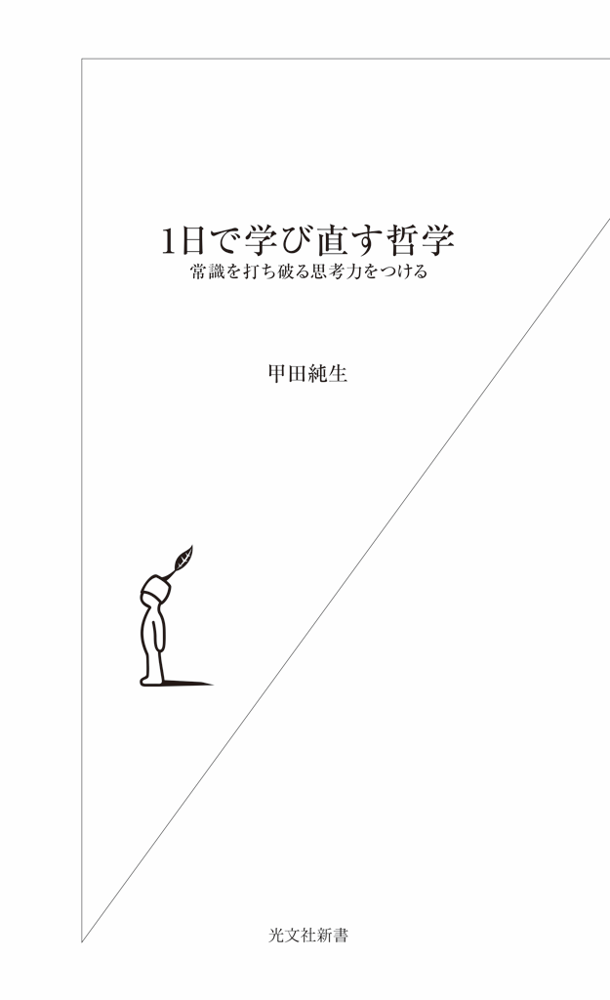
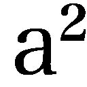
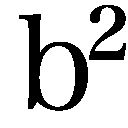
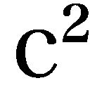
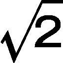
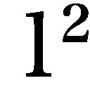

| １日で学び直す哲学～常識を打ち破る思考力をつける～ (光文社新書) | |
| 甲田 純生 | |
| (2013) | |

好きな哲学者はいますか？ 座右の銘はありますか？ 哲学者のどんな名言を知っていますか？
もしひとつも浮かばなかったのであれば、是非この本を読んでください！ 本書は、哲学を学び直したい人のための新書です。
「哲学」って堅くて難しいもの――。読者のみなさんは、哲学にそんなイメージをもっているかもしれません。私は大学で哲学を教えていますが、学生の多くもそのように感じているようで、４月の初めに私が教壇に立ったとき、学生たちは一様に不安そうな顔をしています。ですが授業が回を重ねるたびに、学生たちの顔は少しずつ輝いてきます。
そう、哲学って、面白いんです！
ソクラテスやプラトン。あるいは「無知の知」や「我思う、ゆえに我在り」といった名言。そう言えばどこかで耳にした覚えくらいはあるかもしれません。ですが、名前やキーワードを暗記しているだけでは、哲学を知っているとは言えません。哲学は、知れば知るほど奥の深いものです。と同時に、奥が深すぎて、どこまで学べばいいのか、あるいは何を学べばいいのか、専門家でない方にはわかりにくい学問でもあります。
本書は、哲学をはじめて学ぶ人にもわかるように書かれています。１日もあれば、最後まで読み通すことができるでしょう。それと同時に、哲学の奥深さに触れることができるようにしてあります。
どんな哲学にも、哲学者の生き様が表れています。プラトンは、師であるソクラテスの死に衝撃を受け、その死を乗り越えながら師の思想を発展させていきました。生命の不思議さに心打たれたアリストテレスは、生き物を観察しながら自分の哲学を構築していきます。デカルトは数学が大好きで、哲学を数学のようにしようとします。
抽象的な議論ばかりが展開されているように見える哲学ですが、それらは哲学者たちの人生から絞り出されたものです。そこには、彼らの魂が息づいています。哲学とは生きることそのものなのです。
だからこそ、哲学には大きな力があります。
現代ドイツを代表する哲学者ハイデッガー（第五章参照 ） は、哲学は学問ではない、と言っています。それは哲学が、単に人間や世界の成り立ちを説明するだけのものではなく、「自分が変わること」と「世界が変わること」を最終的に目指すものだからなのです。
自分の人生に疑問を抱いていませんか？ 人との関わりに悩んでいませんか？ 世の中、何か間違ってる、と憤っていませんか？
そういった問題を解消するためには、カップラーメンのような即席の答えを求めるのではなく、腰を落ち着けて物事を深く考えてみる必要があります。
様々な情報があふれ、何事にもスピードが要求される時代だからこそ、じっくりと「考えること」に取り組んでみませんか。自分の人生を一度見直してみませんか。
そう、哲学を学び直すのは、いまなんです。
本書のコンセプト
さて、私はいつも一回目の授業で、授業全体のプランや授業の目的などを話すことにしていますので、本書でもそれにならうことにします。
哲学は古代ギリシアにはじまり、２０００年以上の歴史をもちます。そしてその間には、ソクラテスやプラトン、アリストテレス、アウグスティヌスやトマス・アキナス、デカルト......と、有名な名前だけを挙げていってもかなりの数にのぼる哲学者が登場します。哲学史を順にたどってこれらの哲学者を紹介しようとすると、主な哲学者だけに限ったとしても、本の内容は「この哲学者は大体こんなようなことを言いました」「この哲学のキーワードは～です」といった、薄っぺらな知識の寄せ集めになってしまいます。それは、コーヒーにお湯を加えて何倍にも薄めたようなもので、もうコーヒーの味なんかしない「黒い水」と同じです。そんな本が面白いとは、少なくとも私は思いません。
もちろん、入門書なのですから、「哲学」という原液を何らかの形で薄めてやる必要があるのも事実です。けれども、薄めるにしても、哲学の面白さを伝えるためには、その「旨み」がまだわかる程度にしておかなければなりません。
では、哲学の歴史など完全に無視してしまえばいいでしょうか？ それはそれで、哲学について何か書くときのひとつの考え方だと思います。ですが本書では、哲学の歴史を無視するのではなく、ある程度は哲学の歴史に沿った記述をしつつ、哲学のエッセンスと面白さを伝える試みをすることにしました。
哲学を学んで、ものの見方を１８０度ひっくり返す思考を身につける
哲学の歴史をどう紡ぐか。そこには、紡ぎ手がその歴史を、ひいては「哲学」そのものをどうとらえているかが、色濃く反映されます。
本書で哲学史を紡ぐときの導きの糸、それは、
哲学は思考のラディカリズムである。
ということです。これが本書を貫く１本の糸です。ただし、この糸は２本の糸がより合わさってできています。
radical という英単語は、ふつう、人や思想などが「急進的」「過激」であること、といった意味で用いられます。本書で言う「ラディカリズム」も、まずはこの意味で使われていて、それは「常識的なものの見方を１８０度ひっくり返してしまうような思考の力」のことです。いわば思考のアクロバットで、そこに哲学の面白さ、そして醍醐味があります。
ところが、radical には、「根本的な」というもうひとつの意味があります。
radical の語源は、実は「根っこ」（ラテン語でradix） です。つまり「思考のラディカリズム」とは、「物事をその根本から考え抜く」ということでもあるのです。
「ラディカリズム」という言葉がもつこの２つの意味は、哲学においては密接に結びついています。物事をその根本から考え抜いていくと、ついには常識を覆すようなものの見方にたどり着いてしまう――。それが哲学なのです。
本書の構成
最後に本書の構成についてお話ししておきましょう。広い意味での哲学の中には、論理学と倫理学も含まれます。これらは、それぞれ「学」を名称にもっていることもあって、しばしば独立に扱われます。
論理学は、思考の「形式」に関する学問です。「形式」に関するものですから、当然思考すべき「中身」をもちません。そのため、論理学に思考のラディカリズムを求めることはできません。
倫理学は道徳的価値を扱う学問です。そこにはもちろん、「物事をその根本から考え抜く」という意味でのラディカリズムはあります。その一方で、道徳的価値そのものは、あくまでも常識の範囲内に収まるものです。倫理学は、「常識を１８０度ひっくり返してしまう」ようなものであってはならないのです。
論理学にも倫理学にも、本書が目指す「思考のラディカリズム」を求めることはできません。そこで、論理学と倫理学は除外することにしました。そうすることで、哲学の姿をより首尾一貫したものとして示すことができるからです。
論理学と倫理学を除外した上で、本書の骨格をなす哲学者８人を選びました。ピタゴラス、ソクラテス、プラトン、アリストテレス、デカルト、カント、ヘーゲル、ハイデッガーです。
ピタゴラスが冒頭におかれていることは、この本の独自な点です。哲学史においてピタゴラスがこれほど大きく扱われることは、ふつうありません。私がピタゴラスを重視するのは、そこに「思考のラディカリズム」がはじめて、明確な形で見 出 せるからです。
それ以外の７人については、他の哲学者たちを押しのけて選ばれたことに、異論の余地はないでしょう。ソクラテスは著作を残していないため、ソクラテスの専門家というのはいません。ですが、プラトン、アリストテレス、デカルト、カント、ヘーゲル、ハイデッガーについては、日本でも数多くの研究者がいて、多くの論文や著作を発表しています。それは、これ以外の哲学者の比ではありません。多くの学者が研究しているということは、それだけ重要な哲学者だからです。
ソクラテス、プラトン、アリストテレスは、古代哲学のビッグ・スリーです。知名度から言っても、また哲学史に残した足跡においても、この３人に勝る哲学者は、古代においてはいないでしょう。プラトンとアリストテレスについては、膨大な著作が残されています。それらは、人類の英知の輝かしい遺産なのです。
デカルトは西洋近代の哲学の礎 を築いた哲学者です。「我思う、ゆえに我在り」という有名な言葉によって哲学の第一原理を見出し、それゆえ「近代哲学の父」とも称されます。近代の哲学はデカルトからはじまるのです。そのため、哲学を語る上で、デカルトを外すことはできません。
デカルト以降の哲学で最も重要なのはドイツ観念論ですが、その中でもとりわけ重要な哲学者が、カントとヘーゲルです。特にカントは、「カント以前の哲学はすべてカントへと注ぎ込み、カント以後の哲学はすべてカントから発する」と言われるほど、近代哲学の要 となる哲学者です。またヘーゲルは、アリストテレスと比肩される、壮大な哲学体系を築いた偉大な哲学者で、マルクスや現代哲学に与えた影響も計り知れません。カントとヘーゲルなくして、近現代の哲学を語ることはできないのです。
20 世紀に生まれた哲学の中でもとくに重要なのが、現象学と実存哲学です。ハイデッガーはこの２つの結節点に位置する哲学者で、「20 世紀最大の哲学者」と称されることもある、重要な哲学者です。また、その独特の文体に支えられ強烈なオリジナリティーをもった哲学は、不思議な魅力を放っています。
これら８人の哲学者を本書の骨格として配置し、それ以外の哲学者については、本書のコンセプトから必要だと思われる範囲で取り上げることにしました。また、本文では扱われなかった著名な哲学者については、コラムで取り上げることで、哲学史の知識もひととおり得られるように配慮しました。
中世の哲学は、それ自体では興味深いものですが、この本では割愛することにしました。この時代、「哲学は神学の僕 」と言われ、哲学といえども、そこで論じられることの多くはキリスト教神学に関わる内容です。それゆえ中世の哲学について論じるためには、いったん哲学から離れて、まずはキリスト教について論じなければなりませんし、その上、多くの日本人にとってはあまりなじみのない神学上の議論を展開しなければなりません。それゆえ、中世の哲学については深入りせず、コラムで取り上げるにとどめることにしました。
第一章と第二章では、古代の哲学を扱います。第三章以降で扱われるのは近代の哲学ですが、第三章が近現代のフランス哲学、第四章と第五章が近現代のドイツ哲学というように、近代以降は複線構造になっています。
このように、本書は哲学史の大きな流れに配慮したものになっていますが、かといって、哲学史の本ではありません。本書の目的はあくまでも、哲学のエッセンスとその面白さ、醍醐味を伝えることにあります。この本を読んで哲学の世界に目を開かれ、「もっと哲学を学んでみよう！」と思われたなら、著者としてこれに勝る喜びはありません。
三平方の定理
古代ギリシアの哲学者で有名なのは、なんと言ってもソクラテス、プラトン、アリストテレスの３人です。ですが、哲学史をひもといてみると、ソクラテスに至るまでにタレス、アナクシマンドロス、アナクシメネス、デモクリトス......と、それ以外にも多くの哲学者が名を連ねます。
これらの哲学者はそのほとんどが、ソクラテスよりも前の時代か、ソクラテスと同時代に生きた人たちで、「ソクラテス以前の哲学者」として一括されてきました。一般にはあまり知られていない哲学者たちですが、その中ではピタゴラスは、群を抜いて知名度の高い哲学者でしょう。
ピタゴラスの名を有名にしているのは、ピタゴラスの定理（三平方の定理） です。これは直角三角形に関する定理で、直角をはさむ二辺をa 、b とし、斜辺をc とすると、 ＋ ＝ という関係が成り立つ、という定理です。
この定理とともにピタゴラスの名が知られているために、哲学の本の冒頭をピタゴラスの名で飾るのは、意外に思われたかもしれません。ですが、厳密に言えば、ピタゴラスは哲学者でも数学者でもないのです。
ピタゴラスは秘教集団の教祖？
ピタゴラスは紀元前５７０年頃、エーゲ海に浮かぶサモスという島に生まれました。生年は正確にはわかっていません。40 歳の頃、南イタリアで神秘主義的な宗教集団を組織したと言われています。この言い伝えに従えば、ピタゴラスは数学者や哲学者というよりは、むしろ宗教団体のボスだ、ということになるでしょう。
ピタゴラスの生涯は謎に包まれていて、はっきりわかっていることはあまり多くありません。ピタゴラス自身が著作を残していないため（失われてしまったのか、それとも本を書かなかったのか、ということすらわからないのです） 他の人が書いたものを通してしかピタゴラスについて知ることができない上に、その多くが伝承の域を出ません。そのため、ピタゴラス教団の教義内容も、どこまでがピタゴラス自身が説いたもので、どこからが弟子たちの手になるものなのか、わかっていません。「ピタゴラスの定理」ですら、実際に発見したのはピタゴラスではないだろうと言われています。
それゆえ、ピタゴラス教団の教義内容については、とりあえずピタゴラスの名のもとにお話しすることにします。
神々への信仰から農民信仰へ
秘教集団であったために、教団の内実も詳しくはわからないのですが、その教義はオルフェウス教の影響を強く受けたものであったようです。
古代ギリシアにはもともと、ゼウスやアポロンといったギリシア神話に登場する神々がいて、それにもとづく信仰がありました。ところが紀元前８世紀になると、農民信仰に起源をもつ新たな宗教が生まれてきます。オルフェウス教もそのひとつです。
その教義の中心をなすのは、魂の不死とその輪 廻 転生です。それによると、魂は本来神聖で穢 れなきものなのですが、この世においては肉体に閉じ込められ汚された状態にあります。そして肉体が滅びれば、魂はまた別の肉体へと宿り、転生を続ける定めにあります。それゆえ、厳しい戒律生活を送り禁欲することで魂を浄化し、輪廻の業 から解脱することで、魂だけの本来の生に戻ることができる――。これがオルフェウス教の教えだったのです。
この教えは、ピタゴラスを介して、ソクラテス、プラトンにまで影響を与えることになります。
豆はセクシュアルな食べ物だった？
ピタゴラス教団の教えの中心をなすのも、魂の不死とその輪廻転生でした。
クセノパネスという哲学者がピタゴラスについて、次のような話を伝えています。ピタゴラスが町の往来を歩いているときに、子犬が鞭 打たれているのに出くわしたそうです。それを見たピタゴラスは「やめてくれ。その犬には私の友人の魂が宿っている。鳴き声を聞けばわかる」と言った、というのです。
教団には厳しい戒律があったようですが、言い伝えられているものの中には「豆を食べてはいけない」という、ユニークなものもあります。理由はよくわかりませんが、アリストテレスは「恥部に似ているからではないか」ということを理由として挙げています。
要するに、性的刺激を避け、禁欲的生活を送れ、ということなのでしょう。当時は、ポスターや週刊誌に刺激的な写真があふれている現代の生活とは随分違っていたでしょうから、豆程度でも十分刺激的だったのかもしれません。
豆は「食べてはいけない」というだけのものではなかったようで、ディオゲネス（『哲学者列伝』の著者として知られる、３世紀の哲学史家） による次の言い伝えは、それに触れることもタブー視されていたことをほのめかしています。それはピタゴラスの最 期 に関するものなのですが、やや喜劇めいています。
ピタゴラスが弟子たちといっしょに集会を開いていたときに、教団に入会できなかったことを妬 んでいた者たちがその場に火をつけた、というのです。ピタゴラスは逃げ出そうとしますが、行く手を豆畑に阻まれてしまいます。単なる畑ですから、ふつうなら踏み越えていけばいいのですが、ピタゴラスは「豆を踏むぐらいなら捕まったほうがいい」と言って、追っ手に追いつかれてしまい、殺されてしまったというのです。
食については、豆を食べてはいけないという戒律以外に、「パンをちぎって食べてはいけない」とか「心臓を食べてはいけない」といったタブーがあったようです。
パンに関する戒律の理由はよくわかりませんが、心臓を食べてはいけないというのは、心臓を食べることによって悲しみで自分を苦しめることになるからだ、と言われています。おそらく心臓を食べることで、その心（心臓） に宿る様々な感情が自分の中に入ってきて、それが禁欲や解脱の妨げになる、と考えられていたのでしょう。
知恵を愛する者
ディオゲネスはピタゴラスについてもうひとつ、哲学に関わる重要なことを伝えています。自分のことを「知恵を愛する者だ」と最初に言ったのがピタゴラスだというのです。
「知恵を愛する者」と訳してしまうと、哲学とのつながりがわかりにくくなりますが、哲学＝philosophy という言葉は、ギリシア語に語源をもつ言葉で、元来は「知恵を愛すること」を意味しました。
それゆえピタゴラスが自分のことを「知恵を愛する者だ」と言ったということは、今日の言葉で言えば、自分を哲学者と名乗った、ということなのです。ただし、それは今日私たちが「哲学者」という言葉から想像するものとは幾分違ったイメージで使われていたでしょうから、ピタゴラスの場合はやはりもとの意味のまま、「知恵を愛する者」と訳しておいたほうがいいかもしれません。
魂を清めるムーシケー
ここまでの話で、ピタゴラスの定理からくる「数学者」のイメージはかなり払拭されたことでしょう。むしろ、以上のような宗教集団と数学の間に一体どんなつながりがあるのだろう、と疑問に思われたのではないでしょうか。ところが、この教団と数学とは、その教義の最も内奥においてつながっているのです。
ピタゴラス教団の教えが目指すところは、魂の浄化でした。この目的を果たすために、２つの手段が用いられたのです。
ひとつはすでに見たように、戒律を守り禁欲的な生活を送ることです。それは、魂を閉じ込めている肉体から魂をできる限り切り離すことを目指しています。もうひとつは「ムーシケー」で、これは魂そのものをさらに浄めることを目的としていました。
musicの枠におさまらないムーシケー
古代ギリシア語のムーシケーはmusic の語源となる言葉ですが、単に音楽を指すのではなく、学芸一般を意味する言葉であったようです。例えば、プラトンの『国家』の中では、肉体の鍛錬のために体育があり、魂の鍛錬のためにムーシケーがある、と言われています。
魂を鍛えるムーシケーは、今日で言えば、学問も芸術もひっくるめて広く「教養」とでもいうべきものを意味する言葉なのです。それは、単なる知識や技術の寄せ集めではなく、あくまでもそれらによって魂を鍛え浄めるものです。ただし、ムーシケーという言葉は、単に音楽や詩といった文芸を指すことも多かったようです。
古代ギリシアにおいて以上のような意味を担っていたムーシケーは、ラテン語では「ムーシカ」と訳され、中世では「音楽」とほぼ同義で用いられるようになります。それでも、ムーシカは、今日私たちが「音楽」という言葉で思い浮かべるものとは少し異なるニュアンスをもっていました。
中世という時代がはじまろうという頃に、新プラトン学派に属するボエティウスという哲学者は、ムーシカを３つに分けて論じています。「ムーシカ・ムンダーナ」と「ムーシカ・フマーナ」、そして「ムーシカ・インストゥルメンタリス」です。
ムーシカ・ムンダーナとは、天体の運動に見られるような、全宇宙の調和・秩序のことです。ムーシカ・フマーナは人間における魂の調和のことで、最後のムーシカ・インストゥルメンタリスがいわゆる「音楽」です。
音楽が音の調和であることを考えれば、３つのムーシカを貫いているのが「調和」であることは一目瞭然でしょう。調和がムーシカの本質 なのです。ちなみに、中世ではムシクス（今日のmusician に相当する語） と言えば音楽家のことではなく、宇宙の調和を認識する学者のことを意味していました。
数の秩序が音楽になる
ムーシケーに関わる以上の話はすべて、ピタゴラス教団におけるムーシケーの意義と深い関わりをもっています。
魂を浄化するムーシケーは、ピタゴラス教団においては、まずは音楽のことでした。ただしそれは、「音楽による癒し 」とはかなり異なっていて、むしろ中世におけるムシクスの営みに近いものでした。
ピタゴラス教団の人たちは、ある音とある音の間には数的比例関係があることを発見しました。一弦琴（弦が１本だけはってある楽器） を例にしましょう。
いま仮に、解放弦（弦を指で押さえない状態） の音が「ド」であるとします。この弦のちょうど真ん中を押さえて音を出すと、オクターヴ上の「ド」の音が出ます。つまり、弦の長さが半分になれば、音はオクターヴ上になるわけですから、ある音とオクターヴ上の音（８度上の音） では、弦の長さは２対１の関係にあることになります。
次に、弦の３分の２の所を押さえて音を出すと、「ソ」の音（５度上の音） が出ます。つまり「ド」の音と「ソ」の音では、弦の長さは３対２の関係にあることになります。今度は弦の４分の３の所を押さえて音を出すと、「ファ」の音（４度上の音） が出ます。「ド」の音と「ファ」の音の弦の長さは４対３の関係です。
このように、音楽を構成する音には数的秩序あるいは数的調和があって、その秩序・調和を認識することが、彼らにとっての「ムーシケー＝音楽」だったのです。
宇宙における秩序の認識
また音楽だけではなく、宇宙の秩序を認識することもムーシケーと呼ばれました。「宇宙」を表すために、秩序を意味する「コスモス」という言葉を最初に用いた人がピタゴラスであったと伝えられていますが、彼らにとって宇宙の秩序とは、数で表される秩序のことだったのです。
この考え方自体は、今日、自然科学者たちが自然の秩序を法則という形で数式化することを考えれば、それほど奇異なことではないでしょう。自然が数式で表現されるように、ピタゴラス教団においては、宇宙の秩序は数としてとらえられたのです。
ピタゴラス教団におけるムーシケーとは、音楽における数的秩序を認識することであり、さらには宇宙における数的秩序を認識することでした。ムーシケーとは彼らにとって、数と関わることだったのです。
数学による魂の純化
彼らがこれほどまでに数と関わることを重視したのは、数的秩序が汚れなき魂によって のみ認識されるもの、と考えられていたからです。
この考え方は、感覚や感情によってではなく、理性によって こそ自然の法則を認識することができる、と私たちが考えるのと同じことです。
汚れなき魂だけが触れることができる数に関わることによって、魂の本来の働きを純化すること、それがムーシケーの役割だったのです。
要するにこういうことです。ある能力を眠らせることなく正しく機能させ続けるには、その能力を発揮させる機会を常にもち続けなければなりません。そうしなければ、その能力は錆 びついてしまいます。計算能力であれば、日頃から計算問題に親しみ、その作業をし続けることによって、能力を維持できます。また、どれだけ鍛え抜かれた肉体であっても、鍛錬を怠ればその能力は衰えてしまいます。
ピタゴラス教団が数学を重視し、数学の研究にいそしんだのもこれと同じです。魂を清める 、すなわち魂を純粋に保つためには、魂の働きを維持するようにしなければなりません。彼らは、魂のみがとらえることのできる数的秩序に触れ続けることで、魂の働きを維持し、さらには高めようとしたのです。
ピタゴラスの思想のモチーフ① 数学の優位
そろそろピタゴラスの思想を総括し、そこからのちの哲学史を貫くモチーフを析出しましょう。
私たちは、ピタゴラスの思想の中に、４つの重要なモチーフを認めることができます。ひとつは数学の優位です。数学は哲学に「演繹的推理こそ学問の理想である」という信念を与えたのです。
数学、特に幾何学は、確実とされる公理から定理が導き出され、そしてその定理からすべての個別命題が導き出されてきます。公理や定理のような普遍的な規則から個別的な命題が導き出されることを、演繹的推理と言います。
このように、原理からすべてが導き出されるあり方は学問の理想です。なぜなら、それによって学問は「厳密なもの」となるからです。そしてその厳密さは、数学という学問において、現実のものとなっているのです。
それゆえ、哲学が「厳密な学」たることを目指そうとするとき、数学は常にその模範となります。哲学の歴史には、いつも数学が影のように寄り添っているのです。
のちに扱うプラトンのイデア論においても、数学は重要な役割を果たしています。近代になると、デカルト（第三章参照 ） がデカルト座標（ｘ軸とｙ軸を交差させた座標） と解析幾何学を創始しています。また、スピノザ（コラム④ 参照 ） は主著『エチカ』を、幾何学的方法によって論証された体系として構築しようとしました。ライプニッツ（コラム④ 参照 ） は難解な形而上学をつくり上げながら、他方ではニュートンとほぼ同時期に、微分積分学を生み出しています。現代に目を向けると、現象学を創始したフッサール（コラム⑥ 参照 ） は自らの研究を数学の研究からはじめています。論理実証主義や数理哲学における哲学と数学の密接な関係については、言うまでもありません。
哲学には、厳密な学たる数学に恋い焦がれる一面がある のです。
ピタゴラスの思想のモチーフ② 神的なもの
ピタゴラスの思想に見出すことができる第２のモチーフは、「神的なもの」です。
ピタゴラス教団は宗教集団ですから、ピタゴラスの思想そのものに神的なものが見出されるのは、当然のことでしょう。ところが哲学史をひもといてみると、神学が王座に君臨していた中世はともかくとして、近代以降になっても、哲学から「神」は払拭されないのです。
近代哲学の基礎を築いたデカルトの哲学でも、倫理学を幾何学的体系として構築しようとしたスピノザにおいても、神は重要な位置を与えられて登場します。ドイツ観念論においても、神は哲学におけるその座を降りることはありません。20 世紀になっても、例えばウィトゲンシュタイン（コラム⑦ 参照 ） は、神については「語れない」という屈折した仕方で、神について語ります。
なぜ、近代以降になっても哲学から神が消えないのか。これは難しい問題です。それに、一口に神と言っても、神が要請される理由は哲学体系ごとに異なります。ただ、こまかい話は抜きにしてざっくばらんに言ってしまえば、次のように言えるでしょう。
世の中の成り立ちや人間存在の根っこを問うのが哲学だとすれば、その根っこに近づけば近づくほど、人間の知識や知恵の限界に近づいてきます。その限界の向こうに見えるものが神と呼ばれているのです。
だとすれば、物事の根本を問おうとする哲学の営みそのものが、神に近づこうとする営みなのかもしれません。
ピタゴラスの思想のモチーフ③ 魂の不死
第３のモチーフは「魂の不死」です。
これは、キリスト教の教義とも結びついて、哲学史の中で様々に形を変えて現れてきます。例えば、カント倫理学においては、「最高善の実現のためには魂の不死が要請される」というように、「魂の不死」そのものがズバリ、哲学体系の中に現れてきます。
これほどはっきりした形ではないにしても、西洋の哲学が理性について語るとき、哲学は知らず知らずのうちに「魂の不死」のモチーフを繰り返しているのです。なぜなら、西洋思想の伝統においては、人間の理性は神の英知を分有したものだからです。理性というのは、人間の心の能力の中の「不死」の部分に与えられた名称だと言えるかもしれません。
魂を不死のものとするということは、魂を肉体とは別のものと考えるということです。それゆえ、「魂の不死」というモチーフは、魂と肉体の二元論をも意味します。
ピタゴラスの思想のモチーフ④ 感覚的なものと超感覚的なものの価値の逆転
ピタゴラスの思想における第４の、そして何よりも重要なモチーフは、感覚的世界と超感覚的世界との間の価値の逆転 です。
ピタゴラスにとっては、感覚的世界は、肉体に閉じ込められた魂が肉体を通して見る世界にすぎません。それは本来の魂が見るべき世界ではないのです。清浄なる魂が見るべき世界は、数学的秩序が支配する神的世界です。それは「死すべきものたち」がいる世界と異なり、感覚を超えた世界（超感覚的世界） 、永遠なるものが存在する世界なのです。こうして、感覚を超えた世界に無上の価値が与えられることになります。
ここには常識を１８０度反転させる「価値の逆転」があります。ここから一歩踏み出すだけで、イデアの世界を真実の世界とするプラトン哲学の世界が開けてきます。
感覚的世界と超感覚的世界の価値の逆転――。これは、西洋哲学を支配する重要なモチーフなのです。
ラッセル（１８７２～１９７０、イギリス生まれの哲学者） は『西洋哲学史』の中の「ピタゴラス」の章を次のような言葉で結んでいます。「プラトン主義であると見えているものが、よく分析してみると実はその本質において、ピタゴラス主義であることがわかってくる」。
ピタゴラスの哲学史における影響は、一般に考えられているよりも大きなものであると言えるでしょう。
 という迷惑な発見
最後に、ピタゴラスの定理にまつわる小話で、この節を終えることにしましょう。実はこの定理の発見は、教団に衝撃と戦慄を与えたのです。
仮に、直角三角形の直角をはさむ二辺ａ、ｂの長さがどちらも１センチであるとしましょう。 ＋ ＝ ですから、この場合、 ＝ ＋ ＝2 となり、ｃの長さは センチとなります。
当時はまだ、無理数という名前も という表記も存在しませんでした。それでも、割り切ることもできなければ分数のような比の形でも表現できない数が存在しうる、ということを彼らは理解したのです。
このような数字の存在は、調和 を本質とするはずの宇宙の秩序を乱すものであり、ピタゴラス教団の教義の根本を覆しかねないものだったのです。そのため、無理数を発見した教団は、このことをひた隠しにしたと伝えられています。
少し前に、素粒子ニュートリノの速さが光速を超えたことが観測された、というニュースがセンセーショナルに報道されたことがありました。しばらくしてから、観測装置に不備があった可能性が指摘され、観測結果は疑わしいということになりました。
「ニュートリノが光速を超える」という報道は、一般の人にとってはおそらく「ふ～ん、そうなんだ」という程度のものだったかもしれませんが、物理学者にとっては天と地がひっくり返るほどの衝撃だったようです。私の友人の物理学者も「これが本当だったら大変だ」と、深刻な顔をしていました。
アインシュタイン以降の物理学は、光速が最速であることを前提にして組み立てられているため、この報道が事実なら、現在の物理学はそのかなりの部分を書き換えなければならなくなる、ということだったようです。
しかめっ面 の友人の顔を見ながら、無理数を発見したときのピタゴラス教団の人たちの面 持 ちもこんな感じだったのかもしれないな、と思いました。ある意味では、科学も宗教とあまり変わらないのかもしれません。
小アジアのミレトス学派
ここで、ソクラテス、プラトンの哲学に入る前に、ピタゴラスより以前の古代ギリシア最初期の哲学について触れておきましょう。というのも、そこにはピタゴラスの思想の中には確認できなかった、ある重要なモチーフが隠されているからです。
古代ギリシア最初の哲学は、ギリシア本土ではなく、小アジア（現在のトルコ周辺） にあったギリシアの植民都市ミレトスにおいて確認されています。このミレトスで活躍した哲学者がタレス、アナクシマンドロス、アナクシメネスの３人で、一般にミレトス学派と言われています。
正確な生没年はわかっていませんが、タレスとアナクシマンドロスが紀元前７世紀後半から６世紀半ば、アナクシメネスが紀元前６世紀前半から６世紀後半であろうと考えられています。また、アナクシマンドロスはタレスの弟子であり、アナクシメネスはアナクシマンドロスの弟子であったと伝えられています。
ミレトス学派の関心事は、「万物のアルケーは何か」ということです。「アルケー」というのは「第一のもの、起源、原理、根拠」を意味するギリシア語で、今日の私たちは「建築」を意味するarchitecture に「アルケー」の名残りを見ることができます。
哲学がはじまる以前、この世の成り立ちを説明したのは神話でした。最初期の哲学は、「世界の成り立ちを説明する」という動機を神話から引き継ぎながら、「物語」というたとえ話の形式を払拭することで成立します。それが「万物のアルケー（根源、起源） は何か」という問いなのです。
万物は何からできているか
この問いに対して、今日の私たちであれば、素粒子であるとか原子であると答えることでしょう。物質を構成する粒子がまず存在し、それが集まって無機物ができ、そこからさらに生命という有機物が生まれる――。これが、私たちの知っている「世界の成り立ち」です。この世のすべてのものは、何らかの粒子からできていると考えられます。
それに対して、タレスは「万物のアルケーは水である」と言い、アナクシマンドロスは「ト・アペイロン（無限なるもの） である」と言い、アナクシメネスは「空気である」と言った、と伝えられています。
彼らが「アルケー」という言葉で「根源物質」のことを考えていたのだとしたら（実際、哲学史の本によってはそのように解説してあります） 、例えばタレスは、この世の中のものはすべて水からできていると考え、アナクシメネスは空気からできていると考えていた、ということになります。
そうであれば、彼らの考え方は明らかに間違っており、私たちは古代哲学の始原の中に、単なる歴史的事実以外のものを見出すことはできないでしょう。根源物質を水としようが空気としようが、私たちにとっては神話とさして変わらぬ話です。
万物のはじまりは卵のようなもの
ここで、３人の学説をもう一度よく見てみましょう。タレスとアナクシメネスが「水」と「空気」という、今日の私たちにとっても非常にイメージしやすいものをアルケーにしているのに対して、アナクシマンドロスは「ト・アペイロン（無限なるもの） 」という、非常に奇妙な答えを提出しています。一体これは何でしょうか？『哲学の歴史１』を見ると、「ト・アペイロン」に関して次のような説明がなされています。
「全宇宙の存続を保証する『元のもの』（注：アルケーのこと） は、あらゆる量と大きさを凌駕する『無尽蔵』のものでもなければならないであろうが、より重要視されていたのは、むしろ......質的な無限性、すなわち『無限定・無規定』なものということであったに違いない。」（『哲学の歴史１』、中央公論新社）
アナクシマンドロスの思想においてより重視されていたのは、「質的な無限性、すなわち『無限定・無規定』なものということであった」と言われています。「質的に無限定・無規定なもの」というのはわかりにくいですが、卵のようなものをイメージすればいいでしょう。
卵は生きてはいますが、まだ猿や人間といった生物の姿をとってはいません。卵だけを見ていても、それが鳥なのか馬なのか人間なのかわからないでしょう。つまり、「それがどういう生物なのか」ということに関して無規定 なのです。
ところが、卵は細胞分裂を繰り返し、少しずつ各器官を形成していきます。細胞の各部分が、手や足といった器官へと決定されていくのです。こうして最終的には、魚なのか、鳥なのか、人間なのかがわかるようになります。
「ト・アペイロン」という概念の根っこにあるのは、おそらくこの卵のイメージなのでしょう。卵から生物が生まれてくるイメージで万物の生成をとらえたのが、アナクシマンドロスの思想だと言えます。
生命体のアナロジー
翻ってタレスとアナクシメネスの思想をもう一度見てみると、彼らがアルケーとしたものがすべて、生命と関わりの深いものであることがわかります。生物は水なしで生きることはできません。また、空気なしでも生きることができません。
つまり彼らが「万物」の成り立ちを説明しようとしたとき、そのモデルとなっていたのは生命なのです。彼らは、存在するものすべてのモデルを生命体に求めたのです。
これは、素粒子や原子という「生命をもたないもの」を世界の成り立ちの根っこにおく、今日の自然科学的な世界観とは、まるで異質な考え方です。この違いは、自然に対する彼らの考え方にも表れています。
ピュシスをめぐる思考
日本語の「自然」に相当するギリシア語は「ピュシス」です。ただし、「自然」という言葉で私たちが理解しているものよりは、広い射程をもった言葉であったようです。
ピュシスは、物理学を意味する英語のphysics の語源となっています。ピュシスはラテン語ではnatura と訳され、それが英語のnatureやドイツ語のNatur になります。いずれの語の場合も辞書をひくと、「自然」以外に「本質」「本性」といった訳語が見出されます。
このピュシスという言葉について、ハイデッガーは次のように説明しています。
「ピュシスとはギリシア人にとって、有るものそのもの、有るもの全体を呼ぶ第一にして本質的な名称であった。彼らにとって有るものとは、おのずと生育し何を目ざすのでもなしに発現し生起し、そして自己の内へと還り消えゆくもの、だがいつの場合にも、立ち現れ、そして自己の内へと帰還する理法であった。」（『ハイデッガー全集 第43 巻 ニーチェ、芸術としての力への意志』）
ピュシスは「有るもの全体」を呼ぶ名称であった、と言われています。ただし、それは単なる全体、有るものの寄せ集めではありません。この語が名指そうとしているのは、有るものが立ち現れそして消えていくという、生成消滅の全体なのです。
私たちは、彼らのこのような自然観を「幼稚なもの」として一笑に付したくなるかもしれません。ですがその前に、私たちが信奉している自然観が、彼らの自然観を笑えるほど立派なものであるのか考えてみましょう。
今日、これほどまでに自然科学が発達しているにもかかわらず、私たちは無機的な物質から生命が誕生する謎も、生命から人間の意識や精神が生まれる謎も、ほとんど解明できずにいます。古代ギリシアの哲学者たちが私たちの自然観を知ったならば、「お前たちのものの見方は、自然をちっとも説明できていないではないか？」と失笑するかもしれません。私たちは、彼らの自然観を幼稚なものとして捨て去るほど、立派な自然観を持ちえているわけではないのです。
古代ギリシア人が存在するものを生命のモデルでとらえたということは、端的に言えば、彼らが自然を何らかの「力」としてとらえていたということです。彼らにとって自然とは、「何かを生み出す力を内に宿し、この力ゆえにおのずから生成し現れ出てくるもの」なのです。 自然をこのようにとらえる見方を、「ピュシスをめぐる思考」と呼んでおきましょう。
宇宙、そして自然は、絶えず運動を続けています。しかもその運動の中には、生命を生み出すような運動も含まれています。自然はその本性として、生成する力、生み出す力を蔵しているようです。
だとすれば、私たちは現段階では、ピュシスをめぐる思考を幼稚な思考として安易に切り捨てることはできません。そこには、自然科学的なものの見方ではとらえきれない真理が隠されているかもしれないからです。事実、ピュシスをめぐる思考は、哲学において近代以降も綿々と受け継がれていくのです。
命あるものはいつかは死にます。生と死は生命においてひとつです。私たちは次の章で、西洋哲学の源流において、ある人物の死が与えた衝撃を確認することにしましょう。
それは、ソクラテスの死です。
【コラム① 】群雄割拠の古代論者たち
ミレトス学派の哲学者たちと同様、ソクラテス以前の他の哲学者たちについても資料が乏しく、生没年すらはっきりしないのが実情です。
ヘラクレイトス は紀元前６世紀前後に活躍した哲学者です。「万物は流転する」という言葉で知られ、この世の一切は変化してやまないと主張しました。また、「万物のアルケーは火である」と言ったとも伝えられています。ヘラクレイトスは、のちにヘーゲルやニーチェによって高く評価されることになります。
万物の生成変化を主張したヘラクレイトスに対して、一切の生成変化を否定したのがパルメニデス （紀元前６世紀後半生） です。パルメニデスは、運動や生成変化は感覚にもとづく錯覚にすぎず、理性によってとらえられる真理は不変不動で分割できない存在である、と主張しました。
この主張を論証しようとしたのがゼノン （紀元前５世紀初生） です。「飛んでいる矢は止まっている」「アキレウスは亀に追いつけない」といったパラドックスによって、運動そのものを否定しようとしました。パルメニデスもゼノンも、南イタリアの町エレアで活躍したため、エレア学派と呼ばれています。
ヘラクレイトスとパルメニデスという、まったく異なる立場を調停しようとしたのが、デモクリトス （紀元前５世紀末生） に代表される原子論者たちです。アトム（原子） とは「分割できないもの」という意味です。彼らは不変の原子の離散集合によってものの生成変化を説明することで、不変の存在を主張するパルメニデスの思想と、生成変化を主張するヘラクレイトスの思想を調和させようとしたのです。
プラトンあってこそのソクラテス
ソクラテスの名はプラトン、アリストテレスとともにあまりにも有名ですが、後二者と異なり著作を残していないため、私たちは直接ソクラテスの思想を知ることはできません。にもかかわらずソクラテスがこれほどにも有名なのは、弟子のプラトンがその膨大な対話篇のほとんどで、主要な登場人物としてソクラテスを登場させているからです。
ソクラテスについて書かれている古代の文献には、プラトンの著作以外にクセノポン（紀元前４４０年頃～、ギリシアの著作家） のものや、アリストパネス（紀元前４５０年頃～３８８年頃、ギリシアの喜劇作家） の喜劇などがあります。しかしソクラテスの思想ということになると、私たちは主にプラトンの著作に頼らざるをえません。
しかも、プラトンはその著作のほとんどを対話篇の形式で書いています（しかも対話者としてプラトン自身は登場しません） から、プラトンが書いていることのうちどこまでがソクラテスの思想でどこからがプラトンの思想なのかを、厳密に分けて考えることはできません。
私たちがソクラテスについて語るとき、プラトンというフィルターを外すことはできないのです。
ソクラテスの生涯
ソクラテスに関する確実な史実は、それほど多くはありません。生年は紀元前４７０年か４６９年であろうと推定されています。
ギリシアのアテナイの市民で、父は石材職人、母は助産婦であったと言われていますが、確かなことではありません。ペロポネソス戦争（アテナイを中心とするデロス同盟と、スパルタを中心とするペロポネソス同盟の間に起きた戦争） のときには従軍し、死の危険に臆することのない雄姿が伝えられています。紀元前３９９年、ソクラテスが70 歳のとき、「国家の認める神々を否定し、新しい神を導き入れ、青年たちに害を及ぼした」として告発され、裁判の結果死刑を言い渡されます。その１か月後、ソクラテスは獄中にて毒杯をあおぎ、帰らぬ人となったのです。
その裁判の様子、そして死に至るまでのソクラテスの言動は、プラトンの『ソクラテスの弁明』『クリトン』『パイドン』によって伝えられています。もちろん、どこまで史実を正確に伝えるものであるかはわかりませんし、プラトンによる脚色もかなりあることでしょうが、ソクラテスが死を恐れず従容として死に向かうさまは、読む人を静かな感動へと誘います。
ソクラテスはなぜ死ななければならなかったのか
それにしても、ソクラテスはなぜ死ななければならなかったのでしょう。
『ソクラテスの弁明』（以下『弁明』と略） の中では、訴状の内容について「青年を腐敗させ、国家の認める神々を認めずに、別の新しい鬼神のたぐいをまつるがゆえ」と述べられています。ギリシア哲学の重鎮田中美知太郎の『ソクラテス』によると、訴状はローマ皇帝ハドリアヌス（紀元76 年～１３８年） の時代まで保存されていたらしく、その頃残っていた文面の内容は、『弁明』に見られるものとほとんど変わらないものであるようです。
『弁明』でソクラテスは、証拠を挙げながら、訴状の内容がまったく無根拠なものであること、そして告訴の真の動機が嫉妬や中傷にあることを訴えています。
つまり、嫉妬や中傷を受けなければならないような言動があったことを、ソクラテス自身も認めていることになります。そして、人々の嫉妬や誹謗中傷を引き起こしたその言動こそ、まさに「哲学すること」だったのです。
無知を自覚していない者は馬鹿である
『弁明』によると、ことの発端はデルフォイ神殿での神託にあったようです。ソクラテスの仲間であるカイレポンが神殿に行って、ソクラテスより知恵のある者がいるかどうか尋ねたところ、「いない」とのお告げがあった、というのです。
ソクラテスは、自分は知恵のある者なんかではないと思っていましたが、その一方で神託が嘘 であると考えるのも不遜なことです。それゆえソクラテスは、とりあえず神託に反 駁 するために、世の中で知者だと言われている人の所に行ってみます。政治家、芸術家、手工芸者......。名のある人の所を訪ね歩いたのは、自分より知恵のある人間がいることを確かめるためです。
ところが、これらの人々は、知恵のある人物だと人から思われており、また自分でもそう思い込んでいるのですが、実際に会って話をしてみるとそうではなかったのです。
そして、相手が知恵者ではないことがわかったときに、なんと！ ソクラテスは「君は知恵があると思っているけれども、そうではないのだということを、はっきりわからせてやろうと努めた」（『弁明』） のです。
これは「あなたは自分のことを賢いと思っているようですが、ほんとうは馬鹿ですよ」と相手に告げるのと同じことです。
実際、哲学者というのは、こういうことをついしてしまう人種なのです。ですが、たとえそれが真実であるとしても、このような言動が人を怒らせないはずはありません。ソクラテスも「その結果、私はその男にも、またその場にいた多くの者にも、にくまれることになった」（前掲書） と言っています。巷で「知者だ」と言われている人を方々で訪ね歩いた結果、ソクラテスは次のような結論に至ります。
「この人間より、わたしは知恵がある。なぜなら、この男もわたしも、おそらく善美のことがらは、何も知らないらしいけれども、この男は、知らないのに、何か知っているように思っているが、わたしは、知らないから、そのとおりに、また知らないと思っている。だから、つまりこのちょっとしたことで、わたしのほうが知恵のあることになるらしい。」（前掲書）
巷間で知者だと言われている人たちは、自分では正義や善や美について知っているつもりですが、実際にはソクラテス同様、よく知らなかったのです。ですが、彼らにはその自覚はありません。それに対して、ソクラテスにはその自覚があります。自分の無知を自覚しているだけ、彼らより自分のほうが知者である――。ソクラテスは、神託をそう理解したのです。
これが哲学史上有名な、ソクラテスの「無知の知」です。
「勇気」の定義をめぐる問答
ところでソクラテスは、知者と言われている人は自分でも「知恵があると思っているけれども、そうではないのだということを、はっきりわからせてやろうと努めた」と言っていました。その方法が「問答法」です。
『弁明』では問答の様子は描かれていませんから、プラトンの他の著作を見てみることにします。初期の対話篇『ラケス』をとりあげましょう。この対話篇は、量的にコンパクトな上に、議論の道筋も追いやすいため、問答法を知るには格好の作品となっています。
『ラケス』のテーマは「勇気」です。このテーマをめぐって、ソクラテスの対話の相手をするのは、主にラケスとニキアスという２人の軍人です。ニキアスのほうは、ペロポネソス戦争時には名の知られた、アテナイの将軍であったようです。
ソクラテスは２人に向かって、「勇気とは何か」と尋ねます。２人は軍人ですから、そんな問いに答えることはわけもない、と自信をもって答えようとします。
まずラケスが「戦列に踏みとどまって敵を防ぎ、逃げようとしない人」が勇気ある人だ、と答えます。ですがこの答えは、勇気の一例にすぎません。問われているのは、戦いにおける勇気ではなく、「勇気」そのものなのです。ソクラテスは「すべてのばあいにおいて、同じものとして存在するその〈勇気〉 とは何であるか」（『ラケス』、傍点筆者） を答えてほしい、と言います。
そこでラケスは、勇気とは「魂の忍耐強さである」と答えなおします。ところがソクラテスは、「勇気」とは呼べないような忍耐強さの例をいくつも挙げて、この答えをも反駁してしまいます。例えば、より大きな利益を得るために、小さな利益しか得られない目の前の投資を辛抱する 投資家は、「勇気ある人」ではないでしょう。
今度はニキアスが、勇気とは「恐ろしいものと恐ろしくないものに関する知識」であると答えます。ただしニキアスは次のように付け加えます。例えば医者は「恐ろしいものと恐ろしくないもの」についての知識（病気と健康についての知識） をもっているが、こんなのは勇気ではない、勇気とは専門的な技術知を超えたものだ、と。また、無知ゆえに恐ろしいものを恐れないものは、単なる恐れ知らずであり、勇気あるものではない、と。
これに対して、ソクラテスはまず次の２点をニキアスに確認します。① 勇気というのは、節制や正義などと同様、徳の一部 であること。② 恐ろしいものとは恐れをもたらすものであり、恐れをもたらすものはこれからやってくる悪であり、それゆえ恐れとは、未来の悪を予期することであること。
次にソクラテスは、知識というものを次のように規定します。③ 一般的に言って、知識というのは普遍的なものであるから、その対象となるものについては、その過去についても現在についても未来についても扱うものである、と。
ところで、ニキアスは最初に勇気とは「恐ろしいものと恐ろしくないものに関する知識 」である、と言っていました。それが知識であるならば、③ に従って、未来、現在、過去のすべての「恐ろしいもの」＝悪についての知識でなければなりません。だとするとそれは、すべての場合についての、善と悪に関する知識だ、ということになります。ところが、④ このような知識は、徳の一部 ではなくてまさに徳そのもの なのです。
結論④ は最初の前提① に矛盾します。こうして、ニキアスの議論も論駁されてしまうのです。
このように、プラトンの対話篇で展開されるソクラテスの「問答」というのは、対話の相手の議論が間違っている、ということを示して終わります。まさに、『弁明』でソクラテス自らが述べていたように、相手が「知恵があると思っているけれども、そうではないのだということを、はっきりわからせて」終わるのです。
ところで、『ラケス』の中でソクラテスが求めていたものは、個別的な勇気の事例ではなく、「勇気」そのものとは何か、ということでした。それは、個々の事例すべてを貫く、普遍的な知識です。「勇気」の本質と言ってもいいでしょう。ソクラテスが追い求めようとした普遍的なもの、それがプラトンのイデア論へとつながっていくのです。
ソクラテスの死という衝撃
以上、哲学史で一般にソクラテスの功績として語られているものについて述べてきました。無知の知、問答法、普遍的な知の希求です。
確かにこれらはすべて、哲学において大切なことばかりです。哲学は、おのれの「無知の知」の自覚からはじまります。自分は何でもわかっていると思っている人は、決して哲学することをはじめはしないでしょう。また、ソクラテスの問答法は、普遍的な知を求める哲学の方法として、哲学の歴史の中で形を変えながらも継承されていきます。
しかしソクラテスについて語るとき、何よりも重要なのはこのいずれでもありません。ソクラテスという人物が後世に与えた最も大きな衝撃と影響、それはソクラテスの死そのものなのです。
ここで、先の問いにもう一度戻りましょう。ソクラテスはなぜ死ななければならなかったのか、という問いです。
まず予備知識として知っておかなければならないのは、当時のギリシアの裁判が一種の陪審員制度を採用していたことです。そのため判決は往々にして、原告ないしは被告の弁論に大きく左右されました。
ただ、それにしても私たちが『弁明』を読む限り、その罪状が死に値するほどのものであったのか、という疑問は残ります。これについて、田中美知太郎は先に挙げた本の中で、当時の状況を踏まえて次のように説明しています。少し長いため、要約した形で紹介しましょう。
ソクラテスの晩年、アテナイは混迷の時代にありました。約30 年にわたって続いたペロポネソス戦争とその敗北は、国土と民心を荒廃させ、戦後は占領軍の武力を背景とする独裁政権が樹立されました。ソクラテスが死罪を言い渡されたのは、このような戦後混乱期だったのです。反動的な気分が人々を支配し、人々はエキセントリックなソクラテスの言動の中に、戦争や独裁を招いたものと同じような危険な匂いをかぎとったのです。
ソクラテスが死ななければならなかったのは、自らの言動が招いた誤解や嫉妬に、時代の不穏な動きが結びついたからだったのです。ソクラテスが生きた時代が、ギリシアが平和を享受していた時代であったならば、ソクラテスが刑死する必要はなかったかもしれません。
ソクラテスの死は弟子たちには納得できないものだった
史実としての「ソクラテスの死」については、これ以上語るべきことはありません。ですが、哲学にとって「ソクラテスの死」が何を意味するのかについては、まだ何も語られていません。その際考えるべきなのは、一般市民にソクラテスの言動あるいはその死がどう映ったのかではなく、ソクラテスの周りに集う人たち、つまりプラトンをはじめとするソクラテスの後継者たちにとって、その死がどんな意味をもったのか、ということなのです。
つまり、ソクラテスの死は後継者たちにとっては理不尽で、到底納得できるものではなかったのです。
田中美知太郎は「ソクラテスの死というのは、ソクラテスだけのことではなくて、プラトンやクセノポンのような、直接に彼を知っていた人たちにとっての、共同の事件だったのである。否、それは世界史的な事件として、現代の私たちにとっても、忘れられない事件なのである」（『ソクラテス』） と書いています。
彼らにとって、それは衝撃的な事件でした。そして田中美知太郎が書いているように、後世の私たちにとっても大きな事件なのです。
ソクラテスの死とイエスの死の共通点
この事件に匹敵するものと言えば、歴史上ではイエスの死が挙げられます。哲学と宗教という違いはあれ、ソクラテスの死とイエスの死にはいくつか共通点があります。
まず、ソクラテスの言動もイエスの言動も、当時の人たちにとっては非常にエキセントリックなものであったということです。それが結果的にこの２人に死を招いています。それは、ソクラテスが「国家の神々を認めない」と訴えられ、イエスがユダヤの神を否定する、と訴えられていることからもわかります。彼らが語った真理は、その過激さゆえに、人々から理解されなかったのです。
また、ソクラテスもイエスも、死を避けようと思えば避けることができたにもかかわらず、それをしていません。
ソクラテスの場合、刑罰を決める際のソクラテスの弁論次第では、もっと軽い刑もありえたのです。ですが、ソクラテスは逆に陪審員の神経を逆なでするような弁論を行い、むしろ自ら極刑を招いています。また、獄中にいる間も仲間から脱獄や逃亡を勧められています（そしてそれは事実可能だったようです） が、ソクラテスは頑 なに断っています。刑死という形をとってはいても、まるで自ら死を選択したようなのです。
そして一番重要なのは、先にも触れたように、世間にとってどうであれ、後継者たちにとっては裁きの結果は不正なもの、理不尽なものであり、それゆえソクラテスの死もイエスの死も、後継者たちにとっては受け入れがたいものであった 、ということです。
十字架が意味するもの
ここで、少し個人的な体験をお話ししたいと思います。ローマに行ったときのことです。
ローマは、カトリックの総本山であるヴァチカンを擁する街であるだけに、いたるところに教会があります。大小あわせるとその数はかなりのもので、観光名所となっている教会に限っても、一日二日で回れる数ではありません。
教会の中には必ず礼拝堂があり、その正面には十字架が飾られています。大きさは様々ですが、中にはかなり大きなものもあります。十字架に磔 になっているイエスが小さな子どもぐらいの大きさのものになると、見ていても妙に生々しく、まるでいまそこでイエスが十字架にかけられたかのようでした。
もちろん、それまでにも十字架を見る機会はありましたが、十字架を見て特別な感慨にふけるということはありませんでした。キリスト教と言えば十字架です。私にとって十字架は、キリスト教の単なる象徴にすぎなかったのです。
ところが、ローマで多くの十字架を見るうちに、私の心のうちにいくつかの観念が湧きあがってきました。
まず、十字架にかけられるということはとてつもない辱 めだ、ということです。それは、自分が十字架にかけられているところを少しでも想像してみればわかることです。十字架にかけられる痛みだけではありません。公衆の面前で晒 し者にされ、貶 められる屈辱。それも、そのような屈辱にふさわしいだけの罪を犯したのであればともかく、少なくともイエスの弟子たちから見れば、イエスの十字架は冤 罪 であり、イエスは無実の罪を着せられているのです。それは弟子たちにとって、受け入れがたいのみならず、許しがたいことだったのではないでしょうか。
もうひとつは、理不尽と思われる辱めを受けたときに、人はいかにしておのれの信念を貫き魂の高貴さを保つことができるのか、ということです。そのような事態に直面したとき、人は、あるいは自分はどうふるまうことができるのでしょう。私はその答えのひとつを、十字架に見たような気がしました。
神の子という思考のアクロバット
これは想像にすぎませんが、イエスが十字架にかけられる事態に直面した弟子たちの心の中では、その死を受け入れられないという気持ち、許しがたいという激しい感情と、死を受け入れたイエスに魂の高貴さを見たという思いとが、交錯していたのではないでしょうか。そして、そのような気持ちが後々まで伝えられた結果生み出されたのが、「イエスは神の子である」という信仰なのではないかと思います。
これは、冷静に考えれば、凄まじい思考のアクロバットです。イエスが神の子であるのならば、人間は畏 れ多くも神を裁き、神を磔にしたことになります。それだけでも頭がくらくらするほど恐ろしいことですが、さらに神は人間の原罪を贖 うために、人間に代わって十字架にかかったというのです。
この、通常の思考ではほとんど理解不能なアクロバットこそ、イエスの死を受けとめた弟子たちの気持ちを昇華したものであり、キリスト教の命なのです。
この戦慄すべき逆説について、ニーチェ（コラム⑥ 参照 ） は次のように言っています。
「キリスト教のあらゆる述語に対して無感覚になっている近代人は、〈十字架にかけられた神〉という逆説的定式が古代人の趣味には戦慄すべき奇怪事と感じられたということを、もはや追感できないのである。この定式に匹敵するほどの大胆な逆転、それほどに怖るべきもの、問題なもの、疑問なものは、かつてこれまでどこにも存在したことがなかった。すなわちそれは、あらゆる古代的価値の価値転換を約束するものであった」（『ニーチェ全集 第10 巻』「善悪の彼岸」）
キリスト教を生み出したのは、イエスではありません。「イエスの死」です。もちろん、教団を組織したり、教義を整えたり、聖書を編纂したりしたのは、イエスの後継者たちです。その意味では、キリスト教をつくったのは彼らです。しかし、「イエスの死」という衝撃がなければ、彼らもキリスト教をつくり出すことはなかったでしょう。
もちろん、その成立の過程において以上のような絶対的な矛盾を教義の中心部分に抱え込んでしまったがために、キリスト教は後々まで教義論争に明け暮れることになります。けれども、この宗教のまさに中核部分にあるこの矛盾こそ、キリスト教という宗教の本源的な力なのだと、私は思います。そこには、イエスを死に追いやった現実に対する怒り、慟 哭 と、イエスに対する深い思慕の念とが、神の愛という真理と結びついて普遍的な次元へと結晶していくダイナミズムがあります。
知者は美食やファッションにこだわらない
ソクラテスの死が哲学史においてもつ意味も、キリストの死がキリスト教にとってもつ意味と同じなのです。私たちは聖書を通して、イエスが十字架の刑に処せられる場面に居合わせることができます。同じように、プラトンの『パイドン』を通して、私たちはソクラテスの最後を看取ることができます。
『パイドン』は、ソクラテスが毒杯をあおいで死に赴いたその日のことを、回想の形式で物語っています。この対話篇の中でソクラテスは自らの死を前にして、知を愛するものは死を恐れる必要がないこと、むしろ死を好ましいものとして受け入れるはずであること、そして知を求めるということは死ぬことを練習することに他ならないこと、これらを淡々と説いて聞かせます。
ソクラテスのこれらの主張は、私たちの通念からはかなりかけ離れた考え方です。ソクラテスはなぜ、死を好ましいものだと考えるのでしょう。
ソクラテスは、知を求める人は肉体との関わりからできる限り自分を解放しようとするはずだ、と言います。例えば、知を求める人は、美食だとかファッションだとか、そんなことに心を砕くことはない、と言うのです。それは、肉体が知の探究の妨げになるからです。
感覚は私たちをしばしば欺き、物事の真実を正しく伝えることはありません。むしろ思惟の働きによってのみ、物事の正しい姿を把握できるのです。思惟が、肉体に煩わされることなく、純粋に機能するとき、私たちは物事の真実在をとらえることができます。
ですが、私たちは生きている限り、肉体から完全に離れてしまうことはできません。それゆえ、知の探究は間断なく妨げられます。病気をしたり戦争に駆り出されたりすれば、知恵の探究どころではありません。また、衣食や異性に関することなど、世の中には肉体の欲望を刺激するものがあふれています。そうでなくても、生きていれば日々の様々な雑用、仕事に追い回されます。これでは、真実を観想することなどおぼつきません。
それゆえ、知を求める者は、魂を肉体から完全に切り離すこと、すなわち死を好ましいものとして受け入れるのです。知を愛し知を求めることとは、まさに死ぬことを練習することなのです。
ソクラテスとプラトン
プラトンはソクラテスの死を、以上のように描き上げました。そこには、ピタゴラスから受け継がれた「魂の不死」という思想が見出されます。
すでに述べたように、私たちはソクラテスの思想とプラトンの思想とを厳密に分けることはできませんが、おそらく、『パイドン』で描かれている内容と似たようなことを、ソクラテスは語っていたのでしょう。ですが、ソクラテスはもっと他のことも語っていたかもしれません。それを、『パイドン』に見られるような形に昇華したのは、他ならぬプラトンなのです。
『パイドン』という作品は、ソクラテスを死に追いやった社会に対する怒りと、ソクラテスに対する尊敬の念とが、ソクラテスが追い求めた「知への愛」と結びついて、普遍的な次元へと結晶したものなのではないでしょうか。
「魂の不死」をことさらに強調するプラトンの筆致に、私たちは「ソクラテスに生きてほしかった」というプラトンの切なる願いを聞き取ることができます。
それと同時に、その願いは、イデア論というプラトンの思想へと昇華されていくことになります。プラトンが描き出したソクラテスの思想、そして、それを引き継いだプラトンの思想は、受け入れがたい「ソクラテスの死」を受けとめたプラトンの魂の叫びなのです。
余談ですが、ソクラテスの死を扱った有名な芸術作品に、ダヴィッドという画家が描いた「ソクラテスの死」という絵があります。悲痛な面持ちの仲間たちに囲まれ、まさに毒杯を手にしようとするソクラテスが描かれています。また、音楽ではサティが「ソクラテス」という曲を書いています。３部構成で書かれていますが、第３部が「ソクラテスの死」を扱っています。オーケストラが奏する音楽をバックに、ソプラノ歌手がフランス語訳の『パイドン』を歌い上げます。過度に劇的な演出を排し、同一音型の繰り返しを基調としたサティの音楽は、まさに死を従容として受け入れるソクラテスにふさわしい、感動的なものです。
不死と永遠の間の価値転倒
そろそろ私たち自身が、ソクラテスの死の衝撃を受けとめるときがやってきたようです。ソクラテスの死は、その後の哲学を２つの面で方向づけました。そのひとつは、不死と永遠の間の価値の逆転です。
古代ギリシア時代、人々は「不死」に大きな価値を置いていました。彼らが不死のものと考えたのは、神々と自然でした。
ギリシアの神々は、ユダヤ教やキリスト教の神と異なり、人格神です。ギリシア神話に描かれている神々は、まるで人間のようです。ただ、人間と大きく違うのは、神々は人間を超えた力をもっていること、そして不死であることです。
自然もまた、不死のものと考えられました。まるで永久機関のように同じ運動を繰り返す天体。絶えず循環する自然の命。その中で人間だけが「死すべきもの」であったのです。
人間は死すべきものですが、ポリス（都市国家） の中で偉業をなし、その名を歴史に残すことによって、不死にあずかることができると考えられました。このような考え方は、古代ローマにも引き継がれていきます。公共的生活、すなわち政治において貢献し、名を残すことに、最も大きな価値が置かれたのです。それゆえ古代ローマでは元老院議員や執政官といった政治家はみな無給でした。
また富裕層は、私財を街道敷設や水道建設といった公共事業に費やしました。ローマの街道が、アッピア街道やフラミニウス街道といったように家門名を冠して呼ばれていたのは、私財を投じてそこに名を残すことが名誉なことだったからです。
ところがソクラテスの死後、少なくとも哲学においては、「不死なるもの」ではなく「永遠なるもの」に価値が置かれるようになります。『パイドン』において、魂が肉体を離れることが死であるということが語られていました。肉体を離れた魂が見るもの、真なる存在こそが、のちにプラトンによって「イデア」と呼ばれることになる「永遠なるもの」に他なりません。
不死とは、死なないことです。それは時間の中でのできごとです。それゆえ、ギリシアの神々も人間と同様、時間の中にいます。天体も時間の中で運動します。それに対して、永遠というのは、時間を超えたもののことです。「永遠なるもの」に価値を置くということは、時間を超越したものに価値を置くということなのです。
テオーリアの優位
確かに、ソクラテスもプラトンも、「魂の不死」という考え方をピタゴラスから継承してはいます。しかしその意義は、ピタゴラスの思想からは大きく変貌してしまっています。
ピタゴラスにおいては「魂の不死」そのものが意味をもっていました。それに対して、ソクラテスやプラトンにおいては、「魂の不死」は、「永遠なるもの」を観るため に要請されているにすぎないのです。
この「永遠なるものを観る」行為が、テオーリアです。英語のtheory （理論） の語源となっているこのギリシア語は、もともと「見ること、考察、探究」を意味していました。それがプラトン以後、「永遠なるものを観る 」という哲学用語として定着し、哲学の中で大きな意味をもつ言葉となっていきます。
知を愛するもの＝哲学者は、日々の労働でもなく、政治的な活動でもなく、テオーリアにこそ絶対的な価値を見出すべきなのです。プラトン以降の哲学者たちは、ソクラテスの死を「テオーリアの絶対的な優位」として受け止め、おのれの哲学の血肉としていきました。
不死なるものと永遠なるものとの価値の逆転、そして、それにもとづくテオーリアの優位。これが「ソクラテスの死」がもたらし、以後西洋哲学が綿々と引き継いでいくひとつ目のモチーフなのです。
現実に対する軽蔑
このテオーリアについて、現代ドイツの政治哲学者、ハンナ・アレントは『人間の条件』の中で次のように述べています。
「テオーリアつまり『観照』という言葉は、永遠なるものの経験に与えられた言葉であって......この発見の衝撃はあまりにも大きかったので、彼ら（注：哲学者のこと） は、不死への努力はすべて虚栄虚飾であるとして、これを見下さざるをえなかったのであろう。その結果として、彼らは、古代の都市国家とこれを支えていた宗教にたいして公然と敵対する関係に追いこまれたのであろう。」
哲学者たちは不死への努力を見下し、その結果、都市国家と国家宗教に敵対した、とアレントは述べています。ここに、「ソクラテスの死」がもたらしたもうひとつのモチーフが隠されています。
先に述べたことから明らかなように、「不死への努力」というのは、公共的生活の中で国家と国民のために偉業をなし、死後に名を残すことです。それを蔑視し、国家と敵対したということは、哲学者が世俗的生活、政治、国家を敵視した、ということを意味します。ここには、ソクラテスを死に追いやった現実に対する憤りが隠されています。
ニーチェは次のように述べています。
「彼（注：プラトンのこと） は純粋な概念の中で生き、もはや眼によって見たり耳で聞いたりはせず、多くの人々の尊重するものをもはや高く評価することもなく、現実の世界を嫌って、その現実軽視を世に弘めようと努める。」（『ニーチェ全集 第１巻』「プラトン対話篇研究序説」）
ニーチェはプラトン哲学の中に、現実の世界に対する嫌悪感を嗅ぎとっています。そしてそれは、実はプラトン哲学に限ったことではないのです。
哲学の核心部分には現実への軽蔑があります。
これが「ソクラテスの死」が哲学にもたらした、もうひとつのモチーフです。永遠なるものに価値を置くことも、テオーリアに絶対的な価値を置くことも、現実への軽蔑と表裏一体なのです。
この「現実に対する軽蔑の念」は、理論的には次のいずれかの形をとって現れます。ひとつは、感覚的世界に対する懐疑です。目の前にあるものの存在を疑うのは、目の前にあるものを軽蔑しているからなのです。もうひとつは、社会に対する批判です。徹底した懐疑と批判。これはまさに、哲学の本質、その血肉であり、哲学的思考の原動力となるものです。
こうして、「ソクラテスの死」によって、後世に「哲学」と呼ばれるものの礎が整えられることになります。イエスの死がキリスト教をつくったように、ソクラテスではなく、「ソクラテスの死」が哲学を生み出したのです。
ギリシアの最高学府アカデメイア
いよいよ、古代ギリシアの知の巨人たちの登場です。
プラトンは紀元前４２７年に、アテナイの名家に生まれました。叔父や兄たちがソクラテスの仲間であったため、若い頃からソクラテスの影響を受けていたようです。
『パイドン』の中には、ソクラテスの死の当日「プラトンは確か、病中だった」という言葉が見えます。この言葉が真実であれば、プラトンはソクラテスの臨終に立ち会うことができなかったことになりますが、史実であるかどうかはわかりません。いずれにせよ、その死はプラトンにとって衝撃であったはずで、ソクラテスの死後間もない頃から、プラトンはソクラテスを登場人物にした対話篇を書きはじめています。
ソクラテスが死刑に処せられたのちは、諸国を遍歴していたようですが、その折にピタゴラス教団とも接触しています。
紀元前３８７年、アテナイに戻ったプラトンは、アテナイ郊外の地アカデメイアに、哲学の研究・教育のための学園を創設します。この学園は、その地にちなみ「アカデメイア」と呼ばれています。
プラトンが名家の出であったこと、また当時の社会ではそのような家の出身のものは、成人したのち政治の場で活躍し、名を残すことが名誉であったことを考えれば、プラトンが政治という公共の場から身をひいて、哲学の研究と教育に専心したことは、かなり異端であったと思われます。プラトン自身、「わたしも、かつて若かったころは、じっさい、多くのひとたちと同じような気持ちでした。自分自身のことを支配できるようになりしだい、すぐにも国家の公共活動へ向かおうと、考えたわけです」（『プラトン全集14 』「第七書簡」） と述べています。
プラトンが60 歳の頃には、のちにもうひとりの知の巨人となるアリストテレスがアカデメイアに入門しています。アリストテレスは、プラトンの死までの20 年間、アカデメイアにとどまっています。
晩年になっても、プラトンの創作意欲は衰えることはありませんでした。『法律』を執筆しながら死んだ、とも言い伝えられています。紀元前３４７年のことです。
アカデメイアはプラトンの死後も、ギリシアの最高学府として存続します。アカデメイアが閉鎖となったのは、紀元後５２９年。東ローマ皇帝ユスチニアヌス１世の命によってでした。プラトンが創設して以来、なんと９００年の長きにわたり、アカデメイアは学問の府であり続けたのです。
幾何学からイデアを知る
プラトンは『パイドロス』の中で、ソクラテスに次のような話を語らせています。
人間の魂は、この世に生を受ける以前には、みなイデアの世界に住んでいます。魂はそこでイデアを見ていたのです。けれども、魂はこの世では、肉体という牢獄に閉じ込められています。そのような状態では、もはや魂はイデアを観ることができないばかりか、かの世界のイデアを思い出す（想起） ことすら難しくなっています。「正義」や「節制」など、魂にとって本質的なものは、この世ではもはやその輝きを失い、私たちはその残滓を、まるでぼんやりとした影のように、不鮮明にとらえることができるだけなのです。
私たちはこの話の中に、いままでに確認してきた様々なモチーフを見出すことができます。魂の不死。感覚的世界と超感覚的世界という二世界論。魂が観る（テオーリア） べき普遍的で「永遠なもの」。人は肉体ではなく魂を配慮すべきであること。これらすべてが溶け合って、イデア論を形作っています。
イデア論の中に、私たちは「数学の優位」というモチーフすら見出すことができます。英語のidea の語源となっているギリシア語のイデアは、もともと「見られたもの」「形」を意味しました。
例えば、定規を使って正三角形の形 を書いてみましょう。どれほど正確に書いたつもりでも誤差が生じますから、三辺の長さは完全に同じにはなりません。つまり厳密な意味では、この世に正三角形の形 は存在しないのです。
では、正三角形の形 はどこにも存在しないのでしょうか。いいえ。「三辺の長さが等しい三角形」という定義の形で、私たちの観念 として存在します。これがイデアです。
実際プラトンもイデアを説明するときに、しばしば幾何学を引き合いに出しています。数学、特に幾何学は、イデア論が構築されるときの足場のひとつなのです。
正三角形の例は、イデアのもうひとつの側面も示しています。正三角形の形 は、定義 という形で私たちの観念 のうちに存在しているのでした。
これは、ソクラテスが対話を通して求めていたものでした。『ラケス』での対話を思い出してみましょう。そこでソクラテスは、「勇気そのもの 」を求めていました。物事の定義、あるいは定義という形で示される普遍的概念、あるいは概念的本質。それがイデアなのです。
イデア＝真なる存在＝不変な存在
ここまでの話であれば、私たちはイデア論を抵抗なく受け入れることができます。しかしプラトンはイデアを、単なる形や普遍的概念を超えて、真なる存在にまで高めてしまいます。
『パイドロス』では、魂が肉体にとらえられる前にイデアの世界にいたことが語られていました。プラトンに従えば、私たちが肉体（感覚） を通してとらえる世界は、物事の真なる姿ではありません。
感覚によってとらえられる世界は、絶えず変化しています。生あるものは死に、形あるものは壊れていきます。それに対して、イデアは永遠で不変な存在です。これこそが真なる存在であり、感覚がとらえるものはイデアの影絵のようなものなのです。
イデアの世界は、魂の不死を認める限り、そこから論理的に導き出されてきます。魂が肉体とは異なるものであって、なおかつ不滅のものであるならば、魂が肉体に閉じ込められる以前の世界がなければなりません。そして、魂が観る（テオーリア） ものがイデアであるならば、その世界はイデアの世界以外のものではありえないでしょう。
ところで、このイデア論には、「真の存在は不変なものであるはずだ」という考え方が見られます。このような考え方を最初に表明したのはパルメニデス（コラム① 参照 ） で、それ以降、「真の存在は不変なものであるはずだ」という存在概念は、西洋哲学を様々な形で支配していきます。
「等しい」とはどういうことか
以上のようなプラトンのイデア論を、私たちはどのように受け止めればいいのでしょうか。魂の不死の思想に見られるように、イデア論の中には、ピタゴラス教団を思わせる神秘的傾向が残っていることは事実です。ですが、それでもなお私たちは、イデア論の中に、のちの西洋哲学を形成する重要なモチーフと思考とを認めることができます。
ひとつは、認識において言葉、概念が果たす役割です。
もう一度『パイドン』を取り上げましょう。『パイドン』においてプラトンは、ソクラテスに「等しさ」をめぐる奇妙な議論をさせています。プラトンが展開している議論を、わかりやすくパラフレーズしてみましょう。
私たちは、「等しい（同じ） 」という言葉を、様々な場合に使います。① 彼も同じ 人間だ。② 彼も私と同じ く、大阪の出身です。③ あの人はさっき見た人と同じ 人物です。いずれの場合にも、「等しさ」の度合いは異なります。
① の場合、「人間」という同じ類に属することが言われています。② では、「同じ」である範囲がさらに狭められて、同じ人間であるにとどまらず、出身も同じであることが言われています。③ においては、「同じ」と言われる範囲はさらに狭まって、同一人物であることが言われます。
① ～③ で「等しさ」の度合いが違いますが、いずれの場合にも、完全な「等しさ」は見出されません。③ の場合は同一人物であるのだから、完全に「等しい」のではないのか、と思われるかもしれませんが、この場合でも「あの人」と「さっき見た人」とでは、時間も場所も異なります。それゆえ、完全に同一ではないのです。
このように、現実に存在する「等しさ」は、それぞれその度合いが異なる上に、完全な「等しさ」はどこにも存在しません。そしてそれらをおしなべて「等しいもの（同じもの） 」として認識する限り、「等しさ」そのものがあらかじめ存在していなければなりません。それが「等しさ」のイデアです。
「等しさ」をめぐる一見奇妙なこの議論は、私たちに人間の認識のあり方を教えてくれます。私たちはふつう、ものを認識するということを、カメラが映像をとらえるようなものだと考えています。イデア論は、認識に対するこのような常識的見解を否定するものなのです。
例えば、私たちは、大きさや色や内容が違っても、同じ 「本」という言葉で名指します。それは私たちがそこに、大きさや色や内容が違えども、「同一の」もの（等しさ） を見ているからです。この「等しさ」は個々の物のうちにあるわけではありません。それは、概念という枠組みとして、私たちの認識システムの中にあるのです。プラトンの言う「等しさのイデア」は、この枠組みを示唆しています。
身の周りを見てみましょう。机、椅子、本、ボールペン、消しゴム......。私たちの認識は、カメラが映像をとらえるように、自分の周りの景色を漫然と写しているわけではありません。机や椅子、本というように、景色を切り取り、それらに輪郭と意味を与えています。このような認識のあり方を可能にしているのが、言葉であり概念なのです。
私たちの認識のこのようなあり方は、のちにカントによって、さらに詳細に探究されることになります。
実在するイデア
イデア論のもつ第２の意義。それはイデア論が、観察や実験によってはとらえられない領域の存在 を示している、ということです。プラトンがしばしば問題にする善や美は、まさにそうです。
私たちは、野に咲く花を見て美しいと感じます。ですが、いくら花を観察してみても、あるいは実験によってその成分を分析してみても、美を構成している要素を花に見つけることはできません。美しさそのものは花の中にはありません。花の美しさは、花の性質ではないのです。
では、美は幻想なのでしょうか。そう考えることもできるかもしれません。ですがプラトンは、やはり美は存在しているのだ、と考えます。その一方で、美は花という物の性質ではないのですから、美が存在するとすれば、物とは離れたところでしかありえません。それが「美のイデア」です。
道徳の領域についても同じようなことが言えます。プラトンの対話篇のテーマがしばしば勇気や節制、敬虔、正義、友愛であったことを考えれば、ソクラテス、そしてプラトンの主な関心が「徳」にあったことは間違いありません。
道徳も美と同じく、自然界に存在しているわけではありません。自然の中には善などありません。それは、自然の法則とは異なる規範をもつ、人間の世界にだけありえるものなのです。
ソフィストたちに抗して
プラトンが善や美についてこのような議論を展開する以前、徳について相対主義的な議論を展開した人たちがいました。ソフィストです。
例えば、ある人が「かっこいい」と思った車を、別の人は「趣味が悪い」と思うかもしれません。あるいはまた、「お金持ちになることはいいことだ」と考える人もいれば、「金儲けなどいやしいことだ」と考える人もいるかもしれません。自然が自然の法則に貫かれているのに対して、人間や社会に関する事柄――美や善など――には何ら絶対的なことはない。彼らはそう考えて、人を言いくるめるような、詭弁とも言える議論を展開していたのです。
ケンブリッジ大学の西洋古典学科教授Ｇ．Ｅ．Ｒ．ロイドは、プラトンがなぜイデアを真なる存在とし、現実の世界から独立したイデア界を考え出したのかについて、十分な説明を与えることは難しいと断った上で、次のような見解を述べています。
プラトンがイデア論をこのような形で構築した「疑うことのできないひとつの要因は、『道徳とはその本性において単なる約束事にほかならず、なんら本来的客観的根拠を持ってはいない』という見解......をもつ者たちに対して彼が答える必要に迫られていたということにある」（『アリストテレス』） 。
プラトンがイデアを実在とみなしたひとつの理由は、ソフィストの議論に対抗して、善や美に客観的な根拠を与えたかったからなのです。
そしてこれらについても、近代になってカントが精緻な議論を展開することになります。カントは、近代におけるプラトンの後継者なのです。
アナムネーシス
イデア論がもつ３つめの意義。それは、「アナムネーシス」にあります。
先に『パイドロス』の中で、ソクラテスがイデアの世界について語っているのを見ました。人間の魂はかつてイデアの世界に住んでいましたが、この世では肉体という牢獄に閉じ込められていて、かの世界のイデアを思い出す（想起する） ことが難しくなっている、という話です。ここで「思い出す（想起） 」と言われているのが、ギリシア語のアナムネーシスです。
この語はプラトンにおいて、知あるいは認識がもつ普遍性や必然性を確たるものにするために導入されます。
まず、知というのはすべて普遍的なものです。これはプラトンに言われるまでもなく、間違いのない事実です。
例えば、私たちは「人間は理性的な動物である」と言います。このとき私たちは、誰か特定の人間のことを言っているわけではありません。誰にでも当てはまる人間一般の話、普遍的な人間について語っているのです。
ところで、知を得る、つまり何かを認識するためには、現実を見なければなりません。すべての認識は経験からはじまります。ところが、現実に存在するのは個々の物であって、普遍的なものではありません。現実の世界には普遍的なものなど存在しないにもかかわらず、私たちが普遍的な知識を得ることができるのであれば、知識＝普遍的なものに対応するもの（イデア） が、あらかじめどこかに存在していなければなりません。
プラトンによれば、私たちが普遍的な知を獲得することができるのは、私たちの魂が、肉体に閉じ込められる前に普遍的なもの、すなわちイデアを見てきているからなのです。魂は肉体に閉じ込められるや、かつてイデアの世界で見たものを忘れてしまいます。知を得るというのは、魂が忘れたものをもう一度思い出すこと（アナムネーシス） なのです。
哲学の方法
なんとも奇妙な認識理論です。今日の私たちであれば、「普遍的である知を獲得することができるのは、目の前にあるものを観察し、それを一般化することによってであって、イデアを思い出すことによるのではない」と反論することでしょう。実際、私たちがもっている知識の多くは、そのようにして獲得されたものです。
ですが、近代以降においても、このアナムネーシスは哲学における重要な「方法」であり続けるのです。なぜでしょうか。
実は、哲学が求める真理の多く（すべてではありません） は、言語の中に蓄積された形で眠っています。本書でもしばしば語源に言及しますが、哲学者が概して語源に言及したがるのは、語源の中に、その言葉が立ち現れたときにまとっていた真理が隠されているからなのです。
しかも言語は、物心ついたときには私たちの魂に与えられています。それゆえ、魂のうちにある言語――プラトンの言い方にならえば、魂が見てきたはずのイデア――のうちに何が隠されているのかを探ることが、哲学にとって、真理に至る重要な道となるのです。
言 の葉
ここで試みに、「言葉」という語の語源を探ってみましょう。
「こと」は「言」であり「事」でもあります。つまり、「言」と「事」が一体になっているさまを、日本語の「こと」は表しているのです。さらに「こと」は、ことばによって名指されることで「事」が立ち現れてくるさまも意味しているのです。「は」は、ものの「端 」です。「葉」「歯」「刃」。いずれも、ものの端っこ、先端部分のことです。
ハイデッガーは『言葉についての対話』の中で、以上のような語源にもとづいて、日本語の「言葉」を「ことから由来する花びら」と定義しています。これは実に美しい「言葉」の定義です。
物事は、言葉によって名指されなければ立ち現れてきません。言葉がなければ、外からやってくる刺激は、漠然とした感覚的印象を形作るだけなのです。言葉がそれに明確な形を与えます。「山」「川」「海」。こうやって言葉によって名指されることで、物事は立ち現れて、私たちの前に姿を現すようになるのです。こうして物事が立ち現れたときに、その「立ち現れ」の果てに、まるで木の枝の先に花が咲くように現れるのが「言葉」なのです。「言葉」という語には、以上のような真理が沈殿しているのです。
このように、哲学的真理の多くは言葉の中に、語源や言葉の意味あるいは言葉の使用法といった形で眠っています。それゆえ、哲学においては真理の探究はしばしば、自分のうち――言葉のうち――に眠っている真理との対話という形をとることになります。 私たちは、アナムネーシスという方法が、近代以降になっても決してその重要性を失っていないことを、のちに見ることになります。
ラッセルは『西洋哲学史』の中で「おそらく『哲学』とは、プラトン的方法によって追求しうる研究の総和である、と定義しうることであろう」と言っています。ラッセルのこの言葉は、哲学を完全に定義しえたものではないにしても、哲学の核心をかなりの程度にとらえたものだと言えるでしょう。
アリストテレスの生涯
ついに古代ギリシアとも別れを告げるときがやってきました。最後に取り上げるのは、古代ギリシア最大の哲学者アリストテレスです。その知性の巨大さ、そして後世に与えた影響は計り知れません。
アリストテレスは紀元前３８４年、ギリシア北部のスタゲイラという小さな町に生まれました。父のニコマコスは医者で、マケドニア王の侍医を務めていたようです。
父が医者であったため、アリストテレスは幼い頃から医学や生物学に親しんでいたようです。このことは、アリストテレスの人生に大きな影響を与えています。アリストテレスの哲学において生物学が果たす役割は、決して小さくないのです。
アリストテレスの人生は、大きく３つの時代に区分できます。その最初が、アカデメイアに入学してからはじまる修業時代です。紀元前３６７年、17 歳のときにアリストテレスはアカデメイアに入門、ここで20 年間プラトンに師事します。３４７年にプラトンが亡くなったあと、アカデメイアの学頭の候補者になりますが、選ばれたのはプラトンの甥 スペウシッポスでした。このあと、アリストテレスはアテナイを去っています。理由はよくわかっていません。
ここからアリストテレスの人生の第２期、遍歴時代がはじまります。最初、小アジアを遍歴していたようですが、３４２年、マケドニア王フィリッポス２世に招かれて、王子アレクサンドロスの家庭教師（養育係） となっています。
のちに大王と呼ばれるアレクサンドロス（アレクサンダー） と、古代ギリシア最大の哲学者アリストテレス。教師と生徒という関係であれ、この２人が接触していたという事実は私たちの胸を高鳴らせますが、実際にはアリストテレスはアレクサンドロスにたいした影響を与えなかったようです。ただ、この遍歴時代に、アリストテレスはマケドニアの援助を受けて、生物学を組織的に研究しています。
アレクサンドロスが王の座に就いたあと、３３５年に、アリストテレスはアテナイに戻っています。ですがアカデメイアには戻らず、アテナイ近郊のリュケイオンに居を構え、のちにそこに学問の府をつくっています。アリストテレスの人生の第３期、学頭時代のはじまりです。この時代が、アリストテレスの学問的活動にとっては黄金期であったようです。
アレクサンドロス大王が遠征先で亡くなると、アテナイでも反マケドニアの機運が高まります。マケドニアと強いつながりをもっていたアリストテレスにもその火の粉が降ってきますが、アリストテレスは裁判にかけられる前にアテナイを脱出します。脱出に際して、「アテナイ人が再び哲学を冒 涜 する罪を犯さないためにも」と言ったと伝えられています。ソクラテスの死を念頭に置いていることは言うまでもありません。その翌年、62 歳の生涯を閉じることになります。
自然の探究者
アリストテレスはプラトンに学びながらも、その哲学的資質も思考も、師とはかなりタイプを異にする哲学者であったようです。
アリストテレスの業績は、アリストテレス全集を見ればわかるように、極めて広範囲にわたっています。
思考の法則の理論である論理学をつくり上げましたが、アリストテレスひとりによるものであるにもかかわらず、それは驚くべき完成度を誇るものでした。また、「人柄、性格に関わる」という意味の形容詞「エーティケー」から、「エーティカ」（今日の倫理学 の語源） という言葉をつくり、徳について探究する領域の名称としたのもアリストテレスです。それ以外にもアリストテレスが論じたものは、自然学に形而上学、政治学、経済学、弁論術、芸術論にあたる「詩学」と、多岐にわたっており、それらはまさに森羅万象を包括するものでした。
ですが、アリストテレス全集をよく見てみると、彼の主要な関心がどこにあったのかは明らかです。『動物誌』をはじめとした生物に関する巻が、全体の約５分の１を占めます。天文論や気象論なども含めると、全体の半分近くが自然に関する巻になるのです。
善や美の探究に力を注いだソクラテスとプラトン。それに対して、アリストテレスの関心を方向づけているのは、何よりも自然の探究であったのです。
生物に向けられた探究心
アリストテレスは『動物部分論』において次のように述べています。
「感じの悪い動物でも、それを観察するということになると、造化の自然は、原因を認識しうる人々や生まれながらの哲学者たちには、いいしれぬ楽しみを与えるものだ。......どんな自然物にもきっと何か驚くべきことがあるもので......われわれもためらわずどんな動物の研究にも向かわねばならない。そうすればどんなものにも何か自然で美しいものが認められるであろう。というのは、自然物には偶然性ではなく一定の目的性が、しかも最もよく認められるからであって、その存立や生成の目的は美の領域に属することである。」
「どんな自然物にもきっと何か驚くべきことがある」というくだりは、『形而上学』の中の「驚異することによって人間は......知恵を愛求し〔哲学し〕始めたのである」という一文を思い出させます。この引用文には、自然に対するアリストテレスの考えが凝縮した形で示されています。自然は何らかの目的に導かれた秩序と美をもつ。それがアリストテレスの自然観です。
それゆえアリストテレスにとって自然の研究とは、自然がもつ秩序と美を明らかにすることだったのです。私たちはアリストテレスの思考のうちに、第一章で見た「ピュシスをめぐる思考」というモチーフを確認することができます。
アリストテレスは、今日も生物学の中にその名をとどめています。ウニの口 蓋 は「アリストテレスのランタン」と呼ばれています。これは、アリストテレスが『動物誌』の中で、ウニの口蓋について「堤 灯 （ランタン） に似ている」と述べていることにもとづいています。
また、同じく『動物誌』の中でアリストテレスは、ナマズの雄が稚魚の生後40 ～50 日間、稚魚を守る習性があることを報告しています。ヨーロッパの川に棲んでいるナマズには、ふつうこのような習性はないことから、この記述は誤りだとされてきましたが、19 世紀になって、ギリシアの河川に生息しているある種のナマズにその習性があることが発見され、「アリストテレスのナマズ」と呼ばれています。
アリストテレスの方法
このように、アリストテレスは自然研究を重視しますが、そのことは知の探究の方法を大きく変えてしまいます。アリストテレスにおいては資料の収集と観察、そしてその分析が重視されるのです。これはプラトンにおいては見られなかった傾向です。
と同時に、アリストテレスにおいてもやはり想起 という方法は、言語分析という形で息づいています。例えばアリストテレスの『形而上学』は、言葉の使用法の精緻な分析の一覧とでも言うべきものです。
アリストテレスが言葉の使用法の分析にこだわったのは、それによって言葉と結びついている事象を分析でき、真理に到達できると信じていたからです。アリストテレスにおいては、言葉の分析と自然の「存在」を探究することとがひとつになっているのです。
アリストテレスがこのような信念にもとづいて言語の精査を行ったことは、結果的に、「言葉に徹底的にこだわり、そこに眠っているものをひきずりだす」という哲学の方法を自ら実践すると同時に、確立することになりました。私たちはこののち、カテゴリー論と四原因説に、その実例を見ることになります。アリストテレスは、やはり「勇気とは何か？」と問うたソクラテス、プラトンの正当な後継者なのです。
イデア論の解体
ある意味では、アリストテレスの哲学というのは、自然研究と結合されたプラトン哲学だと言えます。しかし、善や美の探究のために構築されたイデア論は、そのままでは自然研究と相性が悪いのです。
プラトンのイデアはイデアの世界にある永遠の存在であり、不変のものでした。それに対して、自然は生成変化します。なかでも生物は「成長」します。不変不動のイデアは、こういった変化をうまく説明することができません。
ここでもう一度、プラトンのイデアがどのようなものであったか、整理してみましょう。
イデアは① まず「形」でした。そして② 事物を事物たらしめるもの、言いかえれば事物の概念的本質でした。さらにイデアは、③ 自己同一的で不変な存在、真なる存在でした。
このように、「イデア」の中には様々な意味がいっしょくたになっています。アリストテレスは、イデアの中でごちゃ混ぜになっている様々な意味を腑分けし、それらが本来あるべきところに戻そうとします。いわば、アリストテレスはイデア論を解体したのです。
その「解体」の見取り図をあらかじめ示しておきましょう。
イデアの① と② に相当するのが、「形 相 」です。これはプラトンのイデアに相当する言葉で、イデアと同じくもともとは「形」を意味する言葉です。それは、質料に形と秩序を与え、それによって「もの」を成立させ、存在させます。ですが、形相はイデアと異なり、それ自身不変な存在、真なる存在ではありません。形相はあくまでも質料とひとつになって「もの」を存在させる原理です。形相そのものが単独で存在するわけではないのです。
それゆえ、形相の理論とは別に、不変な存在、真なる存在について論じなければなりません。それがカテゴリー論であり、そこにおいて③ に相当するものは「実体」と呼ばれることになります。
10 個のカテゴリーですべてを表せる
カテゴリーという言葉は、日本語では「範 疇 」と訳されます。どちらにしても難しそうな言葉ですが、日本語で普通に使われる場合は「分類項目」といった程度の意味で、いかめしい字面とは裏腹に、それほどたいした意味ではありません。ですが、この言葉は哲学用語としては、非常に重要な言葉なのです。
カテゴリーはもともと、訴訟や告発を意味しました。裁判では、個別の案件が法律にもとづいて、「無罪」だとか「禁固３年」だとか「死罪」といった罪状へと分類されていきます。これが判決です。
例えば「あなたは無罪です」という判決は、「あなた」という主語に対して「無罪です」という述語を与えることで成立します。そこからカテゴリーという語は、「主語に対してある述語を与えること（述語づけ） 」を意味するようになります。
アリストテレスはここからさらに、主語に対してどのような述語づけがあるかを分類し、それによって「存在」の意味を分類します。それが、哲学における「カテゴリー」なのです。
といっても、これでは何のことやらわからないでしょうから、述語づけにもとづく「存在の意味」の分類を、実際に試みましょう
いまここに、Ａという男性がいるとします。この人物（の存在） について記述できることを、思いつく限り列挙してみましょう。
① Ａは人間です。② Ａの体重は70 キロです。③ Ａは色白です。④ ＡはＢより背が高いです。⑤ Ａは大学です（大学にいます） 。⑥ Ａが大学にいたのは昨日です。⑦ Ａは横になっています。⑧ Ａは靴をはいています。⑨ Ａは料理をします。⑩ Ａはボールをぶつけられました。
アリストテレスによると、Ａという存在について言いうることの種類は以上ですべてです。
それぞれ普遍化してみると、① 実体、② 量、③ 質・性質、④ 関係（Ａの例の場合、Ｂとの「比較」という関係） 、⑤ 場所、⑥ 時間、⑦ 状況・ポジション、⑧ 状態・所持、⑨ 能動・行為、⑩ 受動、となります。この10 項目がアリストテレスの「カテゴリー（範疇） 」と呼ばれるものです。
これら10 個のカテゴリーは、存在の意味を分類したものです。つまり、この世の存在はすべて、このいずれかに分類されるのです。
この中で重要なのが、最初の「実体」です。実体以外のカテゴリーについては、変化がつきものです。Ａの体重は明日には71 キロになっているかもしれません。色白のＡも、来夏には日に焼けて真っ黒になっているかもしれません。他のカテゴリーについても同様です。
ですが、実体は変化しません。体重や身長が変わっても、性質やいる場所が変わっても、Ａが「人間」であることは変わりません。この「変わらぬ もの」が実体です（もちろん、実体そのものが消滅 してしまう――Ａが死ぬ――ということはありますが） 。
アリストテレスはこのように、イデアのもつ「不変の存在」という性格に、実体という形で位置を与えたのです。
モノが存在するための４つの原因
かくしてイデアのもつ不変性は、「実体」として現実に存在するものとなります。ですが、不変なものが変化を説明できないのは、イデア論の場合と同じです。生成変化を説明するためには、その変化の原因を明らかにできなければなりません。それが、アリストテレスの四原因説です。
私たちは常日頃、漠然と「原因」という言葉を使います。ですが、言葉の使い方をよく観察してみれば、原因にもいろいろあることがわかります。
家屋を例にとりましょう。家屋が存在するための原因は何でしょうか。家屋が存在するためには、家屋が建てられなければなりません。そのためには材料が必要です。また、建てる人手も必要です。設計図もなければなりません。それに、そもそもなぜ家屋が必要かと言えば、「人が住むため」です。材料、人手、設計図、目的。このいずれが欠けても、家屋は存在することができません。それゆえ、これらすべてが、家屋が存在する原因だと言えます。
ここから、アリストテレスは原因を４つの意味に整理します。形相因、質料因、動因、目的因です。
形相については、先に説明しておきました。質 料 というのは本来「木材」を意味する言葉で、要は素材のことです。
先の例で言えば、家を建てるための設計なりプラン（家の形） は形相因にあたります。木材やコンクリートといった材料は質料因。素材を設計プランに従って家へと作り上げる大工は動因です。大工は素材を「家」という形になるように動かす のです。そして、そもそも家は人が住むためにあります。この「住むため」という目的がなければ、そもそも家は建てられなかったでしょうし、それゆえ存在しなかったでしょう。これが目的因です。
このように、ものが生成 してきて存在 するためには、４つの原因が必要なのです。
形相と質料
これら４つの原因は、形相と質料という２つの原因に集約されます。というのも、家を建てる目的（目的因） も、家を建てる大工の存在（動因） も、家のプラン（形相因） のうちにある程度まで含まれているからです。家がどのような形をとるかは、家が「人が住むためのものである」という目的によって、ある程度決まってきます。また、家を「建てる」という行為も、ただやみくもに素材を動かすのではなく、家がどのような「形」をとるのかによって決まってきます。
けれども、素材だけは形によっては決まりません。同じ形を、別の素材で実現することも可能だからです。そのため、形相因と質料因だけは、別のものとして区別されます。
アリストテレスによれば、別のものであるこれら２つの原因がひとつになることで、ものは存在するようになります。現実に存在するものは、形相と質料がひとつになったものなのです。
かくして、プラトンのイデア論は大きく変容することになります。プラトンのイデア論とアリストテレスの四原因説は、どちらもものが存在することの原因・根拠 を説明しようとするものでした。
プラトンのイデアは、永遠で不変の真なる存在でした。そして、現実に存在し私たちが感覚するものは、いわばこのイデアの不完全なコピーです。オリジナルであるイデアがコピーである感覚的存在を保証する、これがイデア論の構図です。
アリストテレスの場合も、プラトンのイデアにあたる形相が、ものの存在の原因・根拠 である点は同じです。ですが、形相はもはやオリジナルとして別の世界に君臨するのではなく、私たちが感覚でとらえられる世界に現実に存在します。ものは質 料 と形 相 がひとつになることで存在するのです。
ものに統一・秩序を与える形相
ここでアリストテレスの形 相 について、ひとつ注意しておくべきことがあります。先の説明では「家を建てる」ことを例に挙げていたため、形相を原義の通り「形」と理解していて問題ありませんでした。
ところがアリストテレスは、魂を肉体に対する形相と呼んでいます。この場合、形相には、肉の塊（質料） に手や足といった「形」を与える、という意味もありますが、それだけではありません。
例えば手や足が胴体から切り離されてしまえば、手や足の形はしていても、それはもはや単なる肉の塊です。本来の意味で「手」や「足」であるのは、それが身体という有機的統一体の一部をなしている場合なのです。
身体は、単なる部分の寄せ集めでもなければ、手や足の形をした肉の塊の寄せ集めでもありません。身体は統一体です。その統一、秩序の根拠となるもの、それが魂＝形相なのです。それは生命の本質でもあります。生命が、部品の寄せ集めである機械と異なるのは、それが形相である魂を宿しているからなのです。
それゆえ、アリストテレスの形相を単なる「形」と考えるわけにはいきません。そう考えると、アリストテレスは「物は材料と形でできている」という、至極当たり前のことを言ったことになってしまいます。
アリストテレスの念頭にあるのは、やはり生命なのです。成長し多彩な姿を見せる生命。その本質を何とかとらえようとする言葉、それが形相という概念なのです。
このように、アリストテレスは肉体と魂の関係を、質料と形相という関係でとらえました。そのために、魂はもはや単独では存在しえないものになります。かくして「魂の不死」というプラトンの考えは否定されることになります。アリストテレスの考えでは、魂と肉体はひとつです（ただしアリストテレスは、奇妙な形で魂の一部の不死を認めることになりますが、それについては本書では触れないことにします） 。
可能態と現実態
これまでの話を整理しましょう。
アリストテレスはカテゴリー論によって、ものの存在を実体（＝変化しないもの） とそれ以外（＝変化するもの） に分け、何が変化するのかを明らかにしました。さらには、四原因説によって、変化の原因を整理しました。こうしてイデア論は大きく変貌します。ですが、これではまだ、生命の成長変化を説明しきれないのです。
例えばアリストテレスは、精子を形 相 、卵子を質 料 とみなしています。形相は質料から離れて単独では存在しえないはずなのですが、そのことには目をつぶるとしても、まだ問題があります。卵が受精したら形相と質料がひとつになるはずです。にもかかわらず、卵が頭や手足といった形をとるまでには、ずいぶんと時間がかかります。四原因説はこのことを説明できません。
そこでアリストテレスは、四原因説に「可能態 と現 実 態 」という対概念を組み合わせて自然の生成変化を説明します。
可能態 は英語のdynamic 、現 実 態 はenergy （エネルギー） の語源となる言葉です。エネルゲイアは、「エルゴン（作品） の中に置く」という意味で、何かが作品として完成されること、現実のものとなること、またその完成体、現実態を意味します。今日、エネルギーという言葉は、完成体よりむしろ力の源として潜在的にあるものをイメージさせますから、もとのギリシア語とは意味が逆転していると言えるかもしれません。
卵が先か、鶏が先か
卵が成長していくさまは、この「可能態 と現 実 態 」という概念を使って次のように説明されます。鶏の卵は、可能態において「鶏」です。つまり、鶏になる可能性をもっているということです。そして鶏は、その可能性が現実となったもの（現実態） なのです。
では可能態と現実態、卵と鶏、どちらが先なのでしょうか。アリストテレスは現実態、すなわち鶏のほうだと明言します。なぜでしょう。
卵が鶏の可能態なのは、卵が（親の） 鶏によって「鶏の形 相 」を与えられているからです。形相（この場合は精子） を与えられなければ、卵は永遠に卵のままです。形相を与えられると、卵はその形相（鶏のあるべき姿） を目指して成長を続けます。つまり形相は、卵の成長が目指すべき目的（目的因） であると同時に、成長という運動の動力源（動因） でもあるのです。そして卵が成長して鶏になるということは、その形相が実現されるということを意味します。つまり形相は現実態（実現されるべき姿） なのです。
このように、形相と現実態が同一視されることで、現実態のほうが可能態よりも先だ、という結論が導き出されてきます。卵はそれ自体では可能態ではありません。形相（＝実現されるべき姿としての現実態） とひとつになってはじめて、卵は可能態となります。それゆえ、可能態よりも現実態のほうが「先」なのです。
話が少し難しかったかもしれませんが、「卵が先か、鶏が先か」という問いに即して言えば、アリストテレスの答えはこういうことです。「鶏の 卵」が存在するためには、「鶏」という種が先に存在していなければならない。「鶏」という種の存在なくして、「鶏の 卵」はありえない。それゆえ、鶏のほうが先である。
「鶏が先だ」というアリストテレスの解答についてはこれで置いておきましょう。アリストテレスはこのように、「形相―質料」と「可能態―現実態」という２つの対概念を組み合わせることで、生物の成長を説明する概念装置を手にしたのです。
また以上のことから、アリストテレスが「形相」という言葉で何を言い当てようとしていたのかもはっきりとします。他の何かによって動かされるのではなく、自分自身の中にある動力によって、まるである目的に向かっていくかのように成長、変化し、なおかつその全体が統一と美を示す存在。「形相」という語は、生命のこのような本質を言い当てようとする言葉なのです。
善と美の普遍性と客観性を信じたプラトン。生命のもつダイナミズムと神秘をとらえようとしたアリストテレス。私たちは「イデア」と「形相」という言葉に、彼らのこのような思いをくみ取ることができます。
制作をモデルにした存在概念
ところが、アリストテレスの理論をよく見てみると、このようなアリストテレスの思いとは裏腹に、その理論の内部には奇妙な齟 齬 が生じていることがわかります。
四原因説をもう一度見てみましょう。形相因、質料因、動因、目的因。この理論は、物を制作する場面で最もうまく機能します。物を作るためには、あらかじめ形がアイデアとしてなければなりません（形相因） 。また、物を作るためには材料（質料因） と作る人手（動因） が必要です。しかもその物は、何かの役に立つもの（目的因） なのです。「家を建てる」という例で説明しましたが、アリストテレス自身が四原因を説明するとき、しばしば制作の例を挙げています。
つまりこういうことです。アリストテレスにとっては生命の存在はまさに驚異 であり、あらゆる存在の中でも最も優れた存在 であり、それゆえすべての存在の模範 となるものです。そのため、アリストテレスは生命をモデルにして、存在一般をとらえようとします。ところが、その生命の存在を説明しようとするときに、アリストテレスは「人が物を作る」という行為をモデルにしてしまうのです。
アリストテレスの哲学がキリスト教と相性がいい理由のひとつがここにあります。キリスト教は、この世を神の被造物だと考えます。神がこの世のすべての存在を「作った」と考えるキリスト教に対して、制作をモデルにしてすべての存在を説明しようとするアリストテレスの哲学は、強固な理論的根拠を与えるのです。実際、キリスト教神学が支配していた中世の時代、哲学者と言えばアリストテレスのことだったのです。
ですが、生命という存在を「人間が物を作る」という行為をモデルにしてとらえることができるのでしょうか。いえ、そもそも存在そのものを、人間の制作行為をモデルにして理解しようとしていいのでしょうか。
アリストテレスの哲学は、存在一般について考える「存在論」という領野を切り開きつつも、そこに大きな問題を残しました。私たちはこの問題を、第五章において再び取り上げることになります。
現実に対する驚き
第一章から第二章を通して、古代ギリシア哲学の中に、西洋哲学を形成する様々なモチーフを読み取ってきました。古代哲学に別れを告げる前に、それらを総括し、こののちの展開への展望を示しておきましょう。
哲学の核心には、現実に対する驚きと軽蔑 とがあります。この「驚きと軽蔑」が、哲学のラディカリズムの原動力なのです。
現実に対する驚きというのは、生命の存在に対する驚き であり、ひいては存在そのものに対する驚き のことです。この驚きに導かれた思考を、私たちはピュシスをめぐる思考 と呼びました。自然の探究に向かったミレトス学派やアリストテレスを思い出しましょう。
私たちはアリストテレスの哲学の中に、生命をその根本から思考しようとするラディカリズムと、個々に存在するものではなく存在一般を徹底的に考え抜こうとするラディカリズムとを確認しました。
前者は現代において、ベルクソンをはじめとする生の哲学者を生み出します。後者はアリストテレスにおいてカテゴリー論 を生み出し、のちの哲学、とくにドイツ観念論に大きな影響を与えます。また存在をめぐる思考は、20 世紀になってハイデッガーの存在論として結実します。
現実に対する軽蔑
他方、現実に対する軽蔑は、社会に対する批判 と感覚に対する懐疑 という２つの形をとります。
感覚に対する懐疑は、魂の不死 と結びついて、「感覚的世界と超感覚的世界の価値」を逆転させました。 目の前に見える世界の実在を素朴に信じる一般常識に対して、哲学はこの常識をひっくり返してしまうのです。価値のこの逆転はピタゴラスの思想においてその萌芽形態をもっていましたが、プラトンのイデア論において完成した姿を見せます。
そのイデア論は、のちの哲学につながる重要なモチーフを内蔵していました。まず、魂の不死にもとづく心身二元論 。これは、のちにデカルトによって先鋭化されます。
またイデア論は、人間の認識に対する常識的な見解をも覆すものでした。私たちはふつう認識というのを、カメラが映像をとらえるようなものだと考えています。イデア論はこれを明確に否定するものでした。これは認識論におけるコペルニクス的転回 とも呼べるもので、のちにカントによって体系化されます。そして何よりも重要なのが、イデア論が観念という領域を指し示したことです。実験や観察によってはとらえられない領域、これこそが哲学固有の領域です。哲学は、ある意味ではすべて観念論 なのです。
イデア論は哲学に固有の方法をも示していました。まずイデア論は、数学に接近する哲学の姿を示していました。哲学の内部には、数学への憧憬があるのです。 これは具体的には、演繹的方法の重視 となって現れます。
しかしより重要なのは、アナムネーシスのほうです。これは、言語のうちに眠っている真理を呼び起こす という探究のあり方を、哲学の方法として指示しています。20 世紀を代表する哲学者ウィトゲンシュタインが言うように、「全ての哲学は『言語批判』である」 （『論理哲学論考』） のです。
【コラム② 】中世の哲学
「はじめに」にも書きましたが、中世においては、「哲学は神学の僕 」と言われ、そこで論じられることの多くはキリスト教神学に関わる内容です。それゆえ、中世の哲学については深入りせず、コラムで取り上げるにとどめることにしました。
アリストテレスを頂点とする古代ギリシアの哲学は、キリスト教の出現によって新たな展開を見せます。
キリスト教は３１３年にローマ皇帝コンスタンティヌスが発したミラノ勅令によってその信仰が認められ、３９２年にテオドシウス帝によって国教とされるや、世界宗教への歩みを確実なものにしていきました。この途上において、キリスト教は教義を確立する必要に迫られます。この目的のために、キリスト教はギリシア哲学を利用したのです。こうして成立した神学を教父哲学といい、アウグスティヌス （３５４～４３０） においてその頂点に達します。
アウグスティヌスによって教義が確立されてしまうと、今度はその教義をどのように証明し、体系的なものへと構築していくか――例えば中世で盛んに試みられた神の存在証明はそのひとつです――ということが神学上の課題となります。この課題に取り組んだのがスコラ哲学です。スコラ哲学の時代は９世紀から15 世紀にわたっていますが、トマス・アキナス （１２２５～１２７４） のときに全盛期を迎えます。
トマスはアリストテレスにならって、自然界のものは形相と質料からなると考えました。この形相のうち、最高の形相が神なのです。それは世界の第一原因であると同時に、究極の目的であるような形相なのです。
朝に弱かったデカルト
いよいよ近代の幕開けです。近代の西洋哲学はデカルトからはじまります。
ルネ・デカルトは１５９６年、フランスのトゥーレーヌ州のラ・エーに生まれました。生まれつき病弱であったようですが、裕福な家庭に生まれたため、生涯を通して経済的な苦労をする必要はなかったようです。
10 歳のときにラ・フレーシュ学院に入学し、そこで８年間教育を受けています。この学院は国王アンリ４世によって創設され、イエズス会によって運営されていた学院で、当時ヨーロッパでもっとも有名な学校のひとつでした。デカルトが入学したときの学院長がデカルトの親戚であったため、病弱であることを配慮し、個室での朝寝坊が許されていました。この朝寝坊の習慣は、後年スウェーデンに移り住むまで続きました。
『方法序説』の中での回想によると、学院での勉学でデカルトが最も気に入っていたのは、数学でした。しっかりとした基礎の上に、確実さと明証性をもって築かれる数学は、デカルトにとって学問のあるべき姿を示すものだったのです。
ラ・フレーシュ学院を卒業後、ポワチエ大学で２年間、法学と医学を学びました。そのあとは「世間という大きな書物」から学ぶために、各地を旅したり従軍したりしています。後半生の多くは、オランダで過ごしています。
この当時、中世的な権威はまだ完全には失墜しておらず、新しい思想は迫害を受けることもありました。現にデカルトは、ガリレオが地動説を唱えて宗教裁判で有罪になったことを耳にし、ガリレオと同じような数学的自然観を綴った著書『世界論』の出版を、急遽取りやめています。
この点、オランダは当時としては思想的な面で比較的寛容な国でした。デカルトは世間に煩わされることなく、自分の研究に没頭するために、オランダに住むことを選択したのでしょう。
１６４９年、デカルトはスウェーデン女王クリスティーナに招 聘 され、ストックホルムに赴きます。早朝、女王に講義するのがデカルトの仕事でしたが、極寒の地での朝早くからの講義はデカルトにとっては重荷だったようで、それがもとで肺炎を患い、その生涯を閉じることになります。１６５０年のことです。主な著書に『方法序説』『哲学原理』『省察』があります。
疑わしいものはすべて疑う
西洋が中世から近代へと移行していく最中にあって、デカルトは、キリスト教的な権威にもとづかない確かな礎を哲学に築こうとしました。デカルト以前、哲学は厳密さと確実性を兼ね備えた数学への憧憬を宿しながらも、自らは確たる基盤を築くことはなかったのです。
私たちは、哲学を基礎づけようとするデカルトの試みの中に、すでに確認した重要なモチーフを２つ見出すことができます。数学の優位、そして現実への懐疑です。
デカルトにおいては、この２つは密接に結びついています。デカルトは、哲学にも数学におけるような確固たる基礎を与えるために、疑わしいものはすべて疑う、というラディカルな懐疑を貫いたのです。
デカルトはまず、私たちの感覚を疑います。
感覚はしばしば私たちを欺きます。例えば、水の中に棒を入れてみましょう。すると、実際には棒は曲がっていないにもかかわらず、水面から下では曲がって見えます。あるいは、何かの影を人と見間違うこともあります。どうやら、感覚が与えるものをそのまま信じるわけにはいかないようです。だとすれば、目の前に見える物の存在をも、すぐに信じるわけにはいきません。
では科学（学問） が与える真理はどうでしょうか。デカルトの時代、自然科学はまだ発展の途についたばかりで、今日の自然科学とは比べようもありません。それでも、少なくとも数学は、古代ギリシアの時代からすでに確固たる基盤の上に築かれており、その真理の確実性は疑う余地もないでしょう。
ところが、デカルトはそれすら疑わしいと言います。ひょっとしたら創造主は、私たちが常に真理を間違って認識するように、人間を創造したのかもしれません。だとすれば、私たちの認識は、常に誤作動するようにつくられている機械のようなものです。
こうなると、もはや信じるに足るものは何もないように見えます。ところが、懐疑を徹底的に遂行した先に、一筋の光が射します。真理の光です。
「しかし、すぐあとで、そんなふうにどれもまちがいだと考えたいと思っているあいだにも、そう考えている自分は何かであることがどうしても必要だということに気づきました。そしてこの『私は考えている、だから私は有る』という真理はいかにもしっかりしていて、保証つきなので、〈懐疑論者たち〉のどんなに並はずれた想定を残らず使ってもこれをゆるがすことができないのを見てとって、私はこの真理を、求めていた〈哲学〉の第一の原理として、疑惑なしに受け入れることができると判断しました。」（デカルト『方法序説』）
感覚が欺くということを理由に、私たちは目の前にある物の存在や他人の存在を疑うことができます。目の前に見えているものは幻想かもしれません。けれども、すべてを疑うにしても、その懐疑を遂行している〈私〉の存在まで疑うことはできません。それゆえ、〈私〉が存在していることは確実なのです。
「我 思 う 、ゆえに我在り 」。これが、徹底的な懐疑の果てにデカルトが獲得した、哲学の第一原理なのです。
身体は「私」の一部ではなく「物質」
デカルトが到達したこの命題から、心身の二元論が導かれてきます。命題の後半部分で「我在り」と言われています。ですがここで言われているのは、「私」の全存在ではありません。その存在が確実であると言われているのは、あくまでも、懐疑という形で思考を遂行している「思惟する存在」としての「私」です。
この原理に到達するまでの懐疑の途上では、物（物質） の存在も疑わしいものとされました。「私」の肉体は、この「物質」に属しています。つまり、「我思う、ゆえに我在り」という原理によって確実性が保証されている「私」の存在には、私の肉体は含まれてはいないのです。
「思惟する私の存在」のみ が唯一、絶対確実なのです。そう明言することによって、「我思う、ゆえに我在り」という命題は、この世の全存在の中で私の「思惟」だけが際立って異質 なものである、と宣言することになります。
私たちはここに、宇宙の数的秩序を魂が認識すると考えたピタゴラス教団の思想や、プラトン、アリストテレスにおける「テオーリアの優位」の残響を聞き取ることができます。彼らにおいては、永遠なる真理を観照するものは「魂」と呼ばれていました。デカルトにおいて、それは「精神」と呼ばれます。
デカルトによれば、精神の属性（特徴） は思惟であり、物質の属性は延長（拡がり） です。精神は思考しますが、それは物質ではないため、空間的な拡がりをもちません。逆に物質は空間の中である拡がり（延長） をもちますが、物質は思考しません。「我思う、ゆえに我在り」という第一原理は、精神の領域と物質の領域とを画然と分かつ原理でもあるのです。
かくして肉体と魂の二元論は、デカルトによってその完成を見ます。心と体を分けて考える私たちの常識は、デカルトによって哲学的形式を与えられたのです。
ですが、精神と物質（肉体） が異なるものであるといっても、それらは別々に離れて存在しているわけではありません。人間において、精神と物質は別なものであると同時に、ひとつになっています。それゆえ、物質はしばしば精神を挑発し、精神に干渉してきます。
私たちは次に、精神と物質のせめぎ合うさまを、ベルクソンとバタイユの哲学の中に確認することにしましょう。
ベルクソンの生涯
アンリ・ベルクソンは、１８５９年にパリで生まれました。父親はユダヤ系のポーランド人で、母親はイギリス人でした。リセ（高等中学校） で学んだのち、エコール・ノルマル・スュペリウール（師範大学） に入学。１８９７年にコレージュ・ド・フランスの講師に、１９００年には教授になっています。
第二次世界大戦中は疎開していましたが、１９４０年にはナチス占領下のパリに戻っています。占領下での生活は厳しいものであったようで、ベルクソンは風邪をこじらせて、１９４１年に亡くなっています。晩年はリューマチにも苦しめられたようです。主著に『時間と自由』『物質と記憶』『創造的進化』『道徳と宗教の二源泉』があります。
ベルクソンは20 世紀前半のフランスを代表する哲学者ですが、その目は自然科学の新しい理論に対しても開かれていました。例えば『創造的進化』は、19 世紀末に発表されたダーウィンの進化論を受けて書かれたものであることは言うまでもありません。
一般に、自然科学の領域と違って、哲学が扱う領域というのは言語で表現することが難しい領域だと言えます。自然科学の理論がしばしば数学という言語によって記述されるのとは対照的です。
哲学の営みというのは、言葉でとらえることが難しいものをなんとか言葉で表現しようと格闘すること、と言ってもいいでしょう。どの哲学理論を見ても、私たちはそこに、言葉と格闘した哲学者たちの足跡を容易に見出すことができます。また、哲学という学問が難しい一番の理由もそこにあります。
このような性格をもった哲学の中でも、とりわけベルクソンの哲学は、言語化の難しい事象に狙いを定めた哲学だと言えます。その「言語化の難しい事象」を言い表そうとするベルクソンの用語が「持続」です。それはひと言で言えば、空間化を許さない事象の全領域を指す言葉です。
理解と空間の密接な関係
空間化を許さない領域がどれほど理解困難なものであるかは、そもそも「理解」というものが一般にどのようなものであるかを考えれば、簡単にわかります。
例えば、誰かが「小学校で学ぶ算数は、中学校で学ぶ数学の基礎となる」と言ったとしましょう。これを聞いた人は、「算数」を土台にしてその上に「数学」が乗っかっているイメージを、漠然と思い浮かべているはずです。あるいは、０・３と０・０５を比べて、どちらが大きな数であるかがすぐにわかる人は、小数点の１桁目と２桁目の間に、階段の落差のようなものをイメージしているはずです。
このように、「理解」という営みは、頭の中に何らかの空間をイメージして、そこで概念を操作することなのです。そのため、空間化してはいけないもの、あるいは空間化してしまうとその本質が損なわれるようなものは、人間にとってそもそも理解することが難しいものなのです。
時間は決して流れたりしない
このような困難を覚悟しつつ、「持続」という概念によって名指されている領域に少しだけ立ち入ってみましょう。「持続」によってその本質を最もよく言い当てられるのは、時間です。
「空間と時間」と言うように、この２つは異質なものです。ですが、私たちは通常、時間を空間に置きかえて理解しています。時計はその最たるものです。
私たちは、時計は時間を見せてくれるものだと勘違いしていますが、時計の針は空間上の一点を示しているにすぎません。時間を見ることはできません。
また、私たちはしばしば「時は流れる」と言いますが、時間は流れたりはしません。
そもそも、時間が「流れる」ところを見たことのある人がいるのでしょうか？「時は流れる」という言い方は、時間を川の流れにたとえたものの言い方です。「流れる」のはあくまでも「川」であって、時間ではありません。時間を川の流れにたとえること自体が、空間とは異なるものを空間化して理解している、動かぬ証拠なのです。
持続＝分割できないもの
「持続」というベルクソンの概念はわかりやすいものではありませんが、この概念を説明するのにベルクソンが取り上げる例が、メロディーです。
メロディーは、いくつもの音が集まってできています。ですが、単なる音の集合ではありません。その証拠にメロディーを、それを構成している個々の音に分解してしまえば、それはもはやメロディーではなくなってしまいます。このメロディーが「持続」という概念のモデルです。
同じことを時間の場合で言うと、「瞬間」をどれだけ集めても、時間にはなりません。ゼロを何回、何十回足そうが１や２にならないのと同じです。時間は瞬間の総和ではないのです。個々の要素に分解、分割できないような「流れ」（ここでは理解のために、やむなく「流れ」という言葉を使います） 、これが「持続」です。そして、時間は持続なのです。
では、その持続はどこにあるのでしょうか。
私たちはふつう、時間というのは私たちとは無関係に、私たちの外に「流れている」ものだと考えています。ですがベルクソンによれば、持続としての時間は私たちの「意識の流れ」として存在するのです。
メロディーは、物理的現象として見た場合、単なる音の集まりにすぎません。それが「持続」であるのは、音の集まりが私たちの意識の内部で「持続」として構成されるからです。そしてそのようなことが可能なのは、そもそも私たちの意識そのものが「持続」だからなのです。
タイムマシンはありえるか？
時間をこのようにとらえれば、時間に関わるいくつかのパラドックスや疑問は解消します。「時間はなぜ過去から未来へと一方向にのみ流れ、逆向きには流れないのか？」という問いもそのひとつです。
この問いは、最初から時間を「流れるものである」と仮定しているがゆえに、問いそのものがすでに間違っています。
繰り返しますが、時間は流れません。流れないものに、一方向も逆向きもありえません。
「時間はなぜ逆向きに流れないのか」という問いが生まれるのは、時間を〈数直線上を移動するようなもの〉としてとらえて、その移動の向きを考えるからです。これが、持続である時間を空間化したものであることは、もはや言うまでもないでしょう。
ＳＦで登場するタイムマシンが現実にありえるのか、という問題も同様に解決します。もちろん、タイムマシンなどありえません。ただし、これには一定の留保が必要です。というのも、ある意味では「タイムマシンのような状況」はありえるからです。
夜空を見上げてみましょう。晴天であれば、たくさんの星が光り輝いているのが見えるでしょう。その中のある星は、地球から１万光年彼方にある星だとします。その場合、私たちがいま 見ているその星は、１万年前 の姿です。同様に、５万光年彼方にあれば、いま見えているのは５万年前の姿です。
夜空というのは、様々な過去が一挙に、しかも同時に繰り広げられる場なのです。それゆえ、夜空を見上げるという行為は、ある種の時間旅行だと言えます。夜空を見上げることがロマンチックなのは、ただ単に星が美しいからだけではないのかもしれません。
話をもとに戻しましょう。「タイムマシンはありえない」と言うときのタイムマシンとは、ＳＦで見るように、現在から未来や過去のある時点に旅行し、またそこから現在へと帰ってくるようなもののことです。
タイムマシンがありえるかのように思ってしまうのは、数直線上にゼロと同時にマイナス１やプラス１が存在しえるように、現在と並列して （＝空間化） 過去や未来が存在する 、と考えてしまうからです。過去は「もはや存在しない 」し、未来は「いまだ存在しない 」ものです。「存在しない」ものの所へ旅行することはできないのです。
あなたの失態が笑われるとき
ベルクソンが「持続」という概念でとらえようとしたのは、時間だけではありません。時間をはじめとして、ベルクソンの哲学は〈空間化を許さない領域〉を論じていきます。感覚や情感といった心的なもの、記憶、そして生命。ベルクソンは生命について論じた哲学者でもあります。
ここでは、生命について論じたベルクソン哲学の一端として、『笑い』という著作を取り上げてみましょう。
ひとりの男が通りを歩いていたとしましょう。私たちはどこからかそれを見ています。男は何か考え事をしている様子です。と、何かにつまずいたのでしょうか、その男は急に足をもつれさせて、ひっくり返ってしまいました。私たちは思わず笑ってしまいます。
なぜ、この男の失態は笑いを誘うのでしょう。
ベルクソンは、「注意深い柔軟さと生命的なしなやかさ」が求められるはずの場面で、機械的な「固さ」が出てしまうからだ、と答えます。
生命は本来、様々な環境や状況に対応するために、柔軟さとしなやかさを備えています。確かに私たちは、猫がどこかに頭をぶつけたり、犬がつまずいて転んだりするところをあまり見かけません（もちろん、まったくないというわけでもないでしょうが） 。生命は本来、いつもと違うこと（例えば道端に溝があったり、足をひっかけかねない石があったり） があっても、それに柔軟に対応できるものなのです。
ところが、先ほどの男の行動は、生命のこの柔軟さとしなやかさを失っています。それは、ロボットが歩いていて転んだようなものです。ロボットは、事前にインプットされている状況にしか対応できません。生命体であるはずの人間が、このロボットのように、融通のなさ、「固さ」を示したとき、笑いを誘うのです。
固まった表情は「滑稽」である
ベルクソンが「滑 稽 な顔の表情」について述べていることは、笑いがどういうものであるかということだけでなく、ベルクソンが生命をどうとらえているのかを私たちに教えてくれます。
先ほどの「男が転倒した」例と同じく、滑稽な顔の表情とは「われわれの表情が通常持っている運動性の中に何か固まったもの、凍結されたものを思わせるような顔の表情」だ、とベルクソンは説明します。その上で、表情というもの一般について次のように述べています。
「表情は、その固定性においても、ある未決定性を内包しており、その未決定性のなかには、それが表現している心的状態のあらゆる可能的ニュアンスが渾然として描き出されているのである。......しかし、顔の喜劇的表情は、それが与えるもの以上の何も約束してくれない表情である。」（『笑い』）
表情というのはふつう、決して固まったものではなく、別の表情へと移ろっていく動性を宿しています。いま見えているのが喜びの表情であっても、それは次の瞬間には消えてしまって、別の表情が立ち現れるかもしません。そういう不安定さ（ベルクソンは「未決定性」と呼んでいます） が読み取れるものこそ本来の表情だ、とベルクソンは言っているのです。
表情も、本来は「持続」なのです。
顔は自分でつくるもの
さらにベルクソンは次のように言います。
「人体のあらゆる形態のなかに、ひとつの人間精神が物質を造形する努力を、われわれの想像力は認知しているのである。その人間精神は、限りなく柔軟で、永遠に動的で、物質的重力を免れている。......この精神は、身体に伝達し、それにいのちを吹き込む。このように物質のなかに入りこむ非物質的なものこそ、我々が優美と呼ぶものである。しかし、物質は抵抗し、意地を張りつづける。物質は、〔精神という〕このより高い原理の常に覚醒している活力を、自分のほうに引き寄せ、物質固有の惰性に変えようとし、それを自動機制に変質させようとする。」（前掲書）
私たちはこの文章に、エスプリによって洗練されたアリストテレスの生命観を見ることができます。
アリストテレスは、「魂が肉体に対する形相だ」と言っていました。ベルクソンは、人体の形態に「人間精神が物質を造形する努力」を認めることができる、と言っています。また、精神は身体に「いのちを吹き込む」とも。
顔の表情は「精神が物質を造形した」ものなのです。私たちが顔の中にその人の精神を読み取るとき、それが「表情」なのです。
表情だけではありません。年をとった人の顔つきには、その人の人柄、その人の人生がにじみ出ています。
若いうちは、顔というのは親から与えられたものだと言えるかもしれませんが、ある年齢を超えたら、顔は自分でつくるものです。顔はまさに、親が与えてくれた「質料」を自らの精神が造形したものなのです。
このように、人の表情というのはその人の精神を感じさせるものなのですが、滑稽で人を笑いに誘う表情というのは、私たちに「精神」よりもむしろ「物質」を感じさせます。
先の引用文の中で、ベルクソンは「顔の喜劇的表情は、それが与えるもの以上の何も約束してくれない」と言っていました。滑稽な表情というのは、固さをもった物質のように、他の表情へと絶え間なく変化していく「精神」の移ろうさまを、私たちに感じさせないのです。
ベルクソンは『笑い』の中で、アリストテレスの用語を使用しながら、笑いを引き起こす要因について「目に見える形相の表面的調和の下に隠れている、質料の根底的な反乱」と述べています。
笑いは、精神と結びつき、精神によって御されているはずの物質が、精神に対して反抗するときに起こります。物質に圧倒されている精神の姿は、精神本来の姿ではありません。笑いはいわば、物質に征服されている精神に対する嘲 りなのです。この嘲りを通して、笑いは、物質にその優位を譲っている精神に対して、精神本来の柔軟さとしなやかさを取り戻すよう警告し、促しているのです。
優美ならぬもの
ところで、先の引用でベルクソンは「物質のなかに入りこむ非物質的なものこそ、我々が優美と呼ぶものである」と言っていました。精神が物質を御し、精神本来の姿を見せるとき、それを優美というのです。逆に笑いは、物質が精神に勝るときに起こるものでした。
ですが、笑いにおいては、精神に対する物質の反抗は、一時的なものにとどまっています。笑いというのは、物質の瞬発的 反抗によって引き起こされるもの、と言えるかもしれません。それに対して、物質の反抗が一時的なものにとどまらない場合、「優美」とはおよそかけ離れたものが出現することになります。
精神に対する物質の反乱を、もう少し見届けることにしましょう。
風変りな思想家バタイユ
ジョルジュ・バタイユは、かなり変わった思想家です。１８９７年、フランス中部の町ビヨンで生まれました。幼少期、梅毒を患って精神的にも肉体的にも朽ちていく父親の姿を傍 で見て育ちました。このことは、バタイユに少なからぬ影響を与えたようです。
１９１８年、パリの古文書学校に入学し、１９２２年にパリ国立図書館に司書として就職しています。この頃、精神的に不安定だったようで、ニーチェやフロイトを読みふける一方、シュルレアリスムにも共感を示しています。
１９２８年からの10 年間は反理性主義的傾向を強め、『眼球譚』のように、幻想的でグロテスクな小説を発表しています。『眼球譚』というのは、私も読んでみましたが、かなり気持ち悪い小説です。
１９３４年から39 年まで、コジェーヴのヘーゲル講義を聴講し、大きな影響を受けています。コジェーヴはフランスにヘーゲル哲学を紹介した人で、その講義はバタイユをはじめ、のちのフランス思想界を背負う錚 々 たるメンバーが聴講していました。
第二次世界大戦後は、それまでの作風から大きく方向転換し、理論的な著作を発表していきます。１９４９年に発表された経済学原論『呪われた部分』を皮切りに、『エロティシズム』『至高性』『宗教の理論』と続きます。１９６２年、動脈硬化で亡くなっています。
バタイユの思索は、人間存在の原理・起源 に向かっています。人間を猿から分かつことになったものは何であるか、そしてそれが人間の存在をどのようなものにしたのか。こうした問いが、バタイユの思想の根底にあります。それゆえバタイユの思索は、しばしば人類学的考察とクロスすることになります。
バタイユの思索の一端を、彼の主著のひとつである『エロティシズム』に依拠しながら見ていきましょう。
人間を猿から分けた能力
人間が猿から分かれたとき、人間に何が起こったのでしょう。バタイユは次のように言っています。
「未開人は......或る物は同時に或る物でもあり得るし、また別の物でもあり得る、と考えることができた。」（『エロティシズム』）
ある物が同時にある物でも別の物でもあり得る――。これは、明らかに論理規則に違反します。ある物がリンゴであると同時にミカンであることはありえません。ですが、このような矛盾した思考を行えるようになったことが、人間を猿から区別した、というのです。
例えば、誰かが「アー」と叫んだとします。この叫び声を、単なる「アー」という音声であると同時に、「助けを求める声だ」と理解したときに、言葉が生まれます。そして、「アー」という音声をそのように受けとったときに、「オー」という返答が行われます。こうして、言葉の「交換」がはじまります。
あるいは、誰かが置いていった物（あるいはもともとそこにあった物） を、単に「そこにある物」と考えるだけでなく、「誰かからの贈り物」と考えるようになると、それに対する返礼が行われ、物の「交換」がはじまります。
言葉の交換も物の交換も、人間にとって本質的なものです。そしてそれらを可能にするのが、「或る物は同時に或る物でもあり得るし、また別の物でもあり得る、と考える」能力なのです。
人間だけが死の恐怖をもつ
この能力は、人間に「死の恐怖」をも教えます。
「生き残った者たちは、腐敗に結びついた苦悶のなかに、死者の側からの生者に対する激しい恨みと憎悪の表情をかすかに読み取る。葬式には、この死者の憎悪を慰撫する目的があるのだ。」（前掲書）
死者は、放置しておくと腐敗をはじめます。人類は、腐敗していく死体のなかに、死者の苦悶と死にゆく怨恨の表情を読み取ったのです。それは、死者に対する恐怖の感情を生み出します。それだけではありません。
「腐敗は、私たちがそこから出てきて、そこへ帰ってゆく、この世界を要約しているのである。こうした見地において、恐怖と恥辱とは、私たちの誕生と死とに同時に結びついていたのである。」（前掲書）
人類は腐敗のなかに、自分たちをも死の暗闇へと誘う力を読み取ったのです。それは、死に対する恐怖を人類に植えつけます。
人類が埋葬をはじめたのは、死者に対する恐怖の念からです。ここに、古今東西を通じて変わらぬ、埋葬の意義があります。
死者は慰撫されなければなりません。さもないと、死者は、死の威力（腐敗の力） を生きているものにも伝染させ、生者に災いをなすからです。それゆえ今日の私たちも、葬式、初七日、四十九日......と、何日もかけて死者の魂を鎮めるのです。
埋葬をはじめた最初の人類は、ネアンデルタール人であると言われています。彼らが死者の埋葬をはじめたということは、彼らが「死」というものを理解しはじめたことを意味します。それはホモ・サピエンスへの大きな一歩です。
人間は、死を意識し理解しはじめることで、人間となったのです。
排泄物、腐敗物、死体
私たちも、腐乱した死体からは目をそらせます。また、仮に腐敗していなくても、死体は私たちにとっておぞましいものです。おそらくこの感情は、ネアンデルタール人たちが感じていたものと、さして変わらぬことでしょう。
では、なぜ腐敗は私たちの目を背けさせるのでしょう。それが異臭を放つからでしょうか。どうもそうではないようです。
バタイユは「腐敗は、私たちがそこから出てきて、そこへ帰ってゆく、この世界を要約している」と言っていました。「私たちがそこから出てきて、そこへ帰ってゆく」と言われるときの「そこ」とは、物質のことです。
生命は物質からできています。生命が誕生するということは、物質から命が生まれてくることです。そして生命が死ぬということは、命が物質へと帰っていくということです。
腐敗物や死体がおぞましいのは、それが、生命の基礎にある物質性に私たちを直面させるからなのです。そしてその物質の向こうに、私たちはほのかに「死」を感じ取ります。
ベルクソンが言っていたように、生命は、それが本来の機能を果たしているとき、私たちに物質の重さや固さを忘れさせます。体操選手の競技やバレリーナの動きは、見ている人に重力による束縛を感じさせません。彼らの動きに私たちが心奪われるのは、私たちがそこに、生命が本来もつ躍動、柔軟さとしなやかさを見出すからなのです。
生命が躍動するさなかに物質が顔をのぞかせる瞬間。そのときに笑いが起こるのでした。それに対して、生命がまざまざとその物質性をあらわにするとき、それは「おぞましいもの」「気持ちの悪いもの」「嘔吐を催させるもの」として現出してきます。
「笑い」も「嫌悪感」も物質の反乱
腐敗物や死体だけではありません。排泄物も同じです。糞、尿、髪の毛、ふけ、唾液、鼻水、垢、痰、嘔吐物......。私たちがこれらを「気持ちの悪いもの」「汚いもの」と感じるのは、それらが身体を離れたときです。それらが生体内部にあるときや身体にひっついているとき、私たちはそれらを気持ち悪いとも汚いとも感じません。
ですが、身体を離れたとたん、それらはただの物質となり、「気持ちの悪いもの」という相貌を帯びはじめるのです。
バタイユはこう言っています。
「排泄物はその悪臭のために私たちの胸をむかつかせるのだ、と私たちは考える。しかし、排泄物がもともと私たちの嫌悪の対象となっていなかったら、果たしてそれは悪臭を放っていたろうか。」（前掲書）
私たちは、排泄物や腐敗物は、それが悪臭を放つから嫌悪の対象になるのだ、と考えます。ですが、そうではないのです。排泄物や腐敗物が、「おぞましいもの」「気持ちの悪いもの」として私たちの嫌悪の対象であるからこそ、それが放つ匂いを私たちは「悪臭」として認知するのです。
人間において精神と物質（肉体） はひとつであり、分かちがたく結びついています。と同時に、物質はときに精神に対して反乱を起こします。笑い、そして腐敗物や排泄物、死体に対する〈嫌悪感〉は、精神に対する物質の反乱なのです。
【コラム③ 】社会契約論
中世のヨーロッパでは、政治的には封建貴族による地方分権という状態が続きましたが、16 世紀頃になると中央集権化が進み、王権を中心とする強大な統一国家が現れはじめます。
いかなる統治形態であれ、統治者は自らの権力の正当性を非統治者に対して示す必要があります。国王たちは神の権威を利用することで、これを成し遂げます。国王の権力は、神によって授けられた神聖なものであるというわけです（王権神授説） 。
このような考え方に対して、国家の成り立ちを契約によって説明しようとする政治思想が17 世紀から18 世紀にかけて登場します。それが、ロック 、ホッブス 、ルソー に代表される社会契約論です。
社会契約論に共通する理論的枠組みは、まず、国家が誕生する以前の自然状態を想定し、そこから契約によって国家が成立するプロセスを説明する、というものです。
想定される自然状態が異なってくると、国家が成立するプロセスもおのずと異なるものとして説明されることになります。ホッブス（１５８８～１６７９） は自然状態を戦争状態であると考えましたが、ロック（１６３２～１７０４） やルソー（１７１２～１７７８） は自由で平和な状態だと考えました。特にルソーは、人間は自然状態から踏み出すことで不平等や不幸が生じ、人間は堕落していく、という考えを鮮明に打ち出しました。
【コラム④ 】大陸合理論とイギリス経験論
デカルトは哲学を、数学のように厳密な学として構築しようとしましたが、それは言いかえれば、理性を導きとして学をつくり上げようとしたということです。そしてこの傾向は、スピノザ とライプニッツ に引き継がれます。あとで述べる経験論の哲学者たちが、主にイギリスで活躍したのに対して、経験よりも理性を重視したこれらの哲学者たちはヨーロッパ大陸で活躍したため、一般に大陸合理論と呼ばれます。
数学に対する偏愛はこの３人の哲学者に共通するものですが、中でもスピノザ（１６３２～１６７７） は主著『エチカ』を、まるで幾何学の体系であるかのように記述しました。
スピノザは神が唯一の実体であり、「神は自然である」と考えました。ただし、ここで言われている自然とは、単なる物質的自然のことではなく、いわば自然の生命であり、物質的自然を生み出していく力のことなのです。スピノザは、このような神＝自然が一切を生み出していく体系を、自らの哲学としてつくり上げたのです。
ライプニッツ（１６４６～１７１６） は、概念をも数字のように扱い、真理命題を計算によって処理できる「普遍数学」の構想をもっていました。また、神を実体としたスピノザに対して、ライプニッツは無数に存在する実体を考えました。それが「モナド」です。
数学を学の模範と仰いだ合理論に対して、近世以降目覚ましい発展を遂げた自然科学の成果を真摯に受け止めながら、理性よりも「経験」に重きを置いたのが経験論です。
ロック（コラム③ 参照 ） は私たちの心を、何も書き込まれていない白紙（タブラ・ラサ） にたとえます。このタブラ・ラサに文字を書き込む（心に観念を生じさせるということ） のが、経験だというわけです。
経験によって観念が生じると考えたロックに対して、ヒューム （１７１１～１７７６） は、意識に直接与えられるものは「印象」であると考えました。そして、意識の中で力強く脈打つ印象が弱められた、いわば印象のコピー、それが「観念」だというのです。
ヒュームは印象と観念によって、人間のすべての認識を説明します。その中でも特にのちの哲学に大きな影響を与えたのが、因果性批判です。ヒュームは、印象そのものの中には因果性の観念は存在しないことから、それを習慣の結果にすぎないと考えたのです。
ドイツ哲学は難しい？
いよいよ、ドイツ観念論の世界に足を踏み入れましょう。
ドイツ観念論とは、18 世紀後半から19 世紀前半にかけてドイツで起こった一連の思潮で、カントにはじまり、フィヒテ、シェリングを経て、ヘーゲルをもって終わります。
ドイツ観念論以降、哲学書は驚くほど難しくなります。それは、デカルトの『哲学原理』とカントの『純粋理性批判』やヘーゲルの『精神現象学』を比べてみれば、一目瞭然です。
あくまで一般論ですが、ドイツ観念論以前の哲学書は、専門外の人が読んだとしても「皆目わからない」というようなことはありません。ですが、ドイツ観念論の主要著作というのは、一般の人がひもといた場合、「一行も理解できない」ということがあり得るのです。
ドイツ観念論において、哲学のラディカリズムは最も先鋭化された形で現れてきます。そしてそこには、第一章から第三章で確認した、ありとあらゆるモチーフが流れ込んでいます。私たちはそれを、カントとヘーゲルの哲学に確認することにしましょう。
時計のように規則正しいカントの生活
イマヌエル・カントは、１７２４年、当時の東プロイセンのケーニヒスベルクに、馬具職人の息子として生まれました。ケーニヒスベルク大学で物理学、数学、哲学を学び、１７５５年に同大学の私講師、１７７０年に正教授となっています。研究に捧げた生涯でした。
カントの生活はきわめて規則正しいものだったようで、隣人たちはカントの散歩を見て時計を合わせた、というのは有名な逸話です。ところが、その規則正しい生活が乱れてしまったときがありました。それが、カントがルソー（コラム③ 参照 ） を読んでいたときだと言われています。ルソーはカントに大きな影響を与えたのです。
カントの初期の論考は、主に自然科学に関するものです。比較的有名なものが『一般自然史および天体論』です。これは太陽系の起源について説明しようとするもので、のちにラプラスが補説したために、「カント－ ラプラスの星雲説」と呼ばれています。もしカントが哲学書を書かなかったら、カントはこの星雲説によって太陽系の起源を説明しようとした科学者として、歴史に名をとどめたことでしょう。
最初の主著である『純粋理性批判』が出版されたのが１７８１年、カントが57 歳のときです。その後10 年の間に『プロレゴメナ』『啓蒙とは何か』『人倫の形而上学の基礎づけ』『実践理性批判』『判断力批判』を次々と発表します。『純粋理性批判』『実践理性批判』『判断力批判』は三批判書と呼ばれ、カント批判哲学の柱をなすものです。カントは１８０４年、老衰で亡くなっています。
カント流のカテゴリー論
まずはカテゴリーの話からはじめましょう。
すでに見たようにアリストテレスは、言葉の使用法を精査することで、存在の意味を分類しました。それがカテゴリーでした。
カントも似たようなやり方で、主著『純粋理性批判』の中でカテゴリーを導き出しています。アリストテレスは「ＡはＢである」という判断を、「ある」の意味の違いに着目して、可能な限り列挙するというやり方をとりました。それに対して、カントは判断そのものをまず分類します。
〔１ 量の判断〕
① すべての 人間は動物である。（全称判断）
② 若干の 人間は日本人である。（特称判断）
③ この 人間は大阪生まれである。（単称判断）
〔２ 質の判断〕
① 彼は人間である 。（肯定判断）
② 彼は猿ではない 。（否定判断）
③ 彼は非 論理的である。（無限判断）
〔３ 関係の判断〕
① 人間は理性的である。（定言判断）
② もし彼が人間であるなら、理性的である。（仮言判断）
③ 彼は日本人か、ドイツ人のどちらかである。（選言判断）
〔４ 判断の様相〕
① 人間は理性的でありうる 。（蓋然判断）
② 人間は理性的である 。（実然判断）
③ 人間は理性的でなければならない 。（必然判断）
〔量の判断〕というのは、主語の量（すべてか、一部か、ひとつか） によって判断を分類したものです。〔質の判断〕は、主語と述語の関係が肯定されるのか否かによって分類されています。〔関係の判断〕は、主語と述語の関係が条件つきか、あるいは無条件なのかによる分類、〔判断の様相〕は、主語と述語の結びつきの確実性による分類です。
この判断の表から、カントは以下のようなカテゴリーを導き出してきます。
〔１ 量のカテゴリー〕 ① 単一性 ② 数多性 ③ 総体性
〔２ 質のカテゴリー〕 ① 実在性 ② 否定性 ③ 制限性
〔３ 関係のカテゴリー〕 ① 実体と属性 ② 因果性と依存性（原因と結果） ③ 相互性（能動と受動の交互作用）
〔４ 様相のカテゴリー〕 ① 可能性と不可能性 ② 現実性と非存在 ③ 必然性と偶然性
カテゴリーの意味の変容
アリストテレスのカテゴリーとの大きな違いは、カントのカテゴリー表には時間と場所がないことです。それは、カントにおいてカテゴリーが、アリストテレスの場合とはかなり異なる意味合いを与えられているからなのです。
繰り返しますが、アリストテレスにおいてカテゴリーとは、存在（「ある」） の意味を分類したものでした。存在の意味を分類したということは、別の言い方をすれば、この世にあるありとあらゆるものは、このカテゴリーによって分類可能だということです。それゆえカテゴリーは「最高類概念」と呼ばれています。
カントは、カテゴリーというアイデアをアリストテレスから受け継ぎながら、この銀杯にプラトン哲学という酒を注ぎ入れます。
『パイドン』において展開された、「等しさ」をめぐる議論を思い出しましょう（「等しい」とはどういうことか ） 。あの議論が示していたのは、人間の認識のあり方でした。
人間の認識というのは、カメラが映像をとらえるようなものではなく、ある枠組みが認識のシステムとして、あらかじめ私たちの中にあるのだ、ということでした。この「認識の枠組み」こそカテゴリーなのです。
認識の枠組みとしてのカテゴリー
カントは、判断表からカテゴリーを導いていました。
判断というのは、「人間は脊椎動物である」「鯨は魚類ではない」「このバラの花は赤い」というように、私たちの認識を「ＡはＢである」という形式で表現したものです。だとすれば、判断のすべてのパターンが整理された判断表には、私たちの認識のすべてのパターンが含まれており、ゆえにそこには「認識の枠組み」もあますところなく表現されているはずなのです。
では、カテゴリーが「認識の枠組み」だ、ということがどういうことなのかを、知覚を例にしながら考えてみましょう。
もし私たちの知覚が、外からの刺激を受け取るだけ で成り立っているのであれば、私たちの知覚像は、たとえて言えば、いろんな絵具を無造作にキャンバスにぶちまけたようなものであったでしょう。様々な色彩が、平面上に連続して乱立する印象の束です。
ですが、私たちが実際に知覚する世界の姿は、これとはまったく異なります。
いくつかの印象がまとめられてひとつの 物となり、また別の諸印象がまとめられてひとつの 物となり、そしてそれぞれの物は単に「ひとつ」であるだけでなく、それ自体で何らかの量 （大きさ 、重さ 等） や質 （色 、形 等） をもっています。
このように、外からやってくる印象の束を整理して、私たちが見ているような世界の姿をつくっているのが、カテゴリーなのです。
つまり、私たちが見ている世界の姿は、私たちが構成した（つくり上げた） ものだ、ということになります。カントは次のように言っています。
「これまでは、われわれの全認識は諸対象に従わねばならないと想定されていた。しかし......一度、諸対象がわれわれの認識に従わねばならないと想定することによって、われわれは形而上学の課題という点でよりいっそう前進するのではないかどうかを試みてみよう。」（『純粋理性批判』）
従来、認識というのは、外からくる情報を私たちがキャッチすること（＝われわれの全認識が諸対象に従うこと） だと考えられていました。カントはこの考え方を１８０度ひっくり返してしまったのです。
認識というのは、外からくる情報を私たちの主観が整理し、対象として構成することで成立するのです。認識に対する考え方のこのような大転換を、カントはコペルニクスの地動説になぞらえて、「コペルニクス的転回」と呼んでいます。
人間の認識を以上のようなものだとすると、そこから「物自体は認識できない」ということが導き出されてきます。私たちが見ている物の姿は、私たちが構成したものなのですから、物それ自体の姿ではありません。たとえて言えば、私たちは色眼鏡をかけて物を見ているようなものです。しかも、この眼鏡をはずすことはできません。
それゆえカントは、私たちに見えている世界を「現象界」と呼んで、物自体と区別します。私たちはここにも、プラトンのイデア論の遠い残響を聞き取ることができます。イデアと同じように、私たちは物自体を直接見ることができないのです。
デカルトからカントに引き継がれたもの
ここまでの話でも少し難しかったかもしれませんが、ここからさらに少し難しくなります。コーヒーでも飲んで一息入れましょう。
実は、カテゴリーが以上のような「認識の枠組み」として機能するためには、２つの条件が整っていなければなりません。そのひとつが「我思う」です。これは、外からやってきた様々な刺激や情報を、最終的に統括する機能です。
目の前にコップがあるとしましょう。まずコップの形が見えています。次にコップを手で触ってみます。すると、コップがある固さをもっていることがわかります。その次に、コップを持ち上げてみたとします。すると、意外に重いことがわかりました。
形、固さ、重さ。これらがひとつになって「コップ」という物として認識されます。ですがこれらの情報は、別々の感覚器官から、時間をおいて別々に入ってきた情報です。このばらばらの情報をひとつにまとめ上げなければなりません。どうやってまとめるのでしょう？
コップの形を「見た」のは「私」です。コップの固さを知ったのも、同じ「私」です。コップの重さを感じたのも、同じ「私」です。形、固さ、重さというばらばらの情報がひとつにまとめ上げられるのは、形を「私が 見た」のであり、固さをその同じ「私が 感じた」のであり、重さを同じ「私が 感じた」からなのです。ばらばらの情報をひとつにまとめ上げるのは、この同一の「私」なのです。
このことの重要性を知るために、試みに次のような思考実験をしてみましょう。
仮に「私」が多重人格であるとします。コップの形を見たときには「私Ａ」だったのが、コップを触っているときは「私Ｂ」に、コップを持ち上げたときには「私Ｃ」に人格が入れ替わってしまったとしましょう。そのとき、コップの形と固さ、重さはばらばらのままで、ひとつに統合されません。Ａが見たものと、Ｂが触ったものと、Ｃが感じたものとをつなぐものがないからです。この場合、Ａ、Ｂ、Ｃはそれぞれ、別の感覚的刺激を受けたにすぎないのです。
あるいはこう考えてもいいでしょう。人間以外の動物は、人間のような自我をもっていません。それゆえ、仮に人間と同じような五感を備えていても、感覚器官を通して入ってきた情報をまとめ上げる機能をもっていません。それゆえ、人間以外の動物に見えている世界の姿は、私たちが見ている世界の姿とはずいぶん違ったものになってしまうのです。
様々なカテゴリーによって整理された「物のあり方」は、最終的に「私」によってひとつにまとめ上げられます。この「私」という意識が同一のものとして持続するがゆえに、私たちの認識が成立するのです。
デカルトの章を読まれたときに、「デカルトは『我思う、ゆえに我在り』という第一原理を見出したけれども、その原理はいったいどうなったんだ？」と思われたかもしれません。デカルト自身は、この原理に到達しながらも、それを十分に展開することができませんでした。デカルトが発見した第一原理は、カントによって認識の根源的原理として、その位置を与えられたのです。
時間の均質化、空間の均質化
カテゴリーが「認識の枠組み」として機能するための２つめの条件は、「時間の均質化」と、それに伴う「空間の均質化」です。
カテゴリーが機能するためには、空間は均質なものでなければなりません。私たちが夢の中で体験する空間は、均質なものではありません。そのため物の大きさも形も不安定で、その存在が何やら覚束ないものに見えます。それに対して、私たちが日常体験する空間は、上下、左右、奥行きという３つの次元（方向） をもち、さらにどの次元に関しても均質なものです。空間がこのようなものであるからこそ、量のカテゴリーが機能することができます。
物の大きさを例にとりましょう。そもそも空間に奥行きがなければ、物は私たちがふつう体験しているような量をもつことはできないでしょう。奥行きがなければ球体は円に見えます。それだけでも量の概念は、かなりゆがんだものになってしまいます。
「空間に奥行きがないなんてことはありえないでしょう？」と思われるかもしれません。ですが、外から来た情報が網膜上で受容された段階では、すべての情報は二次元平面上に並列しているだけなのです。それゆえ、人間の知覚する空間が二次元であったとしても、別におかしくはないのです。
さらに上下、左右、奥行きのいずれにおいても空間が均質であるからこそ、いずれの方向においても１メートルは同じ長さとして成立します。空間がもし均質でなければ、球体はゆがんで見えたかもしれません。
時間を数直線で表す
では、空間はどのようにして均質なものとして構成されるのでしょうか。このためには、まず時間が均質化されなければなりません。
ベルクソンによれば、時間は本来、意識の持続でした。時間が意識の持続である場合、時間はどのような性質を示すでしょう。
例えば、大学での講義が面白くないと、90 分という時間がとても長く感じられるでしょう。逆に、同じ90 分があっという間に過ぎてしまったように感じられるとき、その講義は有意義で面白いものだったと言えます。
同じ90 分が違った長さに感じられるのは、それぞれの時間の「質」が異なるからです。一方には自分の関心を喚起することのない体験の連続が、もう一方には自分の心をときめかせる知的興奮の連続が、それぞれの時間の質をなしています。このように、〈意識の持続〉としての時間は、質の違いをうちに孕 んだものなのです。
それに対して、私たちがふつう「時間」と考えているものは、このような質の違いをもちません。それは均質に流れるものです。私にとってもあなたにとっても、90 分という時間は同じ長さ であり、同じ速度 で流れているはずです。これが、通常の時間理解です。
このように時間が均質なものとなるからこそ、持続であるはずの時間は、容易に空間化されてしまうのです。時間が均質なものとなって初めて、それは数直線に置きかえられるようなものに変貌するのです。
数を数える能力
では、時間はどのようにして均質なものとなるのでしょうか。それは、「数を数えることによって」です。「イチ、ニイ、サン」と数を数えることによって、人間は一定の時間の長さを単位としてまとめ上げ、それを積み上げることで均質な時間を構成したのです。
例えば、太陽が昇ってきて、次にまた昇ってくるまでの間を「イチ（一日） 」と数えたとします。すると、その次にまた太陽が昇ってくるまでの間は「ニ」となります。以下同様です。この場合、太陽が昇って、また次に昇ってくるまでの間隔が「イチ（一日） 」という単位になります。その単位を積み上げる（要は数える） ことで、時間は一定の長さと速度をもった均質なものとして構成されるのです。
以上のことは、「数を数える」という人間の能力がどれほど重要なものであるかを教えてくれます。数を数える能力は民族によって違いますが、要は「数える」という行為を行うことができればいいのです。いくつまで数えることができるかは問題ではありません。
数を数えるという能力は、単に物の数を私たちに教えてくれるものではありません。それは、時間を均質なものとするために欠かすことのできない能力なのです。
三次元空間の条件
このように時間が均質なものとなることで、空間も均質化されます。念のため確認しておきますが、空間と時間は別のものです。別のものであるということは、「互いに無関係である」ということではありません。時間が空間に置きかえて理解されてしまうように、時間もまた空間に影響するのです。
先に触れたように、感覚器官においては外からの情報は、網膜という二次元平面で受容されています。外から来た情報そのものには、「これは遠くからのもの」とか「これは近くのもの」といった情報は書き込まれていません。
にもかかわらず、私たちが空間に奥行きを感じることができるのは、空間に時間を読み込んでいるからなのです。
端的に言えばこういうことです。「遠く」というのは、「行くのに時間がかかるところ」であり、「近く」というのは「すぐに行けるところ」なのです。このように、「そこに到達するのにどれぐらいの時間がかかるのか」という視点から、二次元平面上の情報を区別することで、空間に奥行きが生まれます。空間に時間を読み込むからこそ、人間には三次元の空間が開けるのです。
実は、これは奥行きだけに限りません。私たちの視覚をよく観察してみれば、奥行きに関しては、妨げるものがなければ地平線の向こうまで見ることができますが、上下、左右に関しては、視野はかなり限られているはずです。
にもかかわらず、私たちは暗黙のうちに、空間はその視野を超えてはるか向こうの彼方まであるものだと考えています。それは、奥行きの場合と同様、上下、左右についても私たちが時間を読み込んでいるからなのです。
人間以外の動物は、空間をこのようには構成していません。彼らにとって空間とは、見えている範囲かそれを少し超えた範囲に収まるものなのです。人間だけが、３つの次元に無限に広がる空間を構成しているのです。
写真の顔は誰でも「変に」写る
「空間に時間を読み込む」というのと似た体験が、写真を見るときにも起こります。例えば、人物を写した写真を見たときに、他の人の顔はふつうに見えるのに、自分の顔だけ変に見えることがあります。
語弊のある言い方かもしれませんが、実は、写真ではどの顔も「変に」写っているのです。それは、本来立体的なものを平面に置きかえていることから不可避的に起こります。人間の顔がもつ複雑な起伏によって生み出される微妙な陰影を、二次元平面である写真はとらえることができないのです。
ですが、よく知っている人の顔の場合は、自分がもっている情報にもとづいて、写真がもっている情報を適当に修正して見ているのです。いわば、写真の中に自分が知っている顔を「読み込んでいる」のです。知らない人の場合は、このような「読み込み」は起こりませんが、もともとの顔を知らないため、写真に写っている顔が「変だ」という印象も起こりえません。
ところが、自分の顔は知らない顔ではありませんが、よく 知っている顔でもないのです。私たちは、自分の顔を直接見ることはできません。鏡に映った顔も平面像にすぎません。よく知らないものだから、写真に写っている自分の顔を知覚像において補正しようとしてもうまくいかないのです。そのため、自分の顔だけしばしば変に見えることになります（もちろん、もとの顔と写真の像とのギャップがあまりにも激しい場合や、その人の顔をあまりよく記憶していない場合は、他人の顔でも同じようなことが起こりえます） 。
繰り返しになりますが、私たちが見ている知覚像は、決して外からの情報を受け入れるだけで成立しているわけではありません。私たちは外からの情報に、いろいろなものを読み込んでいるのです。
もうおわかりだと思いますが、空間が均質なものとして構成されるのは、あらかじめ時間が均質なものとして構成されているからなのです。空間に〈均質な時間〉を読み込むからこそ、空間も〈均質なもの〉になるのです。
このように空間が均質化されることで、カテゴリーは正常に機能し、私たちが普段見ている世界の姿が立ち現れてくるのです。
感性の形式
最後に、空間と時間について整理しておきましょう。
私たちはふつう、空間や時間は私たちとは無関係に存在しているものだと考えています。ですが、いままで見てきたベルクソンやカントの理論からわかるように、哲学者はそうは考えません。彼らは常識的な見方をひっくり返してしまいます。私たちが体験している空間や時間は、私たち自身がつくり出したものなのです。カントは空間や時間のこのような性格を、「超越論的観念性」と呼んでいます。
空間と時間が構成され、私たちの体験の場となる時空が開けることで、私たちは物を認識することができます。そういう意味では、空間と時間は、カテゴリーと同じく、私たちの認識が成立するための条件なのです。
ただし、カテゴリーが概念であるのに対して、空間や時間は概念ではありません。カテゴリーが概念であるということは、要は何らかの形で言語とかかわりをもっているということです。カテゴリーというのは、いわば認識が成立するための言語的条件なのです。
それに対して、空間や時間それ自体が成立するためには、言語は必要ではありません。それゆえカントは、同じ認識の条件であっても、空間と時間はカテゴリーとは切り離して、「感性の形式」と呼びます。空間と時間が構成されることで、とりあえず外から来た情報を受容する（＝感性） 条件が整うからです。
カントがアリストテレスと違って、カテゴリー表から空間（場所） と時間を外していたのは、このような事情からです。
時間は必然的に空間化する
前の章で、ベルクソンが時間の本質を持続としてとらえたことを見ました。私たちは通常、時間を空間的なものに置きなおして理解しています。時計もそうですし、タイムマシンがありえるかのように考えてしまうのも、時間に関するそのような理解が原因でした。ベルクソンは、そのような時間理解が時間の本質を逸していると批判し、持続という概念を提唱したのでした。
ベルクソンの批判は正当なものです。と同時に、私たちが時間を均質化し空間化してしまうことも、不可避的に起こります。それは、人間らしい認識が成立するために必要なことなのです。
カントは『純粋理性批判』において、人間の認識が成立する条件を精査しました。空間、時間、カテゴリー、そしてすべての情報を統括する「私」の存在――。その中でも、根源的な条件として、時間と「私」が取り出されてきました。このどちらがより根源的なのでしょうか。カントの理論の中からはその答えは出てきません。この問いに答えようとする努力から、新しい存在論への視座が開けてきます（第五章） 。
ヨーロッパ激動の時代の哲学者
ヘーゲルは１７７０年、楽聖ベートーヴェンと同じ年、そしてナポレオンの１年後に生まれました。ダイナミックな思考のうねりをもつヘーゲル哲学と、ベートーヴェンの壮大な音楽を重ね合わせてみると、この時代の精神を感じ取ることができます。
１７８９年のフランス革命、そののちのナポレオンの登場......。まさにヘーゲルが生きた時代は激動の時代だったのです。
１７８８年、ヘーゲルはテュービンゲン大学に入学しています。ここでヘルダーリン（１７７０～１８４３、ドイツの詩人） とシェリング（コラム⑤ 参照 ） と知り合うことになります。
ヘーゲルは若い頃から老成した雰囲気をもった人物だったようで、大学では「老人」とあだ名されていました。フランス革命が起こったときには、ヘーゲル、ヘルダーリン、シェリングを含む学生たちが、「自由の樹」を植えて革命を祝った、という逸話が残っています。学生時代には、カント哲学を哲学における革命と考え、熱心に学んだようです。
大学卒業後はスイスのベルンやドイツのフランクフルトで家庭教師をします。当時の家庭教師というのは、研究者の卵が大学卒業後にたどるお決まりの道で、良家の子女の教育係のようなものでした。
１８０１年にはイエナ大学の私講師になります。この地でヘーゲルは、『精神現象学』を執筆します。それは、ナポレオンの軍隊がイエナに迫る動乱の時期でした。ナポレオンがイエナを占領したとき、ヘーゲルはその雄姿を目撃したようです。
その後、新聞の編集者、ギムナジウムの校長を歴任し、１８１６年にハイデルベルク大学教授に就任。１８１８年にはベルリン大学の教授に就任し、のちに大学総長になっています。主著に『精神現象学』『大論理学』『エンチクロペディー』『法の哲学』があります。
ヘーゲルが扱った領域も、アリストテレス同様、非常に広範囲で多岐にわたり、その哲学は壮大な体系をなしています。ただ、自然の研究に大きな関心を抱いていたアリストテレスに対して、ヘーゲルの主な関心は歴史的・社会的事象に向かっていました。
ヘーゲル研究者の中埜肇は「フランス革命こそはヘーゲルが生涯かけて思索的に取り組まなければならなかった巨大な『現実』の代表的な一面であった」（『ヘーゲル』） と言っています。疾風怒濤の時代に生きていたからこそ、ヘーゲルの目はその時代と社会に向けられたのでしょう。
存在が抱える爆弾
ヘーゲルの著書はどれも、眩暈 が起きそうなぐらい難解ですが、その思想の核心部分にあるものは意外とシンプルです。核心部分の中の最もラディカルな部分を、少し大胆な形で表現してみましょう。
存在はすべて、その内部に爆弾を抱えている。
もちろん、ヘーゲルの著作のどこを探しても、こんな物騒な表現は見当たりません。ここで「爆弾」と呼んでいるものを、ヘーゲルは「否定性」と言っています。
すべての存在はそのうちに爆弾を抱えていますから、ときどき爆弾が炸裂して、存在が吹き飛んでしまうことがあります。
「あらゆる有限な事物は、そのうちに真実でないものを含んでいる。......有限な事物が亡びなければならないのはそのためである。」（『小論理学』）
「有限な事物」という言葉が見えますが、有限でないもの、つまり無限なものが「神」です。それゆえ「有限な事物」とは、神でないもの、神がつくったもの、要するにこの世のすべてのものです。
引用文にあるように、存在のうちにある爆弾が爆発すると、事物の存在は亡び、別の存在へと移行・変化していきます。この変化＝運動を、ヘーゲルは「弁証法」と呼んでいます。
人間は、唯一宗教をもつ動物
存在が内部に爆弾を抱えているとは、一体どういうことなのでしょう。まずはそのことを、ヘーゲルの自我論に確認しましょう。
自我＝「私」の存在は、デカルトによって哲学の第一原理とされ、カントによって認識が成立する根源的条件とされました。このことからすると、「私」の存在というのは、ずいぶんと確固たる不動のもののように思えます。ですがヘーゲルによると、実はそうではないのです。
別にデカルトやカントが間違っていた、というわけではありません。思惟する「私」の存在が疑いえないのは事実ですし、その「私」が認識成立の根源的条件であるのもまた事実です。にもかかわらず、「私」の存在はきわめて不安定なものなのです。
以前、知人からこんな話を聞いたことがあります。ある人が、高名な自然科学者と宗教家に同じ質問をしてみたそうです。「人間だけがもっていて、動物がもっていないものは何ですか」と。すると、自然科学者も宗教家も、「宗教です」という同じ答えだったそうです。
実は、ヘーゲルも同じことを言っています。
「動物は......感性的な感覚や直観から一歩も出ず、したがって宗教を持たない」（前掲書）
人間だけが宗教をもつということは、人間だけが超越的な視点をもつということです。例えば、「神がこの世をつくった」と考えることは、この世をつくった「神」の視点からこの世を眺めることによって、はじめて可能です。このように、自分や自分を含んだ世界を超えたところに置かれた視点、それが超越的な視点です。
人間は動物と違って、自分がいる位置から自分の視点を引き離して、自分や世界を眺めることができます。これによって、人間は自分自身をいわば自分の外から眺め、意識することができるのです。これが「自己意識」です。
人間だけが宗教をもつということは、言いかえれば、人間だけが自己意識をもつということなのです。
誰もが「私」
以上のことは、「私」という言葉のあり方を考えてみてもわかります。ヘーゲルはこう言っています。
「人間がはじめて自己を二重化し、普遍的なものが普遍的なものに対して あるようになる。これは人間が自己を『我』として知るときに最初に行われる。」（前掲書）
自分のことを「私」と呼ぶ行為は、自分に「私」というレッテルを貼りつけることではありません。
自分だけではなく、他人も自分のことを「私」と呼びます。「私」というのは決して自分のことではなく、自分を含めたすべての人間が「私」なのです。私たちは、自分という個別的な存在のことを「私」と言うのだと思い込んでいますが、実際には「私」というのは普遍的なものなのです。
このことを理解してはじめて、人間は自分のことを「私」と呼ぶことができます。そうでなければ、私たちは他人が自分のことを「私」と呼ぶのを見て、混乱してしまうことでしょう。
人間が自分のことを「私」とか「僕」とか呼べるようになるためには、自分や他人を俯 瞰 できる位置に視点を置いて、自分も他人も「私」なのだということを理解できなければならないのです。それゆえ、自分のことを「私」という一人称で呼べるようになったということは、自分のいる場所とは別の所に別の視点を設定できるようになったということ、言いかえれば、自己意識を獲得したということを意味します。「私」とは自己意識なのです。
他者からの承認
ところで、ヘーゲルは『精神現象学』の中で、「自己意識はただ承認されたものとしてのみ存在する」と言っています。
私たちはふつう、こう考えています。まず「私」や「あなた」が存在する。そして、この「私」や「あなた」が関係し合うのが人間関係である、と。「私」の肉体や「あなた」の肉体だけを見ている限り、このような考えが正しいように見えます。
ですが、「私」というのは、「私」以外の人間と無関係に最初から存在しているのではなく、「私」以外の人間――父親や母親、妻、子ども、恋人、同僚、友人、上司――から認められる（承認される） ことによってのみ存在しえる。ヘーゲルはそう言っているのです。
「私」の存在が他者による承認にもとづいていることを端的に示す感情が、不安です。
親しかったはずの友人が、ある日突然、自分のことを無視しはじめたとしましょう。あるいは、愛し合っていたはずの恋人から、何の前触れもなく、急に音沙汰がなくなったとしましょう。そんなとき、人は不安になります。
親友や恋人が自分のことを無視するということは、いままで友達や恋人だと認めてくれていた のに、いまは認めてくれなくなった ということです。自分を認めてもらえなくなると、存在が不安定になり、不安を感じるようになります。それは、他者からの承認が「私」の存在をつくっている ことの何よりの証なのです。
もし、自分のことを知っているはずの人が、そろいもそろって急に「あなた、誰？」と言い出したら、私たちは自分が誰なのか、自信がもてなくなるでしょう。
「私」の存在が抱える爆弾
「私」の存在というのは、お互いを認め合うという承認関係の糸が絡まり合ってできた結節点のようなものです。いわば、「私」の存在には、最初から他者の存在が食い込んでいるのです。これが、「私」の存在が抱える爆弾です。
例えば、人間だけが年をとるとボケることがあります。自分の周りに家族がいても、自分が必要とされていない、自分の存在を認められていないと感じるようになると、自分の存在が不安定になり、場合によっては消滅してしまうのです。
心を病むのも人間だけです。それはそもそも「私」の存在が、他人の承認によって成り立つという不安定な構造をもっているからなのです。
ヘーゲル流のカテゴリー論
存在は爆弾を抱えているという視点から、ヘーゲルはカテゴリーにも新しい光を当てています。それが論じられるのは『論理学』という著作においてです。『精神現象学』の刊行以後、ヘーゲルは論理学を二度執筆しています。ひとつは単独の論理学で、もうひとつが『エンチクロペディー』の第一部として含まれているものです。通常前者を『大論理学』、後者を『小論理学』と呼んで区別しています。『小論理学』のほうがコンパクトになっていますが、基本的な内容は同じです。
ヘーゲルの論理学は、一般的な論理学とはかなり異なります。アリストテレス以降今日まで、論理学といえば、思考の形式および法則を研究する学問のことです。
それに対してヘーゲルは、思考の形式、つまり思考の道具にすぎないはずのカテゴリーをひとつひとつ点検していきます。そして、単に道具だと思われていたものが、実はその内部に爆弾を抱えていることを示します。この爆弾が炸裂することで、私たちの思考は前に進んでいくのだ、というのです。つまりヘーゲルにとってカテゴリーは、それそのものが私たちの認識や思考を先へと進める機動力をもったものなのです。
「はじまり」は、「ある」と同時に消えていく
ヘーゲルの『論理学』は、「存在は無である」というほとんど意味不明のテーゼからはじまります。「存在が無である」ものとして、ヘーゲルは「はじまり」を例に挙げています。
例えば、授業がはじまるときを考えてみましょう。授業がはじまってしまえば、それはもう授業の「はじまり」ではありません。と同時に、はじまる前も授業の「はじまり」ではありません。つまり、授業の「はじまり」においては、授業は存在していると同時に存在していないのです。
物体の運動についても同じようなことが言えます。飛んでいる矢は、ある瞬間にある場所に「ある」と同時に「ない」のです。ある瞬間にある場所にただ「ある」のであれば、それは運動していないことになります。それは静止です。ゼロをいくつ足してもゼロのままであるように、静止状態をどれだけ重ねても、運動にはなりません。
この２つの例からだけでも、ヘーゲルが「存在は無である」というテーゼで何を言いたかったのかが、おぼろげながら見えてきます。イデア＝真なる存在＝不変な存在 ですでに述べたように、西洋ではパルメニデス以来、「真なる存在は不変不動のものである」という考えが支配的でした。プラトンのイデア論も、存在についてのこの考え方を共有しています。
それに対してヘーゲルは、「存在というのはすべて生成変化していくものなのだ」と言いたいのです。不変不動の存在こそ真なるものであるとする西洋哲学の伝統に対して、ヘーゲルは「そんなものはどこにも存在しない」と、ノーを突きつけたのです。それは、ヘーゲルの次のような言葉にも表れています。
「例えばわれわれは、人間は死すべきものであると言い、そして死を外部の事情にもとづくものと考えているが......しかし本当の見方はそうではなく、生命そのものがそのうちに死の萌芽を担っているのであって、一般に有限なものは自分自身のうちで自己と矛盾し、それによって自己を揚棄する のである。」（前掲書）
「揚棄する 」という言葉はヘーゲル特有の用語で、「否定する」と「保存する」という２つの意味をあわせもつ言葉ですが、ここではとりあえず「否定する」と理解して問題ありません。
ヘーゲルは、生命そのものが死の萌芽を宿している、と言っています。これは「存在が爆弾を抱えている」ことのひとつの形です。生命体は偶発的に死ぬのではありません。生命の存在には、最初から死が組み込まれているのです。
質と量
次に質と量というカテゴリーについて見ていきましょう。
存在するものはすべて、質と量をもちます。ヘーゲルは質のことを「存在と同一な規定性」と呼んでいます。質は存在と同一なのですから、質が変わればそのものの存在も変わってしまいます。例えば、ビールからアルコール分が抜けてしまっては、それはもうビールとは呼べないでしょう。このアルコール分が、ビールの質です。
それに対して、量とは「存在に対して外的な規定性」と言われます。ビールは、コップ１杯でもジョッキ１杯でも、同じビールです。量が変わっても、物の存在は変わりません。それが「存在に対して外的」ということです。
このように質と量は別のものですが、ヘーゲルによると、質を支えているのは量であり、また逆に、量を支えているのは質なのです。質も量も、それぞれ別のものでありながら、互いの存在なしには成り立たないのです。
リンゴは「丸い」形がなければ赤くない？
質から見ていきましょう。
何らかの質をもった〈あるもの〉が存在するとします。その〈あるもの〉は、必ず一定の量をもった 〈ひとつのもの〉でなければなりません。
例えば、紙に赤い絵具でリンゴを描く場面を想像してみてください。リンゴを描くためには、それは明確な輪郭＝境界線をもたなければなりません。輪郭の内側を赤で塗りつぶすことによって、リンゴは「赤」という質をもつことができます。輪郭＝境界線をもつということは、一定の大きさ、つまり量をもつということです。
存在と質は同一のものでしたから、次のように言うことができます。〈あるもの〉の存在＝質が成立するためには、〈あるもの〉は己の存在を、一定の量をもつものに制限しなければならない、と。つまり、質が存在することを量が支えているのです。
質がもつこの矛盾に関連づけて、ヘーゲルは面白いことを言っています。
「人間は、現実的に存在しようとする限り......自己を制限しなければならない。有限なものをあまりに嫌悪する人は、少しも現実に到達することなく、抽象的なもののうちにとどまって、自分自身のうちで消えてしまう。」（前掲書）
例えば、いろんなことに関心をもつ人が、その関心に任せて手を広げすぎると、結局のところ何も身につかずに終わってしまうと、ヘーゲルは言っているのです。自分自身に確かなもの（質） を身につけたいのであれば、ある程度、関心や行動を制限して、それに打ち込まなければなりません。
あるいは会社で、仕事を何でもかんでも自分で抱え込んでしまって、結局何ひとつ満足にできないような人がいます。そういう人も、有限なものを嫌悪するあまり、少しも現実に到達することのない人たちなのです。
カエサルの借金はどれくらい多かったのか
他方、量も質に依存しています。例えば、「ユリウス・カエサルが若い頃にした借金は、１３００タレントであった」と言われても、それがどの程度の借金なのか、ほとんどの人はぴんとこないはずです。ですが、それが「11 万もの兵士を１年間雇えるほどの金額であった」と言えば、カエサルの借金がとんでもない額であったことが少しはわかるでしょう。
量は数字で表現することができますが、それが一体どれくらいの量なのかは、「体験」という質の裏づけがなければわかりません。ある人の年収が２０００万だ、と言われれば、それがどの程度のものかたいていの人は推測がつきます。ですが、「年収が５０００億」となると、とにかくものすごく多い、ということはわかっても、多くの人にとっては、その「多さ」は少しも実感できません。そのとき、「５０００億」という量を表しているはずの数字は何の意味ももたないのです。
量の変化は質の変化をもたらす
以上の話だけでも、量と質がそれぞれ別のものでありながら相互依存の関係にあることがわかりますが、それ以上に量と質は関わり合っています。
「例えば水の温度はまずその液体的流動性にたいして無関係であるが、しかしこの液状の水の温度の増減が或る点に達すると、この凝集状態は質的に変化し、水は一方では水蒸気に、他方では氷に変わる。」（前掲書）
量の変化はものの質を変化させないはずでした。ところが、ある限度を超えると、量の変化は質の変化をもたらすのです。
ヘーゲルは、ギリシア人の間で言い伝えられているたとえ話を挙げています。１粒の小麦に１粒加えると、２粒の小麦になります。さらにもう１粒加えても、様相はそれほど変わりません。ですが、それを続けていくと、いつか小麦の山ができあがります。このように、量の変化が質を変えてしまうことがあるのです。
マルクスの唯物史観
ヘーゲルが示した量と質の相互関係にもとづいて、「唯物史観」と呼ばれる独自の歴史観を打ち立てたのがマルクスです。これは、人間の歴史の動きを根底で支配しているのは生産力という経済的条件だ、という考え方です。
マルクスによれば、歴史的発展とは、生産力の増大に伴って社会構造が変化することなのです。要は、生産力という量の変化が、社会の質を変化させるということです。
一例を挙げれば、人類の生活が狩猟から農耕へと変化すると、生活のあり方は一変します。まず、獲物を求めて移動していた生活が定住へと変わります。そして農耕によって大きな収穫が可能になると、人間は集団で生活するようになります。農耕は多くの労働力を必要とするという事情も、その傾向に拍車をかけます。農耕による生産力がさらに高まると、集団はさらに大きくなり、社会や国家が誕生します。
この例でわかるように、生産力の変化は社会構造の変化をもたらします。農耕以降の歴史的変化についてはここでは追いませんが、その変化のずっと先にあるのが、私たちが生きている資本主義社会です。
資本主義が抱える爆弾
マルクスは、「存在はすべて、その内部に爆弾を抱えている」というヘーゲルの思考を、正当な形で継承した思想家です。マルクスの主著『資本論』は、資本主義社会がその内部にどのような爆弾＝矛盾を抱えているかを示そうとしたものです。
資本主義が抱える矛盾や問題は様々ですが、マルクスが『資本論』で示した資本主義の最大の矛盾は、次のようなことです。
資本主義社会というのは、利潤の追求を至上命令とする社会のことです。このことだけからも様々な問題が噴出してきますが、いまはそれは置いておきましょう。資本主義社会では利潤追求のために、新しい設備を導入したり人件費を減らしたり、あるいは企業合併を行ったりと、絶えず様々な試みが行われます。
ところが、利潤を追求するこのような試みをすればするほど、実は利潤率は、局所的に上昇することはあっても、大局的には徐々に低下していくのです。利潤を追求しようとすればするほど、利潤率が低下する――資本主義はそのシステムの内部に、このような爆弾を最初から抱えています。これが、マルクスがその生涯を賭して示そうとしたことなのです。
この章の最後で、ヘーゲルからマルクスへという哲学史の道程を追ったのは、哲学がもつひとつの力をはっきりと示すためです。
マルクスは、資本主義が抱える爆弾を明らかにすることで、資本主義を批判しました。「批判」というのは、「非難」とは違います。真の批判とは、物事をその根底から考え抜くことで、そのものが孕む矛盾を明らかにすることです。 それゆえ批判とは、哲学のラディカリズムがもつ力の形なのです。
存在の網の目
私たちは、ヘーゲルの自我論とカテゴリー論を例に挙げ、その中で「存在はすべてその内部に爆弾を抱えている」というヘーゲル哲学の核心がどのように展開されているのかを見てきました。カテゴリー論でヘーゲルは、アリストテレスやカントが見出した諸カテゴリーの間に、密接な相互連関があることを暴き出していました。私たちは、諸カテゴリーを結びつけていくヘーゲルの手さばきのうちに、「言 の葉 」のうちに眠っている真理を引きずり出してくる強靭な思考を見て取ることができます。
また私たちは、ヘーゲル哲学の核心がマルクスによって継承されたこと、その核心のうちに「批判」という哲学の力が秘められていることをも確認しました。
「すべての存在が爆弾を抱えている」というヘーゲル哲学の核心を、次のように言いかえることもできます。この世のものはすべて、単独で存在しているのではなく、相互に連関しあい依存しあっている 、と。
ヘーゲルのこのような思考方法を、日常の卑近な例に応用してみましょう。誰か（Ｃさんとします） が私を怒らせたとします。怒らせた言動の中身は何でも構いません。ちょっとしたひと言かもしれないし、不愉快な態度だったかもしれません。そして、公平に考えてみて、どう考えても悪いのは自分ではなくＣさんだとします。
こういう場合、ふつうは「やっぱりあいつが悪いんだ」と納得します。私は悪くない、というわけです。少し頭のいい人はこう考えます。「どんなことであっても、相手だけが１００パーセント悪いということはない。自分にもどこか非があったのかもしれない」と。
ヘーゲルはこう考えます。「Ｃさんに〈私を怒らせる言動〉をとらせるように誘発する要因が、私の側にあったのかもしれない」と。言動だけに限ってみればＣさんが悪いのだとしても、そのようなＣさんの言動を引き起こし誘発するような「何か」が、自分の側にあったのではないか、ということです。すべてが相互に 連関し合っているというのは、そういうことなのです。
すべてのものが、自分の存在を自分だけで支えているのであれば、この世のものはもっと安定し、その代わりにつまらないものになっていたかもしれません。すべての存在は、他のものと関係し、互いの存在を支え合っています。ヘーゲルはそのことを、この世のありとあらゆることのうちに確認していきます。自我の存在、言語、家族、社会、国家、法、芸術、宗教、歴史......。
ヘーゲルにとって哲学とは、存在の網の目を白日の下に曝 すことだったのです。
【コラム⑤ 】フランス革命の衝撃
「自由・平等・友愛」というスローガンを掲げて１７８９年に起こったフランス革命は、ヘーゲルやシェリングはもちろんのこと、当時の知識人たちの多くに衝撃をもたらしましたが、その衝撃を受けとめて最初に哲学体系を構築したのがフィヒテ （１７６２～１８１４） です。フィヒテは自分の哲学体系を、「最初の自由の体系」と呼んでいます。
フィヒテは、人間が自由であることの根拠を、自我の存在そのものの中に見て取ります。『全知識学の基礎』の第一根本命題は、「自我は自らを定立する」です。自我の存在は、事物の存在とは異なります。その意味で、自我の存在は単なる事実ではありません。自分自身を定立する（立てる） という行為そのものが自我の存在なのであり、このような自我の特殊なあり方を、フィヒテは「事行」と呼んでいます。
事行は自我の存在の根拠ですが、この事行という働きそのものは、決して自我による意識的なものではありません。フィヒテの哲学においてあまり突き詰めて考えられることのなかったこの点をさらに追究したのが、シェリング （１７７５～１８５４） です。
事行が自我の意識的活動でないということは、自我は事行の主体ではないということです。では、事行の主体は何なのでしょうか。それは「生きた自然」以外にはありえません。事行の働きは、自然の無意識的生産活動によるのです。
もしそうだとすれば、精神と自然は、単に対立するものなのではなく、何らかの根源的同一性をもっていなければなりません。シェリングの哲学は、この同一性にもとづいて有機体や精神の生成を説明しようとするもので、「同一哲学」と呼ばれます。
急かされて書き上げた『存在と時間』
本書の最後を飾るのは、20 世紀を代表する哲学者のひとり、ハイデッガーです。
マルティン・ハイデッガーは１８８９年に、ドイツのメスキルヒという小さな町に生まれました。本人によると、18 歳のときに知人から送られた、ブレンターノの『アリストテレスにおける存在者の多義性について』という本によって、哲学への道が開かれたとのことです。
１９０９年、フライブルク大学の神学部に入学しますが、１９１２年には哲学部に転部します。この頃ドイツでは、ドストエフスキー全集やキルケゴールの著作の翻訳、ニーチェの『力への意志』第二版が出版されており、ハイデッガーも少なからぬ影響を受けたようです。
１９１６年に、現象学の創始者フッサールがフライブルク大学に着任。ハイデッガーはフッサールの助手として様々な指導を受けることになります。１９２３年にはマールブルク大学に員外教授として赴任。その次の年に、のちに政治哲学者として有名になるハンナ・アレント（現実に対する軽蔑 参照） が入学しています。学生の頃から彼女は大変な才媛で、学生の間でも異彩を放っていたようですが、アレントは入学後間もなく、ハイデッガーと「教師と学生」を超えた関係になります。
１９２５年にハイデッガーは正教授に推薦されますが、過去10 年間著作を出していなかったため、学部長より早急に著書をまとめるよう指示を受けます。その結果刊行されたのが、『存在と時間』（１９２７年） です。この本は発表されるや、ドイツの思想界を電撃のように貫いた、と伝えられています。
１９３３年、ドイツでヒットラー政権が誕生したこの年に、ハイデッガーはフライブルク大学総長に就任し、同年ナチスに入党しています。このことがハイデッガーの生涯に大きな汚点を残すことになります。
戦後も積極的に研究・著作活動を続け、１９７５年には『ハイデッガー全集』の刊行がはじまるものの、その翌年、フライブルクの自宅で帰らぬ人となっています。
アリストテレス研究の書
ハイデッガーを哲学の道へと踏み入らせたのはブレンターノの『アリストテレスにおける存在者の多義性について』でしたが、その後もアリストテレスは、ハイデッガーにとって重要な研究対象であり続けます。『存在と時間』も、最初はアリストテレス研究の書として構想されたものでした。
アリストテレスはまさに「知の巨人」と言うにふさわしい哲学者です。私たちは今日でも、アリストテレスがつくり上げた概念の中を動いています。
例えば主語と述語、内容と形式、原因......。みなアリストテレスが練り上げた概念です。私たちは「バラは赤いという性質をもつ」といった言い方をしますが、これも「実体（バラ） と属性（赤いという性質） 」というアリストテレスが整えた概念の枠組みにもとづいています。
ハイデッガーは、アリストテレスの著作の精緻な読解と哲学史に関する膨大な知識にもとづいて、西洋哲学の思考の枠組みがいかにアリストテレスに依存しているのかを示そうとしたのです。
ところが、アリストテレス論として構想された著作は、当初の構想と予定を逸脱し、結局『存在と時間』として日の目を見ることになります。
この書は「存在の意味を問う」ことをその主題としていますが、発表された当初は書名に「前半」と添えられていました。その後ハイデッガーが後半部分の執筆を断念し、書名から「前半」の文字が削除されることになります。『存在と時間』という書は未完なのです。
現行の『存在と時間』は、人間の存在構造が時間性であることを示して終わっています。それゆえ私たちもここでは、主に人間存在と時間とのかかわりに焦点をあてながら、存在をめぐるハイデッガーの思考を追跡してみましょう。
ピュシスの思考
ところで、アリストテレスと言えば、ピュシス（自然） の研究に腐心した哲学者でした。アリストテレスだけではありません。タレスやアナクシマンドロス、アナクシメネス......。古代ギリシアの哲学者たちの思考の多くは、ピュシスをめぐる思考でした（ピュシスをめぐる思考 参照） 。
古代ギリシア人はピュシスを、ただ単に〈目の前にあるもの〉としてではなく、何かを生み出す「力」をうちに宿し、この力ゆえにおのずから生成し現れ出てくるものとしてとらえようとしたのです。ニーチェの「力への意志」という概念も、ピュシスのもつこのような動性をとらえようとしたものでした。
ピュシスをこのように動的なものとしてとらえるということは、ピュシス、言いかえれば「存在するもの」を時間の中で理解しようとすることです。しかもそれは、単に動的であるというだけでなく、あたかも何かの目的に向かって動いていくかのような動性です。
アリストテレスは、ピュシスのこのような動性をとらえるときに、「形相と質料」「可能態と現実態」という、制作をモデルにした概念を用いました。
確かに、「物を作る」ということも動的なことですが、この概念装置には大きな欠陥があります。「物を作る」という行為は作品の完成とともに終了し、それによって動的なものは静的なものにすり替わってしまうということです。
つまり、「物を作る」ということをモデルにした概念装置は、動性をとらえようとしながら、むしろ「作り終えられた完成品」としての、動きのない死んだ自然の姿を提示してしまいかねないのです。
「配慮」とは「もの」との関わり方
このように「作り終えられた完成品」として見られた自然が「物」です。本、机、椅子、ボールペン、パソコン、外に出てみれば車、街灯、道路、あるいは草木や川、私たちをあまねく照らす太陽......。身の周りにあるこれらを、私たちは通常「物」と呼んでいます。
「物」とは何でしょうか。それは「あれこれの性質をもった物体」であり、デカルトの言う「延長」を本質とするものです。つまり、ある場所を占め、空間の中で拡がり、大きさをもってそこで安らっているもの、それが「物」です。「安らっている」という言い方はわかりにくいかもしれませんが、要するに私たち人間とは無関係なものとして、そこに存在しているということです。
このように私たちと無関係に目の前に存在している「物」に対して私たちがとることができるのは、ただ単にその「物」を眺める という態度です。
プラトンやアリストテレスが永遠なる本質を眺める ことをテオーリアと呼んだことは、第二章で確認しました。このテオーリアはセオリー（理論） となって、今日でも息づいています。理論とは物事の永遠なる本質を眺めること 、すなわち認識すること に他なりません。テオーリアとは「物 」を認識すること なのです。
自然が「物」として現れるということと、私たちが物を「自分とは無関係に存在するものとして」眺めること（＝認識） 、この２つは同一の事態です。次のような言い方をすることもできます。私たちが自然に対して、「それを認識する」という態度で臨むとき、自然は単なる「物」として現れてくる、と。
ところがハイデッガーによれば、テオーリアや認識はものとの特殊な関わり方にすぎません。
もう一度身の周りを見てみましょう。本、机、椅子、車、草木、太陽......。これらは単なる「物」である以前に、もっと別の姿を私たちに示しています。本は「読むためのもの」として、机は「そこでものを書くもの」として、太陽は「私たちに恵みを与えるもの」として。
この「～として」という形で現れきているものの姿を、もう少し詳しく見てみましょう。本は読むためのもの。では、何のために私たちは本を読むのでしょうか。知識、あるいは教養を身につけるためです。
このように〈もの〉はまず私たちに、「何らかのため」の〈もの〉として現れてきます。言いかえれば、〈もの〉は「いま・そこに」ただあるのではなく、私たちにとって何らかの可能性 を秘めた〈もの〉としてある、ということです。例えば、本は、私たちがそれを読めば知識や教養を身につけることができる 、という可能性 として存在しているのです。
この可能性は、知識や教養を身につけることができるのは「私たち」であるという意味で、私たち自身の可能性でもあります。そしてこの「知識や教養を身につけることができる」という可能性は、私たちが実際に本を手にとって読むという行為によって、現実のものとなります。
〈もの〉とのこのような関わり方は、単に〈もの〉を認識の対象として眺めるのとは異なります。それは〈もの〉を、ある可能性に向かって開かれたものとして眺め、それに関わることなのです。ハイデッガーはこのような〈もの〉との関わり方を「配慮」と呼んでいます。
ハイデッガーはこの「配慮」に、人間存在の根源的なあり方の現れを見ようとします。私たちが物事を配慮することができるのは、私たちが「いま・ここ」に縛りつけられているのではなく、過去 の経験を活かしつつ未来 をも見据えることができるからです。言いかえれば、私たちが〈もの〉と配慮的に関わることができるのは、私たちに「過去・現在・未来」という時間の地平が開かれているからなのです。
時間という地平
私たちは第四章でカントの認識論を扱った際、カテゴリーが機能して認識が成立するためには２つの条件が必要であることを確認しました。様々な情報を総合・統括する「私」の存在、そして時間の均質化でした。
ハイデッガーは、カントが問題をここまで煮詰めていながら、さらにあと一歩考察を深めなかったことを、カントに対する敬意を払いつつ批判します。ハイデッガーにとって、時間こそが根源的なのです。
それはつまり、「私」の存在も時間の均質化も、根源的な時間が人間において開けることで可能になる、ということです。
人間の存在＝時間である
時間の均質化に関して言えば、時間が均質化されるためには、均質化される前の時間（＝根源的時間） があらかじめなければなりません。時間の均質化は、根源的な時間が人間において開かれることを前提にしています。
また、「私」の存在も時間を前提にしています。人間が自分のことを「私」として意識するのは、自分から離れた超越的な視点を設定できるからでした。そして、この「超越的な視点の設定」も時間を前提にしています。
時間が人間において開けるということは、私たちが過去・現在・未来を区別するということです。過去とは「もはやないもの」であり、未来とは「まだないもの」で、いずれも現在とは異なるものです。このように、「もはやないもの」と「まだないもの」を「いまあるもの」と区別すること（＝差異化） が、時間を開くということなのです。
このように、「もはやない」過去や「まだない」未来を、目の前にある「いま」と区別することによって、私たちは自分がいまいる時点から自らの視点を引き離すことができます。過去を現在と区別しているということは、すでに過ぎ去った過去の時点に自分の視点を置くことができるということです。また、未来と現在を区別できるということは、いまだ到来していない未来の時点に想像的に自分の視点を置くことができるということです。
このように「過去・現在・未来」という時間の地平が開けることで、人間は超越的な視点を設定して自己意識を獲得し、「私」の存在が成り立ちます。人間の存在は時間なのです。
言葉と時間
翻って考えてみれば、言語も時間の地平が開けることで可能となることがわかります。
言葉を聞いて理解するためには、次から次へと聞こえてきては消えていく言葉を、忘れずに記憶の中で保持することができなければなりません。
慣れない外国語を聞き取るときのことを思い出してください。「いま」聞こえてくる音を聞き取るのに精一杯な場合は、過ぎ去ってしまった音や単語は記憶にとどまっていません。そのため一文を聞き終わったときに、その文の全体を再構成することができず、結局意味がわからなくなってしまうのです。
言葉の理解のために必要なのは、過ぎ去った言葉の保持だけではありません。私たちは人の話を聞いているとき、漠然とあとに続く言葉を予測しながら聞いています。これも、外国語の場合と比較してみればよくわかるでしょう。外国語の場合は、語彙の不足や、慣用的な言い回しに習熟していないといった事情が重なって、次にくる言葉に対する身構えが不十分なのです。さらに、「いま」聞こえてくる音に全神経を集中させていると、次にくる言葉のほうに意識がなかなか向きません。
過ぎ去った単語は忘却の彼方へと消えていき、新たにやってくる単語からは常に不意打ちを食らい、「いま」聞こえている音にしがみつくのがやっと――。このような状態では、言葉が理解されるはずもありません。
動物の言語には「時間」の地平がない
人間の言語を以上のような形で理解すれば、それが動物の言語と本質的に異なるものであることがわかります。
言語を「コミュニケーションの手段」と定義するならば、人間以外の動物の多くもコミュニケーションの手段としての言語をもっています。ですが、人間以外の動物のコミュニケーションは、現在という時間とのみ結びついています。敵が「いま」来た、あるいは餌が「いま・ここに」ある、といったことを仲間に伝えるのが、動物のコミュニケーションなのです。
人間以外の動物は、「そう言えば、（いまはないけれども） 昨日ここに餌があったなぁ」といった情報を仲間に伝えることはできません。それは、人間以外の動物には、「過去・現在・未来」という時間の地平が開かれていないからなのです。
「記憶の団子」が区分けされて過去が成り立つ
では、「過去・現在・未来」という時間の地平は、どのようにして人間において開かれるのでしょう。これについては『存在と時間』は明示的に語ってはくれません。人間に時間が開かれたことは、人間が猿から進化してくる途上で生起した「出来事」であり、私たちにとっては大きな謎です。
ただ、謎は謎として、この「出来事」についてわかることも多少はあります。
まず、過去という時間については、記憶が重要な働きをしているということです。過去はもはや存在しないものです。それゆえ、少なくとも記憶にとどめておくことができなければ、過去という時間は開けません。
ですが、記憶が保持されるだけでは不十分です。私たちはふつう、昨日起こった出来事と１か月前の出来事とを区別しています。同じ過去の出来事でも、その前後関係を区別できなければ、過去という大きな「記憶の団子」ができるだけです。
過去のある出来事の記憶と別の過去の出来事の記憶とを比較し、その前後関係を決めることによって、過去という時間が開けるのです。
「死」を意識してしか未来は見えない
いまは存在しないにしてもかつては存在したことのある「過去」と異なり、「未来」はまだ一度も存在したことのないものです。それゆえ未来という時間は、過去よりもいっそう謎めいています。
ひとつだけ言えることは、未来という時間が開けることは、おそらく死の意識と密接に結びついているだろう、ということです。
私たちは、自分がいつかは死ななければならないことを知っています。しかし、その死がいつやってくるのかはわかりません。いつやってくるのかわからないものを、「いつか必ず来るもの」として理解することができるためには、「未来」という時間がずっと先まで続いているという意識がなければなりません。それゆえ、死の意識と「未来」という時間とは密接に関連しているはずなのです。
私たちは、バタイユの思想から、人間存在における「死の意識」の重要性を確認しました。そのとき、人間の存在を時間に見るハイデッガーの思想をすでに先取りしていたのです。
ベルクソンとカントの考えた「時間」
このようにハイデッガーは時間を主題的に扱いますが、時間をめぐるその思索は、カントとベルクソンの影響を強く受けています。
ベルクソンは、私たちの通常の時間理解を批判し、時間の本質的なあり方として「持続」を提唱しました。カント哲学においては時間そのものが主題的に探究されたわけではありませんが、人間の認識構造において「時間の均質化」がきわめて重要な役割を果たしていることが示されていました。
ハイデッガーはこれらの議論を受けて、ベルクソンの「持続」を本来的時間として、カントにおける「均質化された時間」を非本来的時間としてとらえなおします。
ハイデッガーによれば、人間存在は時間でした。それゆえ、時間のあり方が人間のあり方を左右することになります。時間が本来的かあるいは非本来的かによって、人間の在り方が変わってしまうはずなのです。
「いま」を生きる日常のあり方
まず、非本来的時間から見ていきましょう。これは、すでに見たように、均質に流れていく時間のあり方です。均質であるがゆえに、時計や数直線のような、空間的なイメージで置き換えることも可能になります。
ですが、非本来的時間の特徴はこれだけではありません。時間が均質であることと一見矛盾するように見えるかもしれませんが、非本来的時間においては「現在」という時間が突出した位置を占めるのです。過去・現在・未来という時間の地平が均質なあり方をしている場合、現在だけがもつ特権的な特徴が際立ってしまうからです。
それは「現在だけが存在する」ということです。過去は「すでにない 」ものであり、未来は「まだない 」ものです。現在だけが「ある」のです。
このような時間のあり方の中では、人間は、過去については忘却し、未来については漠然たる予期をもつにとどまる、とハイデッガーは言います。
実はこれは、私たちの「日常的なあり方」です。非本来的時間における人間存在のあり方とは「日常性」なのです。
過去についてハイデッガーは「忘却」という言い方をしていますが、もちろん「何から何まで忘れてしまっている」ということを言っているわけではありません。私たちは過去のことをときどき思い出します。ですが、それは単なる「回想」にすぎず、いま生きていることと何の関わりももっていないのです。
また未来についても、進学や就職や結婚といったことを漠然とは意識していますが、自分の人生の終着点を明確には意識していないのです。
人間だけが「死ぬ」
人生の終着点――。それは、「死」以外の何ものでもありません。生と死はひとつです。
私たちは「はじまり」は、「ある」と同時に消えていく のヘーゲルの『小論理学』引用文から、生命の存在には最初から死が組み込まれている、ということを確認しました。私たちはふつうこのことを、「命あるものはいつか死ななければならない」ということだと理解してしまいます。
引用文をもう一度よく見てみましょう。ヘーゲルは「人間は死すべきもの である」と言っています。人間が「死すべきもの」であるのならば、人間以外の動物や植物は死なないのでしょうか。私たちの一般常識からすれば、そんなはずはありません。命あるものはみな、いつか死を迎えるはずです。
ところがそうではないのです。ハンナ・アレントは『人間の条件』の中で「人間だけが死すべきものであり、したがって、可死性が人間存在の印となった」と言っています。死ぬのは人間だけであり、それゆえ「死ぬことができること（可死性） 」が人間存在の特徴なのだ、というのです。
人間以外の生命体は、自然の絶えざる循環の中にあります。人間以外の生命体は、生まれて死ぬのではなく、この循環の中で生成し消滅するだけです。それはいわば、生成消滅の円運動の中にあります。ところが人間は、生から死までの生涯の物語をもっています。それはいわば、自然の円運動から切り取られた直線運動なのです。
人間だけが、生成・消滅という自然のサイクルの一部を「生」と「死」として意識します。それゆえ、人間だけが「死すべきもの」なのです。人間以外の生命体は、生まれ死ぬのではなく、ただ生成し消滅するのです。
ですが、私たちはふだん、「自分がいつかは死ななければならない」ということを、ほとんど忘却した状態で生きています。
西洋には「太陽と死は直接見ることができない」ということわざがあります。誰もが、自分がいつかは死ぬことを知っています。知ってはいても、直視するのはつらいため、そのことに目をふさいで生きています。
死を直視せず、そこから逃避すること――。これが私たちの日常的なあり方を方向づけるものなのです。
人間の日常的なあり方を最もよく示しているのが「退屈」です。私たちは退屈なとき、「何か面白いことないかなあ」「何かいいことないかなあ」と考えます。死から逃避するには、私たちの意識をそこからそらせるいろいろなことが必要です。勉強、娯楽、仕事、無駄話、政治など、これらはすべて、私たちを「現在」という時間につなぎとめ、未来において確実にやってくる「死」を忘却させます。
「退屈」というのは、「死」を忘却させてくれるはずのもの――勉強、娯楽、仕事等――がない 状態のことなのです。
おのれの「死」を覚悟する
このように私たちは、通常は「非本来的時間」の中で「日常性」というあり方をしています。
ところが、このようなあり方に楔 を打ち込み、忘れていた「死」に私たちを直面させる出来事があります。戦争や震災のような自然災害、あるいは不治の病です。
死に直面しながらも、なお死から逃避することもできます。ですが、もし自らの死を覚悟しそれを受けとめるのであれば、時間は過去・現在・未来と均質に流れるものではなく、自分の最果ての可能性である自らの「死」に向かってその密度を凝縮していく非均質なものとなります。いわば「死」は、均質な時間を再度非均質なものにするのです。
時間のこの変容にともなって、私たちの存在も大きく変わります。これについては、次のように想像してみればいいのです。仮に、不治の病や戦場に赴かなければならないといった事情で自分が１か月後には死ぬことが確実であり、しかも自分が自らの死を見据えそれを受け入れ、死を覚悟したならば、と。
このような想像を働かせれば、本来的時間について言われていることも、理屈ではなく実感できるものとなるでしょう。ここでは、「死を覚悟した人間が日々の生活に退屈 するようなことはないだろう」とだけは言っておきましょう。
「本来的時間」と「非本来的時間」による動的存在構造
時間を本来的時間と非本来的時間とに分けて論じるハイデッガーの以上のような議論は、ある種の説得力をもちながらも、「本来的／非本来的」という言葉づかいから、やや説教めいた響きも感じさせます。ハイデッガーがこのような議論を展開し、それが当時のドイツで熱狂的に受け入れられた背景に、２つの世界大戦という経験があることもまた事実でしょう。
ハイデッガー自身は、本来的時間とそれにともなう人間存在のあり方こそが本質的なもので、非本来的時間と日常性が非本質的なものだというわけではなく、どちらも人間存在にとって本質的なものである、と言っています。
それゆえ私たちは、本来性と非本来性に関わるハイデッガーの議論を、次のように理解すべきでしょう。
人間は、本来的時間と非本来的時間、日常性と非日常性の間を行ったり来たりする、動的な存在構造をもっており、それこそが人間にとって本質的なのだ、と。
私たちは普段の生活では、自分がいつかは死ぬ運命にあることなど忘却しつつ生きています。人間がこうしたあり方で存在していることは、悪いことなのではなく、むしろ必然なのです。
と同時に、私たちは折に触れて、自分もいつかは死ななければならないのだという厳然たる事実を目の前に突きつけられます。それによって、自らのあり方も自分にとって見えている世界のあり方も、また変わってきます。
しかし、それもいつまでも続くわけではありません。太陽と死をいつまでも直視することはできないからです。私たちはまた、日常的なあり方へと戻っていきます。
存在をめぐる思考
さらに、次のことも忘れるわけにはいきません。時間の地平がどのようにして人間存在に開かれたのかは、私たちにとって謎にとどまります。ですが、それがピュシス（自然） の働きによるものであることは、間違いがありません。
無機的な自然から有機的な自然＝生命が誕生し、そして生命がさらに進化し、人間をも生み出しました。このように、何かを絶えず生み出す力を宿し、自ら生成するもの、それがピュシスでした。人間に時間の地平が開けるという出来事も、このピュシスの生成過程のうちにあります。人間存在は、本来的時間と非本来的時間との動的構造をもちつつ、その構造そのものがピュシスの生成のうちにあるという、二重三重の動性の中にあります。
存在をめぐるハイデッガーの思考は、人間に時間が開け、それにともなって自我や人間にとっての「世界」が開けるという出来事を、ピュシスの生成過程として思考しようとするものなのです。
死への存在
最後に、本書全体を振り返りながら、人間存在における生と死の関わりについて総括しましょう。
人間の生には、幾重もの仕方で死が組み込まれています。ヘーゲルが論理学の冒頭で述べていたように、存在はすべて生成変化の途上にあり、いつかは消滅する運命にあります。生にとって死は必然なのです。
また、バタイユが指摘していたように、死の意識を獲得することで、ヒトは猿から人間へと進化しました。人間の生は、死をその成立の契機としているのです。
さらに、この章で見たように、死は時間のあり方を、ひいては人間のあり方を左右します。日常生活においては、「死からの逃避」という消極的な形で死は人間の生を規定しており、本来的時間においては、死は自らの最果ての可能性として私たちの生を規定していました。
そして最後に、私たちの生は死へと向かい、死において完結し完成します。ピュシスの生成のプロセスが、一体どこへ向かっており何を目的にしているのか、それは私たちにはわかりません。ですが、私たちの生の目的地は、はっきりと与えられています。それは死以外の何ものでもありません。死は人間の生を成立させ、そのあり方を規定し、生を完成させます。 人間の生は死とともにあります。
人間存在は「死への存在」なのです。
【コラム⑥ 】ハイデッガーに影響を与えた哲学者たち
ハイデッガーに影響を与えた哲学者は非常に多いのですが、特に大きな影響を与えたのが、アリストテレス、カント、ベルクソン、キルケゴール、ニーチェ、フッサールです。前三者については本文中で扱いましたので、ここではキルケゴール、ニーチェ、フッサールについて簡単に触れておきましょう。
キルケゴール （１８１３～１８５５） は、哲学史においては、実存哲学の先駆者として位置づけられます。
実存とは、かけがえのない自己のあり方をさす言葉です。例えば、人間を「理性的動物」や「社会的動物」といった言葉でとらえたとしましょう。これらの規定は、確かに人間の本質を表したものかもしれません。ですが、Ａという人も理性的動物なら、Ｂという人も理性的動物です。そういう意味では、人間Ａと人間Ｂは交換可能です。つまり、人間の本質をとらえようとすると、自分の固有な存在はそこからこぼれ落ちてしまうのです。それに対して、他人と交換できない「真なる自己」の姿が実存なのです。
キルケゴールは実存を、「美的実存」「倫理的実存」「宗教的実存」の３段階に分けました。キリスト者であったキルケゴールにとっては、神の前に独り立つ実存こそ、実存の最高度のあり方だったのです。
ニーチェ （１８４４～１９００） は、ハイデッガーだけでなく現代の多くの哲学者たちに多大な影響を与えましたが、自らの哲学を体系的に構築することがなく、その思想の多くを「アフォリズム」という形式で表現した思想家です。
キルケゴールが実存によって本来の自己を取り戻そうとしたとすれば、ニーチェは生の本来のあり方を取り戻そうとした哲学者だと言えます。ニーチェによれば、生は本来「力への意志」なのですが、人間においてそれはゆがめられています。人間は「病んだ動物」なのです。
そして、そのことを象徴するのがキリスト教道徳でした。ニーチェにとって、道徳は生をゆがめ否定するものだったのです。それに対して、ニーチェは生を絶対的に肯定するあり方を提示します。それが超人です。ニーチェにとって哲学とは、人類の病を治癒する営みだったと言えます。
フッサール （１８５９～１９３８） は「現象学」という、哲学の新しい地平を切り開いた哲学者です。「事象そのものへ」というのが、現象学のスローガンです。
私たちはふつう、私たち自身が存在してもしなくても、事物は私たちとは切り離されてそれ自体で存在すると思い込んでいます。このような思い込みは、私たちが事物と出会う根源的な経験をゆがめてしまいます。フッサールは、「現象学的還元」と「形相的還元」という操作により、事物を意識によって構成された意味として取り出し、世界についての根源的な経験を明るみに出そうとするのです。
【コラム⑦ 】ウィトゲンシュタイン
ウィトゲンシュタイン （１８８９～１９５１） は、論理学と数学に強い関心をもち、ラッセルのもとで研究を行った哲学者です。１９２２年に出版した『論理哲学論考』（以下『論考』と略） は、論理実証主義に大きな影響を与えました。
哲学上の問題の多くは、語りえるものと語りえないものとを混同することで生じると、ウィトゲンシュタインは考えました。それゆえ、『論考』で両者を峻別することで、哲学上の問題はすべて解決したと信じたのです。
ところが『論考』は、言葉と対象との対応関係こそが言葉の意味である、という素朴な考えにもとづいていました。ウィトゲンシュタインは後期の哲学においてその考え方を改め、「言葉の意味はその使用である」と考えるようになります。
このような言語観の転換の中で、ウィトゲンシュタインは「言語ゲーム」という新たな概念で、人間の言語活動をとらえていきます。言語使用が「ゲーム」であれば、そこには規則があるはずで、言語を使用することは規則に従うことになります。すると、言語使用における問題は「規則に従う」ことがどういうことなのか、という点に帰着していきます。
また、異なるゲームの間に何か共通するものがあるのか、という疑問も生まれます。これについてウィトゲンシュタインは、「家族的類似性」という概念を提示し、個々のゲームの間には共通する何かが存在するのではなく、類似性があるだけだと考えました。
この本は、私の著作の中では特別な意味をもっています。というのも、本書においてはじめて、私は「哲学とは何か」という問いと正面から向き合ったからです。
哲学とは何か――。この問いは、哲学を学ぶものにとっては、決して頭から離れることのない問いです。ですが、研究においてこの問いに向き合うのと、著作において向き合うのとでは、意味が違います。
著作において向き合う場合、問いに対する自分の答えを、自信をもって示すことができなくてはなりません。しかも「哲学とは何か」という問いに対する答えは、哲学の研究の果てにたどり着くものですが、私自身はまだまだその途上にあります。私がいままで、著作においてこの問いに向き合おうとしなかったのは、以上のような理由からです。
と同時に、私もいつの間にやら馬齢を重ね、ヘーゲルが『精神現象学』を書いた年も、ハイデッガーが『存在と時間』を書いた年も、とうに過ぎてしまいました。彼らが残したような、哲学史に燦 然 と輝く金字塔など望むべくもありませんが、そろそろ「哲学とは何か」という問いに全身全霊で向き合い、私なりの答えをひとつの形にしてもいいのではないか、と思うようにもなりました。
本書は、そのような思いを実現したものです。この本の全体とそのプロセスこそが、「哲学とは何か」という問いに対する、私の答えなのです。
本書は、「はじめに」で述べたように、古代ギリシアの哲学の中に、のちの哲学をつくり上げていくライトモチーフを確認した上で、それらを近代以降の哲学の中で展開していくという構成をとっています。ですが、明示的に確認したモチーフ以外にも、いくつものモチーフや伏線が随所にちりばめられています。そのため、一度目に読んだときには気がつかないような「議論のつながり」があるかもしれません。一度通読されたのち、再度ご一読いただければ、哲学の醍醐味もより一層感じられるのではないかと思います。
最終章ではハイデッガーが扱われていました。そのため、本書を読むと、ハイデッガーの哲学が西洋哲学史の頂点であるかのように見えるかもしれません。確かにハイデッガーの哲学は、現代の哲学のひとつの頂です。ですがそれはあくまでも、頂のひとつ にすぎません。
「はじめに」でも述べたように、歴史は物語られたものです。本書でハイデッガーが哲学の歴史の頂点であるかのように見えるのは、著者である私が哲学史をそのような形で描き上げたからです。哲学史をこのような形で描いたのには理由があります。
本書の目的は、哲学のエッセンスとその面白さ、醍醐味を示すことでした。ここには、微妙に異なる２つの目的が併記されています。
エッセンスを伝えるということは、いわば哲学の心臓をわしづかみにしてそれを提示することを意味します。それは、枝葉末節には拘泥しないということでもあります。それに対して、醍醐味を伝えるためには、ある程度細部にこだわることも必要になってきます。
『ローマ人の物語』という畢生の大作を書き上げてなお創作意欲の衰えを知らない塩野七生は、「歴史は細部にこそ宿る」と言っています。歴史の面白さは、細部を描かなければ伝わらないということです。塩野自身の作品がその証でしょう。
細部を全部そぎ落として最低限度の事実だけを列挙した歴史の教科書が無味乾燥なものであるように、哲学も、その概要だけを取り出してしまえば、面白くも何ともありません。それゆえ、哲学の醍醐味を示そうとすれば、ある程度は哲学の細部の議論を追うことが必要になります。
エッセンスを伝えること＝心臓をわしづかみにして提示すること、醍醐味を伝えること＝細部の議論を追うこと。この２つの矛盾する要求に折り合いをつけ、ひとつの道筋を示すことが、本書を執筆する上での大きな課題でした。
この課題をクリアするために、哲学の心臓部分にできるだけ近いところでなされている細部の議論をいくつかピックアップし、それをらせん状に縒 り合わせながら、哲学の歴史を紡いでいきました。その際、ピックアップしていった議論の性格上、ハイデッガーの哲学を最後に置くと、本書を総括しやすかったのです。これが、本書でハイデッガーが殿 を務める理由です。ピックアップした議論が違うものであれば、最終章にたどり着く道筋も、最後に取り上げられる哲学者も、違ったものになっていたでしょう。
本書の執筆に際しては、多くの方にお世話になりました。この場を借りてお礼申し上げます。友人の村田佳隆氏には出版前の原稿に目を通してもらい、忌憚のない意見をいただきました。また、編集を担当してくださった三野知里さんの的確な助言のおかげで、本書はより読みやすいものとなりました。光文社新書の編集長である森岡純一氏には、本書の執筆を勧めていただき、一方ならぬ御尽力をいただきました。森岡氏の勧めがなければ、私がこのような形で著書をまとめあげることは、当分の間なかったかもしれません。
２０１３年６月 広島にて
本文中の引用箇所のうち、翻訳が必要なものについては既存の翻訳を使用しました。新書という性格に鑑み、本文中に出典を挙げることは控えたため、ここで一括して引用文献を挙げ、著者および訳者に謝意を表したいと思います。また、執筆に際しては多くの著書を参考にしましたが、ピタゴラスについては文献がほとんどなく、左近司祥子氏の『謎の哲学者ピュタゴラス』（講談社選書メチエ、２００３年）に助けられました。この場を借りてお礼申し上げます。
青木靖三、赤木昭三、小池健男、原亨吉、水野和久、三宅徳嘉訳『デカルト著作集〔１〕 方法序説 試論 屈折光学 気象学 幾何学』白水社、２００１年
有福孝岳訳『カント全集４ 純粋理性批判 上』岩波書店、２００１年
出隆訳『アリストテレス全集12 形而上学』岩波書店、１９６８年
今林万里子、田中美知太郎、松永雄二訳『プラトン全集１ エウテュプロン ソクラテスの弁明 クリトン パイドン』岩波書店、１９７５年
内山勝利編『哲学の歴史１』中央公論新社、２００８年
奥雅博訳『ウィトゲンシュタイン全集１ 論理哲学論考 草稿一九一四―一九一六 論理形式について』大修館書店、１９７５年
川原栄峰、セヴェリン・ミュラー訳『ハイデッガー全集 第29 ／30 巻 形而上学の根本諸概念 世界―有限性―孤独』創文社、１９９８年
信太正三訳『ニーチェ全集 第10 巻 善悪の彼岸 道徳の系譜』理想社、１９８０年
澁澤龍彥訳『バタイユ著作集 第７巻 エロティシズム』二見書房、１９７３年
島崎三郎訳『アリストテレス全集７ 動物誌 上』岩波書店、１９６８年
島崎三郎訳『アリストテレス全集８ 動物誌 下 動物部分論』岩波書店、１９６９年
薗田宗人、セバスティアン・ウンジン訳『ハイデッガー全集 第43 巻 ニーチェ、芸術としての力への意志』創文社、１９９２年
竹内信夫訳『新訳 ベルクソン全集３ 笑い』白水社、２０１１年
田中美知太郎『ソクラテス』岩波新書、１９５７年
戸塚七郎、泉治典、上妻精訳『ニーチェ全集 第一巻 古典ギリシアの精神』理想社、１９６３年
中埜肇『ヘーゲル』中公新書、１９６８年
バートランド・ラッセル、市井三郎訳『西洋哲学史１ 古代哲学』みすず書房、１９７０年
ハンナ・アレント、志水速雄訳『人間の条件』ちくま学芸文庫、１９９４年
水野有庸、長坂公一訳『プラトン全集14 エピノミス（法律後篇） 書簡集』岩波書店、１９７５年
Ｇ．Ｅ．Ｒ．ロイド、川田殖訳『アリストテレス その思想の成長と構造』みすず書房、１９７３年
Ｇ．Ｗ．Ｆ．ヘーゲル、松村一人訳『小論理学（上）』岩波文庫、１９５１年
甲田純生 （こうだすみお）
1965年大阪府生まれ。大阪大学大学院博士後期課程修了。博士（文学）。広島国際大学准教授。『「星の王子さま」を哲学する』『哲学的思考の論理』『ホモ・サピエンスの牢獄』（以上、ミネルヴァ書房）、『美と崇高の彼方へ』『スリリングな哲学』『生きることの哲学』（以上、晃洋書房）など著書多数。
１日 で学 び直 す哲 学 常 識 を打 ち破 る思 考 力 をつける
2013年８月20
日初版１刷発行
2013年９月13
日電子書籍版発行
著 者―甲田純生
発行者―丸山弘順
装 幀―アラン・チャン
発行所―株式会社光文社
東京都文京区音羽1-16-6（〒112-8011）
電 話―編集部 03（5395）8289
メール―sinsyo@kobunsha.com
® 本書の全部または一部を無断で複写複製（コピー）することは、著作権法上での例外を除き、禁じられています。
© Sumio Kouda 2013